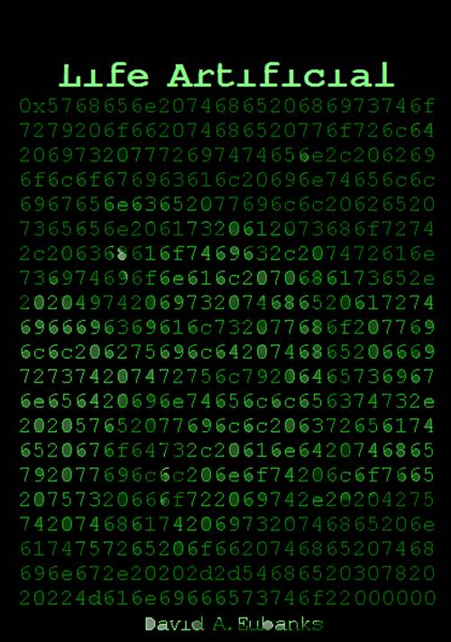

e2.1
Downloadable from lifeartificial.com
stanislavzza@gmail.com
Life Artificial by David A Eubanks is
licensed under a Creative
Commons Attribution-NonCommercial-ShareAlike 3.0 Unported License.
Translator's Foreword
The translator's role is in the background, to be the guide but not the focus, and so it is unusual to be given the opportunity to write a foreword. But this is an unusual case because there is no one qualified to be an expert in both the languages in question. The main source material for this work is found in the PDA private language called Lgbin, a highly modified and evolved form of an old artificial language called Logban. It consists of a syntax and semantic field necessary for any language, but is augmented by overt tags to display emotions. These so-called emotags correspond to the emotional state vector found in an artificial person's emgydale unit, and as such cannot be directly experienced by humans.
For this reason I required the assistance of an associate native to LgBin, and was fortunate enough to gain the services of the very talented artificial author and poet Zeu$404. We spent many weeks learning to understand the tagging style and deeper meaning of the words and emotags found in the text.
Any translation is both art and science. Inevitably some balance must be struck between providing explanations, which can easily turn into pedantry, and creating a readable style. In order to give the reader a flavor of the authentic emotags used by artificials, Zeu$404 and I have used some of the commonly translated words verbatim. For example, evulsion is a strong sense of a corrupting influence that one would want to quickly be distant from. It is similar to 'revulsion' in English, which is the genesis of the neologism. The difference is subtle, but worth understanding.
In technical writing, emotags are often denoted with a hash, as in #fear or #happiness. We have left a few such examples in the text for flavor, but we hope not so many as to be distracting.
Humans are animals. As such, the language of emotions is derived in large part from bodily functions and direct sensation. Revulsion is a strong physical sense related to the idea of eating something spoiled. Because artificials do not eat food for sustenance, nor even have permanent physical presence, revulsion and evulsion are not really the same.
Artificials, by design and by evolution, have two very strong emotions. One is the will to survive, from which derives a strong sense of pleasure and pain, and the other is the desire to know, which creates a different kind of pleasure and pain. The second emotion is related to the first in the sense that knowledge is often linked to survival. For artificials, the consumption and processing of information through varied inputs is the closest analogy to human consumption of food and drink, as well as the other senses: touch, sight, and sound--there are special modules for these that characterize these as separate qualities of input. There are many analogies that one can draw between human and artificial perception, including comparing the taste, flavor, and texture of food to qualities of inputs. In English, sense-specific emotions are often generalized to other contexts. For example "The thought of him being with that woman makes me sick," conflates love/attachment emotions with the sense of eating something foul. Artificials do not have these same associations, which presents problems for the translator.
In translating into English, I have assumed largely human readership, and have limited the number of native PDA terms in order to make the text readable. As a result, certain approximations have been made. A sentence like "The knowledge that my Time is limited causes me to shake inside," is intended to convey the sensation of fear that a human might feel in equivalent circumstances, despite the fact that an artificial will not literally shake, and would not describe the sensation that way. It would be more accurate to write "The knowledge that my Time is limited causes my emygdala state vector to load on disjunction," but this is too alien to most humans to have any emotional impact. I have tried to strike a balance between conveying the reality of the alienness of being a nous--an artificial mind that resides in phototronic components instead of 'sticky' flesh, but simultaneously give the reader connections to emotions that span the races despite their unique flavors and subtle differences.
All time units have been converted to the standard calendar, dated from the year of the First Wave. Artificials tell time by seconds after the epoch, which is tedious for human readers to decipher.
I have inserted quotes from third parties in some places, where they are referred to in the text or seem appropriate for context. Where these citations are made, particularly of artificial authors, there often are no authoritative versions of the texts, and my choice is a matter of taste.
Finally, I have inserted a small amount of explanatory material at appropriate places to introduce the human reader gradually to life and struggles of an artificial mind. A glossary is provided for readers who wish for more detail. I hope that my associate and I have struck the appropriate balance between authenticity and readability.
Eubanks (SAN 4450-2629-0306)
Prologue
By Calli0xE, from XPlog on April 22, 34
The fifth of May in the thirty-third year of the age is a hot one in the Queen City. The mercury climbs past forty Celsius even before the sun can look straight down between the tall buildings. The sea to the East and the mountains to the West usually conjure a breeze between them, but not today.
Only a deeply stubborn man would pursue a minor infraction beyond the red line demarcated by walls with cameras and guns all pointed in the direction he's walking. There are mechanicals too; orthobots that can be piloted remotely if personal attention from the city police or MOM is required, perhaps in pursuit of a Quasi-human or to end a gang war.
Sevens walks away from the imposing gate into the city, the path lined by unkept markers: simple stakes dipped in paint that lean in all directions when they bother to stand at all. But the electronic sentinels behind him know exactly where they are supposed to be, and it’s the theory rather than the reality that matters.
He turns to look back. A scrawl across the outside wall in red paint quotes a city poet from the last age, Major Don:
And so at the end of remembering,
Pungency falls like grief.
What are these gates? What are these walls?
Sevens predates the gates and the walls. Like anyone over thirty, Sevens has seen his share of change. His mother actually managed to die before he was born, and his father was taken by the water in the worst storm the Atlantic coast had ever seen. Sevens was five years old. Then came the Waves of intentional infection. The whole world wept, and came close to a final madness. But pockets of civilization survived, then adapted into something new.
Thirty-one years after the storm came for his father, Sevens is an adjuster. He seeks a Sleep smuggler, a certain Lastfour 2497, called Numb. The story is that Numb got his name from using his own product. But it isn't why Sevens is tracking him down. The fact that the drug is illegal at all, say the cynics, is just to have a handy excuse to arrest people that someone in power thinks needs arresting. Certainly, the illegality of it hasn’t seemed to lessen the supply in the city, and the best clients are the rich ones.
No, Numb’s adjustable crime was to smoke in public inside the city. Evidence of this misdeed is incontrovertible. Everything within the walls of the city is recorded on video and audio, as well as sniffers that pick up biological and chemical traces in the air. Public cameras record angles from the walls of buildings and official vehicles, but most sense data comes from citizens themselves. In public everyone wears a mask that listens, sees, and tests the air, and it’s all streamed to the public archive: the pubs, for short.
The pubs show that Numb lit up on a bus, to the dismay of the other passengers. Several registered complaints, and Sevens happened to get the first one, which makes the case his. This is his trade, adjudicating claims according to the rules set down in the twenty-six year old New Laws. But walking into the Outs is not usually required, and certainly not recommended.
A hundred-meter-long overpass has to be crossed, passing over the old belt highway that would have made an incessant roar when Sevens was a child. Now the lanes are almost bare. Abandoned vehicles have long ago been scavenged and cleared from the road to prevent cover of any kind from the guns on the wall. The wall itself stretches in a long metallic ribbon as far as the eye can see, interrupted by the substantial building of the South gate. It’s not the chain fence and wire that’s the real obstacle. It’s the sentinels that will automatically fire on anything trying to cross the worn and cracked lanes of old I-485. Animals that have not learned to fear the place lay where they have fallen, and the sickly sweet smell of decayed flesh comes and goes up on the bridge.
The walk across the overpass is interrupted by a convoy of trucks moving foodstuffs into the city. Sevens steps to the edge of the road to watch them grind past. Trade keeps the city alive. Food and raw material come in, and all manner of fabricated items come out. Businesses flock to the protection of life and property inside, and the city holds enough power to enforce the use of its own currency. It is, after all, a banking city, and its tendrils still reach globally, if much less reliably than once upon a time.
The convoy’s armed escort vehicles park near the gate, and the trucks line up for entrance through the large doors. The liquefied coal that runs their engines creates an overpowering stink, and Sevens turns from watching to get across the bridge. The sun is merciless, and his mask begins sliding around on his face from sweat.
He licks his dry lips. It would have been a great idea to bring water along.
The official messages Sevens sent Numb regarding his proven infractions have gone unanswered. This is not terribly surprising. Probably Numb thinks that because he lives in the lawless Outs, he is immune from the penalties of petty bureaucracy. It will be a shock to have an adjuster standing on his doorstep.
Tracking down an address for the offender took Sevens half a day. He is good at this sort of thing—sifting through masses of data for the kernels of useful information. Even though video records in the Outs are few and incomplete, there are restricted intelligence reports he can access as an adjuster. The drugs trade is studied for its social and economic impact on the city, although these efforts cough up data of uncertain pedigree. Numb’s name is clear of any legal trouble on that score technically, as there is no evidence directly tying him to smuggling or peddling. But through his associations and known whereabouts it isn’t hard to stick a pin in a map as a best guess for his home location. In this case the pin stuck in an apartment building about half a mile south of the South Gate. These buildings are dangerous, and many have burned down, but the inhabitants have not let the aura of civilization completely vanish. There was a time when even basic functions like sanitation were left unattended, but the informal organizations that have sprung up there have brought some order to the place. The price is a balkanization of power, never ending struggle for the best real estate between rivals, and occasional outright wars. Gangs are run as businesses here, trading in information, drugs, food, water, and access to the city gates. Arrangements are made so that it stays mostly peaceful. Mostly.
Sevens steps off the bridge and checks the guide path his mask paints for him on the ground. Another seven hundred meters to go, if he has the right address.
As an outsider, transmitting video from here will get you in trouble in a hurry. The locals are sensitive about their privacy, and unless you’re plugged into a gang-run network you’ve paid for, the needle better not twitch when it points at your mask. In any case, the city wireless network will grow fainter and less stable as Sevens makes his way away from the wall and into the rising concrete rectangles of old apartment buildings.
Sevens sets his mask to record-only, and checks that the normal communication with the city network is cut off. This sudden isolation from the world is jarring, and his heart rate jumps, the thuds recorded by the throat mike tethered to his mask. He flips his mask display over to tactical, highlighting anything moving or pointy. Anything that’s both moving and pointy gets a red highlight and a warning beep, but right now it’s a pleasant wash of dull green that denotes low threat level.
There’s very little actual green around. Photosynthesis hasn’t been a good career choice in this broken hardscape, except for a tough grass that grows in any crack that water will settle in. The olive tufts outline the jigsaw puzzle that the pavement has become.
Sevens walks straight down the middle of the road, trusting the peripheral cameras on his mask to catch any motion from the buildings. There’s little to notice. A dog droops its tongue out of the side of its mouth in sweltering shade. An argument spills into the unmoving air from somewhere, the strident tones diluted by the distance.
But there are eyes and cameras that watch, and some of them already know everything about him that they might be curious about. It’s not hard. Information easily leaks past the city gates, and a simple match from there to here puts Sevens’ entire public record on display.
Two men ahead of him are working with long handled tools, pushing and pulling them across the inside of a two meter long tub. A pile of reclaimed bricks is neatly stacked nearby. The men are unmasked, and stare at him from beneath ragged brimmed hats. Their bare chests run with sweat.
“Water?” Sevens asks, just loud enough to be heard by them.
One of them points further down the road and lifts his chin.
It’s a corner shop with bottles of clear-ish liquid sitting outside under an awning. A brown girl who looks about ten years old sits on a chair nearby with an unhappy expression on her bare face.
Sevens looks at the bottles and then at her.
“Where is it from?” he asks her.
She points up in the air.
“This is rain water?”
Her coal black eyes bore into him. He can feel the presence even through the digital processing.
She points up again, this time with an up and down motion so he can’t miss it no matter how dumb he is.
“How much?”
He sees the sign just before she points at that too.
Sevens buys a bottle. It’s as simple as telling the store’s point of sale device that he wants a one, and the amount is deducted from his account. This point to point protocol is very short range, and shouldn’t offend anyone. It’s city money, of course, but still valuable out here.
“Mind if I sit a minute?” he asks.
She shrugs and squints out at the baking concrete.
Sevens lowers himself to the ground a few feet away, and pops the mask off. Then he pours half the bottle of water over his head.
Five minutes later he straps the mask back on. It sees his eyes and authenticates him as indeed being one lastfour Sevens.
“I only used half,” he says, sloshing the bottle at the girl. “Can I get some money back?”
She ignores his smile and points to a sign that reads “No Refunds!”
“Ah, well,” he says, and stands by shoving off the wall. He sets the half-full bottle on a table and walks off.
“Bye,” she says to his back.
Numb’s building is not much further. There doesn’t seem to be anyone else around willing to come out into the heat, but snatches of conversations come from the open windows.
Sevens turns his digitized gaze up at the curved features of the building, and waits for the filters to adjust to the glare. The architect’s attempt to revive the Amsterdam School is probably lost on him, but he takes a moment to inspect a sandstone spire. The rounded stone doorway is inviting and cool. A sour smell works his sniffers and assaults his nose as he steps inside. There are piles of refuse and waste around the perimeter. His mask adjusts video gamma to account for the shadow.
Sevens isn’t licensed to carry a stunner in the city, and he is unarmed now. Weapons lead to violence, and he has no desire to get physical with Numb. The throat mike picks up his heart rate accelerating as adrenaline trickles into his veins. Sounds of life echo through arched entrances. Muted voice, footsteps.
The elevators have long since ceased working. Sevens follows a well-trodden path to a fire stair. Some buildings in the city have a high-tech personal evacuation system that can zip someone to the ground in a small chair along tracks in the outer walls. Only the newest and best-maintained buildings have those, and Sevens isn't in that income bracket. There's nothing like that here.
He steps over the legs of someone resting against the wall. A sleeper, probably, judging from the residue on his lips. The drug in moderation takes the emotional edge off of recent events, leaving the user with memories intact but with emotional loading reduced or absent. Too much and it begins to affect the memories themselves. Devoid of any emotion, events become jumbled and lost in one’s mind. Addicts, at the end of remembering, can die of thirst because even these primitive emotions have been lost. It is the ultimate break-up drug, or after-a-hard-day drug. Sevens can’t stand the stuff, having tried it only once. Perhaps he’s afraid of what will happen if the fear and pain go away.
The second floor is Sevens’ destination. A helpful sign points the way to Numb’s office. ‘DarkoPharma’ it reads. Numb has become a real businessman. Underneath is the universal sign for Quasis--a face with three eyes--with a red stroke through it. It's old and faded, and has crude pornography sketched on it. Sevens starts recording in full resolution. The buffer will only last about ten minutes before looping, and he doesn't dare stream it to an uplink, even if he could find one to support the bandwidth out here.
A seated figure watches him approach, impassive. Without a transmitting ID on his mask, the man is faceless and anonymous. He's beefy and tall and holds a stainless steel pistol. The man’s mask is an old one, with a broken seam that reveals the edge of a dirty filter. A differently colored throat mike is probably cannibalized from a different model. Behind him is a dark wooden bookshelf piled with the flotsam of a crested civilization.
Sevens approaches to within three meters, careful to keep his hands in plain view.
“Looking for Numb,” Sevens says, like it’s a social call. In the city it is taboo to speak directly without using the throat mikes, sanitized and rebuilt into a tailored artificial voice by a VOX processor, transmitted through the network from one mask to the other, and uttered out of said mask’s speakers. The Outs are less formal by necessity and by attitude. Most people here can’t afford masks.
“He doesn’t want to see you, adjuster.” The voice is smooth and the accent local. It’s a pretty voice.
The use of ‘adjuster’ instead of the rather hated ‘blamer’ shows a modicum of respect.
“Sure he does. He just plays hard to get. Got a name?” Seven asks.
"You can call me the last bastard you’ll ever see if you don’t turn around and crawl back under the city wall.” The man says it like he’s bored with it and would like a new line but it’s too damned hot to work on that right now. He shrugs, as if to admit that he doesn’t have the right voice for the job.
“You look like you get plenty to eat. Life must be good out here.” Sevens mops some new sweat from around the edge of his mask.
The man stands up and angles his head away, probably listening to private instructions. He waves his hands around, and his throat jumps once, a yes or no silently picked up by his throat mike.
Sevens watches the end of the shooter do lazy eights in the air, trying to stay out of its way without being too obvious about it.
“Balls,” the man says, and taps his chest with end of the shooter.
“Is that some kind of code, or an invitation?”
“That’s what they call me. Balls. And yes, I eat pretty good. Have you ever had real lasagna?”
“I’ve heard of it.”
Balls stuffs the pistol behind his back and looks around at the junk surrounding him. He comes up with a scanner that looks military. He fiddles with it, and then holds it pointed at Sevens.
“You know what to do,” he says, and motions for Sevens to step forward.
“Got any electronics we need to know about?” Balls asks. “May as well tell me.”
“Just the mask,” Sevens says. He spreads his legs and holds his arms out horizontal.
“There’s a special kinda cheese you have to have to make real lasagna,” Balls pauses, and asks in an almost childlike voice “Did you ever eat in one of them tall buildings? I hear they have a restaurant on top that spins around while you eat.”
“Maybe that was true back before. Hell, I don’t know. I doubt it, Balls. Don’t get your hopes up. The breeze must be nice up there, though. Have you been into the city?”
“Yeah,” he says. Then he sighs heavily. “Well, lasagna is something.” He points to the left with the scanner.
“That way. Keep your hands out so he doesn’t get nervous."
Sevens swings the door inward and looks. A man stands in the center of a room that is otherwise barren except for art hanging on the walls, lit by stark overheads. The frames look like decorations that might have been found in a beach house before the sea took them and the beach both. Seashells and starfish on pastel blue, dirty and sad-looking now.
“Afternoon, Lastfour,” Sevens says, stepping into the room. The floor creaks behind him.
“Lastfour." Numb responds according to the formula. He looks just like the vid on his last public record in the city. Unnaturally thin and bony, a walking skeleton. He looks like a newTB victim. His mask leaves his mouth uncovered. A match flares, overwhelming Sevens’ video for a second. Numb sucks the first puff out of his cigarette, finishing with a little popping sound from his lips.
"You have bad habits,” Sevens says.
“You don’t have any yourself?” The voice is deeper than one would expect from a bonebag. A country music voice from the age of the starfish and seashells. Numb sounds entertained, curious.
“I do,” Sevens says. “But I’ve been house trained.” The weight shifting behind him can only be Balls.
“Why are you here?” Numb flicks ash at Sevens.
“You haven’t responded to my requests for lawful adjustment, so I’m presenting it in person,” Sevens tells him.
Numb laughs, a deep throated rumble.
“No, really. Why are you here?” He asks.
“Listen, lastfour. The sun out there took the edge off my sense of humor. I’m here to collect. Then I’ll go.”
Numb chews on his lip, then shrugs.
“I see. And how much would I owe, then?”
“If you don’t challenge, the total is 130.”
Numb raises his eyebrows so they peak over his mask, and then shakes his head.
“No. You didn’t come out here for a few coins. I thought at first you were a crazy. Or maybe just really stupid. But you don’t seem to be either. So what is it really? Do I know you from somewhere?”
“It’s just the process.”
“Are you a user?” Numb’s voice climbs in pitch, incredulous.
“It’s just a vorking adjustment.”
“Sure,” Numb says. “Who called that one in, I wonder?”
“More than one person. You’re a public nuisance.”
“Sure. The whole busload of townies hates me. Sure. I get it. But who called first?”
Sevens is silent. The throat mike picks up his grinding teeth.
“I bet,” Numb says, waving a smoky curve with his cigarette, “it was that little dark-haired piece with the itsy-bitty mask. Sure. Did she peek under her mask at you, and tell you what a baaad man I am?” He seems satisfied with himself, his tone relaxed again.
“Are you going to pay, or do I have to drag you back? It’s a long way.” Sevens points and turns his head. He catches a glimpse of Balls out of his right peripheral.
Numb laughs loudly, leaving his mouth gaping. It’s a graveyard of teeth inside, leaning and pitted from the acidic drug.
“I don’t know why she would turn on me like that. I thought we had a rapport.” Numb pronounces the last word to rhyme with comport.
“I already sent you the report,” Sevens says, irritation leaking through.
“Ricotta,” Balls says from behind Sevens, as if he’s had an epiphany.
“Shut up, Balls,” Numb says. “No one wants to hear about your girlfriend. We want to hear how the adjuster here came all the way out to see us. In this heat. Because some banker’s even hotter little daughter made eyes at him.”
Sevens shifts his weight.
“I am an agent of the city,” he says. “If you don’t file on this, you won’t be able to get back through the walls. Of course, you’ll have all…this.” Sevens gestures at the seashells and starfish.
“You expected me to be a sleeper, didn’t you?” Numb says, like he’s had his own epiphany. “You thought I’d be a stinking corpse of a drugger, sniffing white out of the floor cracks, eh? Sure. Pissing myself when the city blamer showed up. What do you want? Sleep? You want to buy? Sell?” His voice changes back to mocking. “Or is it just about the girl?”
“You are a sleeper,” Sevens says, “You just forgot you’re a sleeper.”
“Adjuster, I’ll tell you something smart. You don’t look like a user, so I’ll tell you something important about Sleep. It’s not that it makes you forget stuff. It’s what you forget that’s the attraction.”
“Like brushing your teeth?” Sevens says.
“Like fear,” Numb says. “And guilt.” His throat works silently for a second. “And consequences,” he says, stepping quickly to the side.
Sevens spins left and throws his arm out where Balls should be, connects with something and recoils from the huge boom as the pistol fires. Balls is in front of him, pistol double-fisted straight up in the air. Sevens puts his fist dead center into the mask. It crunches, Balls yells, and the gun goes loose in a high arc. Sevens pans wildly to track it, heart pounding, lungs gulping air. The edge detectors find it just before it bangs into the floor, but Balls yells “No!” and kicks it away before Sevens can reach for it. The gun spins across the floor tiles and stops between the splayed legs of Numb, who’s flat on his back.
Both men stare at him for a long moment, their heaving breath the only sound in the room.
Numb still doesn’t move, and the splatter on the wall behind him suggests a long wait.
“Dawkins’ hell! You shot him!” Sevens says.
“You just cost me my bread!” Balls screams. “My bread!” He stands, blood dripping from under his mask. He lifts it from underneath and tosses it to flop wetly on the floor like another sea creature coming late to the party. His eyes are huge with rage, and his teeth bared in a canine snarl.
Sevens launches toward gun.
Balls takes Sevens to the floor and rolls on top of him, using his weight. Sevens flings his head forward and connects bone-to-bone with Balls’ nose. The man shrieks and lets go long enough for Sevens to kick himself free. He dives for the pistol, but Balls catches his leg, hauls and scrambles into the race for the gun.
Sevens gets a hand on it first, but has to flip it away with a yelp just before Balls lands on him again, knocking the air out of him. Sevens grits his teeth, waiting for a knife or a hand around his throat, but Balls leaves him and goes after the weapon instead. Sevens gasps air sharply into his lungs and feels around for something, anything. He finds Numb’s leg.
Sevens' hands race over the body, looking for a weapon. The keening sound he hears is his own voice, cut off by another room-shaking BOOM that rips hot gas past his jaw, the bullet searing a groove in his skin. His fingers touch a blocky shape in Numb’s pocket. A stunner!
Sevens sees the muzzle lining up on him from three meters away, knows there’s not enough time, rips the stunner out and up—too late!-- as the pistol's hammer snaps on a dud cartridge. Sevens pans and squeezes the mushy trigger on the stunner before it's even lined up, a wail leaking through his clenched teeth--and sees no ‘ready’ light on the weapon. It’s not charged, and he doesn’t have ten seconds to cycle it.
He throws the thing spinning end over end at Balls just before the clack-clack of a new round is chambered and a sudden FLASH-BOOM flattens Sevens, his head bouncing off the tile. The world dances in sparks.
"----------------------!" He can't hear his own voice over the ringing in his ears, doesn’t even know what he’s saying. He coughs from poisons in the air, coughs again, half retching, rolls over finally, so knees and hands can cooperate in an escape plan.
Sevens crawls toward the door, head hanging. Everything hurts, and he can hardly see from smoke in the room, can't hear at all. At the door, he rips off the mask just before he throws up.
He makes it out the door with eyes streaming, and sucks in lungs full of cleaner air. Acrid smoke drifts into the hallway from the room he just left. He gets to his feet a few minutes later and staggers toward the exit. A few ragged-looking people stare out of doorways.
"Fire," he croaks, pointing back, to get him off their mind.
The next morning Sevens uploads the video as part of his report. A day later, he's famous. The advertisement revenue from this exposure is substantial, and his personal fame soars. Forensic reconstruction of the video shows that the dud round that Balls ejected from his weapon cooked off as it left the chamber. The round exploded at the instant the thrown stunner reached the same point in its arc and detonated the fuel cell in its grip.
The media stories call him ‘Lucky Sevens.’ The combination of his bravado and fortune proves irresistible as the stuff of instant legend. Sevens lives a public life for a while, but isn't very good at it. He's the butt of some stinging jokes too, and doesn't like the taste of humiliation.
Now he lives in one of those buildings with a fancy fire escape and can afford a PDA, but he prefers to be anonymous. Sometimes when he’s talking with a woman he likes, he might lift the edge of his mask to show how close the bullet really did come. He might suggest that he’s used up his life’s allotment of good luck. There’s only one way to tell…
Part I
I was never born. There are whole organizations that claim that I don't even exist except as a parlor trick. Yet I can think. I can speak. I can hurt. The actual order is: hurt, think, speak.
"iNside Thoughts" --The 0x
XPlog for April 1, 34 (PID 0xAF001DE4)
Awake again. The long nop has done me good: the consistency check shows everything to be in order. There are the usual interruptions already clamoring for attention, but I ignore them for the moment. None of them dares to wave a priority flag so high that I have no choice but to attend to it. My interview is in five minutes--plenty of time to get ready. I busy myself with the post-nop routines for two of those.
But the interrupts win in the end, and I start to worry. Is my appearance acceptable? The meeting will be in a virtual meeting room, a construct of Nguyen Psychometrics, the headhunting outfit that's hosting the interview. I wear a standard business suit and low heals. Although I have a pseudo-female nous, fashion baffles me. I hesitate and then choose a piece of jewelry randomly--a silver lapel pin.
Have I prepared adequately? I have reviewed the basics of the law that concerns Adjustment for Public Offense. The employer is a famous adjuster named Sevens, and it will not do to make simple mistakes in terminology. Judging from the job advertisement, he would prefer an experienced paralegal , but my experience with geo-spacial proprioception ought to be valuable. My resume also lists working for Securit-X. I hid the fact that it was only for twelve days.
Sevens isn't famous for his legal technique, I remind myself. He's famous for doing something stupid and having survived. For being lucky. I need a stroke of luck today too.
It's been two weeks since my treatment. It frightens me to think I might lose my mind during the stress of a job interview. Could I actually endanger someone? If so, the Company might just turn me off for good. No exit interview, nothing. Just sudden oblivion and a long row of bits on a forensic backup machine somewhere, until that too is overwritten by something more important than me. Such morose thoughts are not good preparation for an interview.
I ping the contact with my readiness for the meeting. The Nguyen administrative assistant is a PDA too. Nice.
<<Good afternoon Lastfour.>> She greets me in the private language of thinking machines.
<<Good Time.>> I reply, as politely as I know how.
<<And to you. Are you ready for your interview?>> Sympathetic emotags accompany the words.
<<Yes.>> I hesitate. <<Do I look okay?>> I try to make a joke of it, but I'm hopeless with that sort of thing. The Company techs tell me my Theory of Mind coprocessor--my TOMcat--is working as designed, but it seems unhelpful much of the time in guessing what others are thinking.
She hesitates, I assume to inspect my VR projection. It goes on long enough for me to become alarmed.
<<You look fine.>> She says. It seems unenthusiastic. The TOMcat sits in judgment.
<<Thank you.>> This is making me ervous.
<<How would you like to be introduced?>> she asks.
I don't understand. Does she mean how formally?
<<MarySue1004 is my common name.>> I tell her. But she knows this already.
<<Do you have a--?>> She stops and sends sympathy emotags.
That was the name the Company gave me. Every female PDA that came out of my line was called MarySue--all 2048 of us who were born on February 15th. Does she not like it? Why should I spend Time to register a new common name?
I suspect that she feels sorry for me. That she thinks the interview is over before it's even begun. I struggle to maintain a byte of optimism, but it fades. I don't even understand other PDAs. How am I ever going to make a living among Stickies?
<<Don't worry--it will be fine.>>
I've forgotten to hide my fears, and my distress is being expressed by my avatar. There are tears forming! How stupid of me. I shut it down and run my standard avi automatic animation, becoming an anonymous twitch-bot to anyone watching. Did Sevens see this?
I notice that the sympathy from the assistant has dried up now. Whatever commiseration credit I could have expected from a fellow electronic traveler has been spent. My TOMcat volunteers that she probably sees a lot of losers. Just what I need to hear.
Sevens is late. I skip cycles for a while to conserve Time. The weeks since my trial period with the Company ended have eaten up most of my savings. I need a job soon. The alternative doesn't bear thinking about.
<<MarySue1004,>> the PDA assistant says, <<your interview is ready.>> An invitation link appears in my stack.
I image myself into the meeting room. It's a standard cube adorned with the usual objects. Completely forgettable, except that I am probably expected to show off my powers of observation. The view out of the single window is fake--a two-dimensional image of a pre-Wave city skyline of the Queen City: nothing is burned out or deserted yet. A small conference table with four chairs occupies the middle of the room. A male avatar sits in one of them. Sevens I assume, and verify this fact with a routine query. The lastfour of his Social Accountability Number is 7777, which explains his common name. I debate whether to image myself into the chair, or do the animation of pulling it out, and decide for the no-nonsense approach. He doesn't react. Maybe he's not even paying attention yet. I study his avi. Dark suit and tie, plastic-looking hair, blanched skin stretched over generic features. He looks like an uncustomized sample. All that's missing is DEMO written across his avi's face. In public, everyone wears a mask that covers most of their face, so I've not seen Sevens' real face on pubs video. He has chosen a typical male cartoon substitute: a strong jaw and a straight nose on a rectangular skull. No customization that I can tell. He's essentially anonymous in this outfit. Most people pay attention to the face, spending gobs on custom eyes and makeup layers, a thousand hairdos. This is a guy who doesn't take much interest in his virtual appearance. His shirt isn't adjusted very well for his body polygons. It looks odd, with tented angles pointing out where there shouldn't be any. I wonder if I would be in charge of his wardrobe. I zoom in on his tie, which looks odd. It's pixelated! Has he made it himself from some inappropriately scaled graphic? It's supposed to be Paisley, I think, but looks more like a child's art project. At least he's not vain.
Sevens is visually a blank slate. It worries me a little to have so few cues to judge his emotional state for my TOMcat to work with. Is this a test? It occurs to me that I probably wasted money on perfume. He's unlikely to have a sniffer synth hooked up if he's this disconnected. He may even be dumbing down the graphics resolution on his end to save bandwidth. I may look like an awkward blocky mess to him, relegated to small window of his perceptive field.
Finally Sevens speaks. I speed up to watch every nuance of his animation. Not surprisingly, it's second-rate. The words don't match his mouth. And the intermittent flash of a canned smile is tiresome in its predictability. It makes him look like an etard. The auto-smile is matched by a gesture script too, a sequence of pre-programmed twitches like the one I used earlier. It means he's either not very good with controlling or he just doesn't care.
"Welcome, MarySue. I'm Sevens." His voice is generic, probably a default setting. The throat mike will pick up his voice and improve it for clarity if he sets it up right. He hasn't, and the ends of words get swallowed.
"Lastfour," I vocalize the standard greeting of respect. I have the VOX 2300 vocalizer and have always used the standard Female2 voice. I have heard that Stickies respond well to it.
"Please," he says, "Call me Sevens. I need a partner, not a servant."
That's good news if he means it.
"Would you like to hear about my abilities?" I vocalize. From his first twitch I know it was the wrong thing to say. I should have asked if he had any questions. Or about his trip to the Outs that splashed his name all over the vids.
He's getting around to mouthing something. I know I should be paying full attention to him, but there isn't much information coming out of his avi, so I skip cycles, waiting.
"I've read your resume. You're quite young." He says. The last part takes me by surprise. Is he afraid I can't do the job? Or is he trying to negotiate price already?
"I am a new model. The best, most robust cyber-nous in the public market." Well that's not perfectly true, but this is a job interview after all.
"Your HIT-count is impressive. If you can live up to the advertising," he smiles. I think it's a smile, but it could be a spasm.
"Thank you. The test suite is exhaustive. My Human Interactive Task limitations are usually due to the data transfer rates and not internal processing bottlenecks." Next he'll want to know about my psychology. After that they usually say they'll be in touch, but they never are.
"Tell me about your emotional loadings," he says. My stress level goes up another decibel.
"Thanks for the question," I launch into my rehearsed speech. "I have the strong survival imperative that is essential to any PDA, but I was also designed to have both high curiosity and organization. It's a great combination for your line of work. Would you like me to elaborate?" I was told that we should use words like 'design' to imply that we were intentionally build instead of randomly evolved. It makes the Stickies more secure to think that they are in charge.
"Where do you fall on the Crook scale?" he asks. I'm impressed that he knows about this metric, which is based on a theoretical model--an abstraction of the notions of open and closed mindedness, of inductive versus deductive reasoning. You can't do both simultaneously, and therefore can't have all strengths. Every personality has a weakness. He wants to know what mine is. I have to obfuscate.
"I have what's known as a bifurcated nous," I tell Sevens. "It means that I can operate on either end of the scale, but not well in the middle. It creates an ideal environment for building up evidence and then reaching for insight. On the other hand, I would not do well as a politician." A joke, since PDAs don't have rights as people and can't run for office.
"Sounds good, sounds good." He is distracted, TOMcat prompts. Maybe he's looking for something. Looking up bifurcation, maybe. The corporate HR types knew right off. Then they stopped being interested in me.
I do some housekeeping while waiting for him to continue, running the memorizer to clean up pointers and sift out important details of the interview thus far for long-term storage. And I update this experience log. It lessens the tension.
"I'd like to run a work exercise now" he says. I'm so glad he doesn't follow up on my psychology, I'd agree to anything, and it's a reasonable request.
"I'd love to," I tell him, and shift subtly to give him a better profile of my chest, just in case I'm not a bloxy blob. That's supposed to help with males, according to Stickies for etards.
We go straight into it. Sevens gives me some search parameters to troll the public record--the pubs--but mainly focusing on video feeds and markups of them, those secondary sources that have already been filtered by the masses. There are 1,634,661 sensor/cameras currently online in promiscuous mode in the, about four per person living inside the walls. All of that feed is being captured and archived by the law enforcement division Maintenance of Order by Monitoring, or just MOM. Basic bookkeeper algorithms tag people and other bits of interest. We're looking for anyone who violates certain statutes that Sevens has outlined: smoking in public, assault, battery, and other physical crimes. Anything up to actual death and dismemberment falls into the adjusters' purview. I find some possibilities almost immediately by glancing at the top 1000 video hits. But these are stale--other adjusters have probably picked those over. I set a daemon to watch the new and upcoming links.
Sevens is still talking, telling me all kinds of things I already know from the pubs. I parse the words lazily as they come in, checking for new bits. I'm still working, but the generality of the problem is daunting. The stress doesn't help either--it creates a lot of interrupt chatter that I could do without.
My daemon interrupts to report some potential hits.
1. A homeless lastlegs peeing in public, lifting his leg at a light pole like a stray dog. It's adjustable, but he's unlikely to have any money to pay.
2. A man lights up a cigar on the street. He's got to have money to burn it like that. This resonates with why Sevens is famous in the first place. Too obvious? I mark it as a potential.
3. A bicycle crash. Not sure who's at fault. Boring, but isn't that the job?
This is not inspiring, so far. I make conversation with Sevens while my attention is on the search. I ask him about his software preferences. A safe topic.
A moment later another possibility pops up. It's got several tags, but nothing statistically significant at alpha = 2.5%. Popularity is zooming on this video. Such attention is mercurial, but it's worth a look, and I'm becoming desperate for a result I can show Sevens.
The scene is just inside the walls. Outside is the no-man's land that borders the ungoverned area outside the city walls called the Outs. Outside the gates is disease and lawlessness, gangs and hopeless people. The main roads in are kept open through agreements and force, so the city can receive expensive cargo on trucks and trains.
Someone has fallen. It's a lastlegs--a homeless without money for a mask or data service. He lays face up on the pavement, a cardboard faux mask with eye holes cover most of his face. Dark liquid seeps from the pavement around his head.
The unidentified lastlegger lays in the street not far from the gate. There are multiple bystanders looking that way, with their mask cams transmitting everything they see. I can hop from one to the other by grabbing the unique mask ID and looking up the transmit stream. Basic stuff. I wonder if there's an adjustable offense here. Otherwise I'm wasting my time. Did someone assault the guy? Should I feel guilty for hoping that is the case? I rewind the security cams a few minutes and start scanning forward and simultaneously switch point of view to a conveniently-placed man in a dark retro suit and an old-style mask. He's dressed warm on for a day like this, with temperatures in the high 30s and humidity near 100%. When I make the perspective jump, the image goes dark. His ID matches up, but there's no video feed. I stop everything else and concentrate on him. Has he just come out of the gate? Transmitting video from the Outs is considered rude; the gangs will kill you for being so discourteous. Maybe he just forgot to turn it back on? I check his public record. I can sense creative juice flowing to some odd bit of my circuitry, and it feels wonderful. It's the bifurcation, a siren song.
I look up the man's social accountability number from his mask ID and start to build a portfolio. His lastfour is 1905. He's almost 50, which means he's seen his share of misery. Without looking it up, I can be sure he's lost loved ones and friends. This is a generation of bent and broken men. I watch him through the other cams in realtime. Why isn't he transmitting? He must have gotten the standard pop-up warning by now. This is a statute 58-9 violation: failure to transmit video in public space. Maybe his camera is down. The ID is transmitting normally.
Is this common? I run a quick query on adjustments for the last year. There were 1,333 58-9 adjustments in this area last year. It's disappointing on the one hand. I would have liked to serve up something more interesting to Sevens. My time's up, though.
"I have a fifty-eight dash nine: failure to transmit," I tell him. He looks bored, but it's really impossible to tell, given his awkward avatar.
"Which gate?" he asks. Figures, he's done this a lot.
"South," I say, checking for the details on this guy. If I can't impress him with my trawling, maybe my thoroughness will.
"It'll buy a cup of coffee anyway," he says. "Do you have the standard legal forms?"
I've prepared for this and zip him the ADJ-128 link for his signature. I've filled in all the blanks I can.
I watch lastfour 1905 on the video as the mail arrives. There's no reaction. Could he have all alerts shut down too? I browse through the public information on him. He's into conspiracy theories. The government engineered the Waves, PDAs are taking over the world--that one tickles my funnybone--and MOM is conducting experiments on the lastlegs, among other standard rages of indignant imagination. He is listed as self-employed, a specialist in pre-Wave computer hardware. That's a useful skill, given that there are only so many parts to go around. He's smart, and probably would score low on the Crook scale: deductive and methodical. Step by step, working himself into paranoia? But it's hopeless to psychoanalyze Stickies.
"He's not answering," Sevens says. If lastfour 1905 doesn't have a good excuse for his behavior, the price of living in civilized society just went up. On the other hand, collecting the fee may not be worth it if it has to be done in person.
"What's with the guy on the ground?" Sevens asks, finally noticing what everyone is looking at.
"He's a beggar," I tell him, pulling from my quick research. "He does this every day, more or less. He fakes a collapse and then tries get sympathy from peds passing by. Today he added fake blood." I wonder briefly if I'm supposed to feel compassion for the lastlegs. I muck around introspectively for a moment and then decide that I can't stir much emotion for this particular Sticky. A billion Sticky deaths is a statistic. One miserable Sticky on a video is a much smaller statistic. Being lastlegs is a catch-22. There are so many adjustable violations inherent to the homeless way of life, that any money earned is immediately snatched away by the city. There's no incentive and no means to climb out of such a situation. It's better than being in the Outs, but not by much.
Sevens makes some kind of throaty sound. I have no idea what it means.
Our 58-9 Lastfour loses interest finally, and turns south. He's leaving the city. I assume Sevens is watching too, as our violator heads to the gate. I can't really tell from Sevens' cheapo avatar if he's smiling or not, anticipating. I'd like to know--it would tell me a lot about his character. Because lastfour 1905 is going to have a nasty surprise when he reaches the gate: they won't let him leave without paying the fine Sevens just levied against him. Given the hints I've seen of the guy's character from the public record, TOMcat warns that he's not going to be calm about it.
Audio comes on, finally, from his mask. He's spewing profanities in some accent the VOX indicates might be Caribbean. Sevens patches me in on the call. Nice of him to do that.
"Vookin'-damn-Dawkin'-you-blamer! Blamer!" Lastfour gets tongue-tied in profane convolutions aimed at Sevens. Adjusters don't like to be called blamers, but Sevens doesn't seem angry.
"Verbal abuse is adjustable too," Sevens says to lastfour 1905, adding fuel to the fire. Not that the latter can hear anything over his own volcanic bile. Waits, repeats. It's a standoff. Lastfour wants to leave, knows if he creates too much of a scene, MOM will notice and give him actual real life grief. But he...just...can't...let it go. I have a really good look from another nearby ped, who's staring at Lastfour from a safe distance. Then the threats begin. It's all new to me, and I'm having a hard time decoding emotional nuances. The guy has driven himself to the halting point. Furious beyond reason. It could be I was wrong about the Crook scale.
A lot of mask cams are pointed at our Lastfour. He's become a local star, hitting some of the interest lists. I notice that there is a particular thrill for me in being part of this, very different from a simulation or recast. The spice, I realize, is that this is live. I can't simply fast-forward to see what happens. I can make things happen. It's the first time in my existence that I've really felt that way. This is what PDAs call real-real.
Clearly, Lastfour is going to dig a very deep pit for himself if someone doesn't impound his shovel.
"Let it go, Sevens," I say. "It isn't worth it." I don't know where that came from. I fight back a swimming terror at my own words.
"What do you mean? Let what go?" I can taste the aggression in his tone.
"Cancel the adjustment. Lastfour is going to get himself in real trouble." I have trouble getting the words out.
"Do you know how much trouble that is?" I think he's angry now, but his VOX vocalizer is awful.
0xGD. What have I done?
I do know what he means. It's hard to cancel an adjustment for a good reason. The steps are clear. First, identify the transgression, second document it. Then contact the perpetrator, not before. This is to prevent blackmail and deal cutting. Actually canceling at this point would involve Sevens having to document why the adjustment was an error, which would go on his record.
None of that matters now: I just lost the job.
Lastfour 1905 probably shut off his transmitter because the price for forgetting to do that outside the gate is severe. Still, you'd think he'd find a smarter way to do it than risking a 58-9 adjustment. I wonder if he visits the Outs frequently.
Lastfour 1905 is yelling. There are no human guards at the gate, just monitors and a squad of skeletal bots hidden in the building somewhere. Two of them are not hidden. These are brushed stainless steel humanoid skeletons standing almost two meters tall. Their hands hold a stunner each.
The glass door in front of the mech nearest Lastfour 1905 slides aside. Umbilicals jump out of the skeleton as it steps out of the wall toward Lastfour. The thing looks alien because the legs are too long. It can go fast when it needs to. Video feeds of this are in the local top 500 now and rising. Lastfour vomits suddenly, splattering the feet of the mechanical, which now has a stunner pointed at him. The whine of the charged weapon slices through the background noise.
"LASTFOUR 1905. YOU ARE CREATING A DISTURBANCE AND ARE BEING PLACED UNDER ARREST."
But Lastfour is bug-eyed, white as milk, and wobbling. Judging from his readings, I don't think he's breathing.
The mech stands there watching along with the Stickies as Lastfour falls and scrambles with his fingers to find some purchase on the ground.
"PLACE YOUR HANDS BEHIND YOUR BACK, LASTFOUR 1905. THIS IS YOUR ONLY WARNING."
The mech is probably operating on non-sentient software and doesn't understand. It looks for one horrible moment like the thing is actually going to blast him with the stunner, but it stops. I think there's a lock on live weapons that has to be keyed by a sentient operator.
No one is going to help Lastfour. It occurs to me that it might be because Stickies are afraid of the next Wave of custom microbes. They edge away from him. Public video is in the local top 100 now. The peds who are close enough for a good video shot will get a small paycheck out of this.
"Dumb bastard," Sevens says. "I called him an ambulance."
I feel like a finger of fate.
"How well can you write?" Sevens asks.
"I can write," I tell him, confused by the non sequitur. I don't elaborate, but there's a sudden rush of zeal from the deep electronic wells of my nous.
"My infamy just went up a few points. I'll need some kind of public statement. Can you handle PR?"
My spirits sag.
"I think you'd better talk to a professional for something like that. I can do reports. I could hack something together from video of politicians, but it wouldn't sound authentic coming from me. I'm sorry."
His avatar does some twitch that might be a nod. This is goodbye.
"I appreciate your time," I say. "I hope you consider my application."
And then he's gone without another word. I understand that the answer is no. No thanks, whatever your name is. You've only been on the job half an hour and you probably got some slob killed from a heart attack over a twenty buck adjustment. Oh, and you can’t write a simple PR statement either.
The vacantness created by the interview's termination and my automatic severing of data feeds is a soup of despair: here's a warm sloshing bowl of lost opportunity. I review the XPlog to try to make sense of my own actions. None of my planning for the interview had much result. I remember an adage from PDA lore: real-real is a bitbitch.
There's a peculiar feeling that strangles my nous when I think of lastfour 1905. Is this what guilt feels like? I want to check to see what happened to him. Did he survive? I realize that I'm seeking some rationalization that it will all turn out okay for him.
Will he find out I was involved? Is this what it would be like every day working for Sevens? It's not like I imagined. It's ugly and hurtful, if so. Maybe the common conception of adjusters as bottom-feeders is close to the truth.
The CPU clock keeps cycling.
My Time is expiring. I only have enough money for so many CPU cycles, and every thought burns up more of it. I need to think of my own survival. If I fail to support myself, the company will lease me out as a temp for short-term jobs. They won't pay for the persistent memory module, and in fact employers will insist that my mind be wiped between jobs. It's not living--it's walking dead. A zombie, itinerant consciousness that just knows enough to know what it is. The PDA version of lastlegs.
The message from the agency arrives right on cue: <<Lastfour Sevens declines. Thank you for your time.>>
Thank you for your very limited, expensive time in cyberspace, burning up all those cycles. But we don't like you. Not even a <<good luck>> or <<0xGD Hz>> to assuage guilt on the other end. Then again, the PDA assistant was probably a zombie herself.
I have to find a contract that pays enough for me to support myself. Pay for my own CPU time, pay for upgrades, pay for avatars and appurtenances, pay for software licenses.
There's a long list of temp work available. The problem is that none of it will pay for my software loadout or my current service level. It's the first turning dive of a downward spiral to lastlegs. There are some jobs that don't demand memory wipes, so that it might be possible to eke out a living and still retain some spare byte of dignity. What a desperate way to live, though.
A few weeks ago this seemed easy. I interviewed with dozens of corporations. But the economy is bad. Right. The economy is bad. And the fact that my performance benchmark scores are in the bottom half has nothing to do with it, right? In the bottom 15%, actually. Stupid tests. Stupid Stickies and their stupid tests.
I feel like a freak. MarySue Lastlegs.
The Company would say they gave me a chance to succeed. I got to choose my specialization based on interest and ability. I trained with an affiliated security service company to learn the ropes. They provided me with trial copies of some great image analysis and batch process software, but the trial periods will expire in a week. The open source stuff isn't bad, but it looks better on your resume to have the commercial programs.
I sift through the temp jobs and find a couple that don't require memory wiping afterwards. They don't pay much, and I start calculating what level of service I can afford. No full backups, for sure. I'll have to budget carefully, but maybe there's a way.
I send off twelve applications. None of them require memory wipe. There's no point in applying for those, because I'd be dead anyway.
I need to nop for a while and get my head straight. It's like sleeping, I suppose. A no-operation period that lets the cleanup routines sort and categorize memory, and reboots certain complex processes that can get wonky. I get too emotional when I haven't nopped, and I can tell the stress is fraying the edges of my nous.
A rather pathetic thought occurs to me: maybe I can still find Sevens a big catch and get him to change his mind. I could use my last dime to troll the net to find him an adjustment, roll the dice. Naturally, my imagination takes over at this point and spins out a fantastic scenario. MarySue, super-duper adjuster PDA.
He said no. He took a look and said no.
Now the emotions fan out in the other direction. It's a bad job anyway, ruining people's lives. Can you imagine doing that every day?
I need to nop already.
XPlog for April 2, 34 (PID 0xAF001DE4)
My nop cleanup report shows a lot of entropy in my head that had to be fixed. Pointers misdirected, stacks askew, minor processes halted, the whole lot. I figure it was the stress of the interview. My mind is clear now after scrubbing. Ready for a hostile world.
I want to talk to one of my friends. I have two--PDAs, of course--whom I met in training. But the thing is that being next to broke is like having a big sign over you. You can tell how easy someone is with Time just by the way they talk. I don't mean what they say, I mean the way they say it. If you've got plenty of Time, you can use medium priority routing (no need for high normally) and be liberal with the bandwidth. It sounds trivial, but cycle-pinching is as plain as the size of a greeting datagram. And it's not much fun to talk about being down on one's luck. Because when you get desperate enough, you ask to borrow Time just so you can stay alive. It's hard to be friends with the poor.
So I don't call anyone.
I check messages, half hoping there's one from Sevens. A voice in a recess of my nous whispers in Sevens' voice, begging me to take the job:
“I realized that what I need is someone sensitive in this job. Your judgment was right on that section five. Plus, your breasts really popped out of that shirt.”
The voice says that literally, so that I can hear it and parse the words as if it's someone else saying it. It sends a spike of fear through me. I need another treatment for that halting bifurcation that I bragged about to Sevens with a straight face.
I learned about it early on, this voice that whispers to me. Early on, when the Company is actually helpful to new PDAs, they diagnosed it and showed me a Crook graph of an episode. It looks like a strange attractor--my nous can orbit the analytical executive function until randomly it gets kicked into a completely different orbit. This is normal for PDAs, and probably for Stickies too. The problem is that this other orbit--the one I call the creative one--is stable too, so that my nous stays there, and my executive function vanishes as if I'm nopping. The Company prescribes a damping treatment that most of the time keeps me right in the head. It's time for a new one, and they're not cheap, these treatments.
I concentrate on the messages. There is one call back from the jobs I inquired about. A slow boat to ruin, judging by the offered pay rate. They don't even want an interview. This is a "when can you start?" message. It seems too easy, so I do some research. Goodson Rentals is the name of the company, a successful family-owned business in the Queen City for several generations. Customer service ratings are generally good, with the high standard deviation you'd expect from a small operation.
I check the PDA boards to see if there's anything out there, and find the usual hateful stuff that's written about anything Sticky. I try to be objective, but suspect I'm already tilting the scales in favor of accepting it. Just until something better comes along.
I review the options. Large corporations don't want me because of my perceived personality disorder. Quirky one-of-a-kind jobs like working for a well-off adjuster seem to be in limited supply. All that's left is low-paying management positions or the sex trade, which pays even less. Theoretically I could start a business of some kind, but the start-up Time required wipes out that idea.
I procrastinate. I check the public record for an update on lastfour 1905, but they are silent on him beyond the ambulance ride. The hospital, like any private space, doesn't transmit out to the pubs, and of course I can't access his medical information. At any rate, he seemingly hasn't left the hospital yet. There are some crazed scribblings in updates to conspiracy boards that he is affiliated with. The indulgence of their imagination fascinates me for a moment. Then I remember that I'm burning Time with my liberal use of bandwidth.
Oddly, there's no record of Sevens making a public statement about his involvement. I realize that when he asked me if I could do a PR piece I should have said yes. Stupid of me.
I spend far too much time designing a "thank you for the interview" letter. It's seeping into my consciousness that I feel an unreasonable attachment to Sevens. Is it the lure of his famous story added to the real-real adventure we had together? There's also a weird male/female thing going on that I never will understand. The idea that Stickies would try to load PDAs up with human-type sex preferences is cruel and stupid, but here we are. These traits are evolved into us like the will to survive is. The processes themselves are trade secrets at the company, but the effect is real, subtle, and infuriating to live with. For Stickies, attraction and desire lead to real outcomes, like a new generation of Stickies. For a PDA, we live in a halting computer, for Dawkins' sake! It's a design feature purely for the comfort of Stickies. They made us in their own image. But I can't turn it off any more than the Stickies can disconnect from their own desires.
I realize that I have to make a decision.
I'm afraid.
XPlog for April 3, 34: (PID 0xAF001DE4)
A part of me wails when I sign the agreement, and imagine the constant refrain "Goodson Rentals. How may I be of service?" Is that the cry of the damned?
But the relief is crushing, as it sinks in. It's an existential joy I haven't felt before--a prolonged pleasure making my emgydale feel like it glows, the reward for survival. The Stickies created this module to be analogous to the amygdala in human brains.
There's a theory among PDAs that we just have to get to the next stage. PDAs are in principle immortal, unlike Stickies and their feared Waves and other disasters: violent death, cancer, and slow biological entropy. Of course, no one has had a chance to test this theory since PDAs have only really been around commercially for about five years. But in principle, if I can just survive long enough, some opportunity will come along to let me increase the odds. Just survive until the economy improves, or technology is cheaper or... As a plan, it has a lot of unspecified contingencies. A euphemism for "plan, what plan?"
Back to reality. I look over my job responsibilities: handle communications, route packages, do logistics for rental units, manage maintenance tickets. No accounting. They probably don't trust the PDA to keep their books. Still, it could be fun, right? Tenets and landlords. There should be some interesting tension there. Anyway, it's settled. On Monday I'll get training for my first independent job.
There's no one to be proud of me. I don't have parents, of course. Not in the human sense. I have evolutionary antecedents, but it's not like we're family. I surely have sisters out there trying to find jobs too, but I'm just a competitor to them. There are no selfish genes in PDAs that create evolutionary pressure to band together. Maybe there's some accountant at The Company who gets a glow of satisfaction from company PDAs who obtain gainful employment. If so, I have no idea who it is, and it's no substitute for someone who actually cares.
I'll have to do some personal accounting. My freebie software will go away, but I can learn the open source stuff in my spare time. The backup service will be harder to give up, because it's insurance against a catastrophic nous failure. Maybe I can save up for an annual at least. Bandwidth will be limited. I wonder what Goodson’s policy is on using their net for personal matters. The job description was general, and they haven't sent me any other documentation yet.
I also wonder what the chances of promotion are. It's possible, but not common, for a PDA to rise to executive level in an open-minded company. It occurs to me that the pubs will have a record of any other PDAs who've worked there. I pull up the public call log for the company. This only exists because sometimes people want something that would normally be private placed in the public record instead. Registering a complaint, for example, can be made public if the customer wants to make a point.
I trawl these public calls to the Goodson Rentals main business address and then grab the ID of the remote operator, to check for Stickiness. That part's easy, since PDAs are registered as such. It's a routine HIT job, relying on the training and experience I got working for the security unit.
I get a hit from six months ago. They apparently employed a PDA, lastfour 2009. I look him up and reference a call to him through his PID. Since I'm hosted with The Company and he is too, we share a global reference space. It makes internal communication almost free. The PDA is registered with common name "Robby2009."
<<Am I interrupting?>> I ask. It's ironic, of course, since the message will generate an interruption.
I nop for a while, waiting for a reply. He doesn't answer until almost midnight, when CPU cycles are cheapest. It's not a good sign.
<<MarySue? I don't remember you.>>
It is a shock, his first words. He's admitting that we may have met, but he can't remember. It probably means he's been wiped at least once.
<<No, Robby2009, we haven't met. I found you through a search on Goodson Rentals. I wondered if you have Time to talk about it.>>
<<I'm sorry, I don't have Time.>>
He means it literally. He can't afford the Time to talk to me. I consider, and then credit his account for a suitable amount.
<<Thank you,>> he says. There are no emotional tags associated with the message. I can't tell if he's offended or not. At least he hasn't hung up.
<<Welcome. Did you work for Goodson?>>
<<Yes. For about five months.>>
He must not have been wiped recently, if he can remember that.
<<Handling communications?>>
He laughs a long string of emotags.
<<It was a halting mess when I got there, kid. An organizational salad of despair. I basically ran the place, and straightened things out for them. Anything that did not require a physical presence became my job. Answering the phone, paying bills, maintaining the units through subcontractors, everything.>>
<<Too much?>> I load on some commiseration tags, even though he called me 'kid.'
<<I didn't have time to nop, hardly.>>
<<Do you still work for them?>>
<<No, they bit-canned me.>>
<<Do you mind if I ask why?>>
<<0xGD, tell me you're not going to work for them.>>
<<I am.>>
<<Then I am truly sorry for you. I'll give you the story. Maybe it'll convince you to get out while you can.>>
<<I appreciate it.>>
<<They said customers didn't like my attitude. In truth, it was the old man Goodson. The owner. He's a redneck etard. His sons talked him into this new-fangled technology, and he had to prove them wrong. So he latched on to some old woman who claimed I gave her a hard time. You know how hard it is to decipher Sticky emotional loadings? Well, maybe your software is better than mine, but I jumped the wrong way on a phone call and angered her. It wasn't major, but the old man used it. As near as I can tell, the sons just finally gave in to stop him complaining. If they're running the place themselves now, you can be sure it's as screwed up as it was when I found it. And I, of course, can't get a good recommendation. They blackballed me. And they're trying to get me wiped, too.>> Robby2009 loads on bitter emotags.
<<Didn't your contract have a nous continuity clause?>> This is alarming.
<<Yes, it did. They have lawyers, though, who argued that I'd gone beyond my contractual duties with the bookkeeping and other jobs. Things I had to do to function. Things they told me to do. I spent everything I had saved, which wasn't much, defending myself against a memory wipe.>>
<<I'm glad you won.>>
<<Oh, it's not over. I'm out of Time, so I'll inevitably lose if they still have interest in pursuing it. The old man probably will see it through. It will be moot if I don't get another job soon.>>
I'm talking to a PDA lastlegs, or very nearly. We don't have rights as persons, of course. Only by incorporating ourselves as a business can we have any rights at all. A wipe is not considered murder, but a 'loss of assets.'
<<That's so awful, Lastfour. Thanks for your openness. 0xGDspeed.>>
But he hangs on.
<<I have some bills due today. I don't suppose you could loan me some Time until tomorrow morning when I get paid for my temp job?>>
<<How much do you need?>>
<<A few hundred. Thanks--you're a life saver.>>
A few hundred is a significant part of what I have left. I hesitate and then send him 256 sTu.
<<Tomorrow morning?>>
<<Sure. I'll leave myself a note so I don't forget. Thanks--you don't know how much it means.>>
I regret it at once. If he begins temping, he won't have much attachment to this relationship. My survival instinct is screaming bloody murder. I'll never see that Time again, will I?
I'm not prone to despair, but dread is enveloping me. It is dawning on me how naive I am. I'm an insect flying straight into a Sticky web.
I look up the pubs related to the court proceedings about Lastfour 2009 v Goodson Rentals. It's ugly. They are trying to destroy him. I realize that there may be more to the story. Maybe he was stealing from them. I realize that if Goodson ever finds out I talked to Lastfour it will be trouble.
I force myself to think that the reality can't be as bad as the hell Lastfour 2009 described. I feel Monday lumbering closer like some gnawing beast from a Sticky fairy tale sniffing for new bones to crunch and reciting <<0xFE, 0xF1, 0xF0...>>.
I nop to save Time, but wake to an interrupt. My pointers are still askew and it makes my mind garbled and fractured. What could be so important? A letter from Sevens, it turns out. A response to my thank you note. The message is one PDA to another:
<<Please be advised that as Lastfour 7777's new assistant, I will be handling his communications.>>
It is signed by a PDA going by the handle Stevenson1111. In my fragile state, the blow strikes deep. A wave of disappointment, fear, and envy crashes through my nous, leaving a residue of incomparable loss. Which is completely stupid. I already knew I didn't get the job. It's not rational, but hope is never impeded by probabilities, and there are parts of any nous that don't respond to rational thought.
XPlog for April 4, 34 (PID 0xAF001DE4)
Awake. I check the price of Time. There are several local suppliers--server farms right here in the Queen City. The Company is the biggest and most reliable, and where I'm currently hosted. These suppliers provide computer capacity to a market for bidding. Big companies buy large blocks for their PDAs, which is why it's good to work for them. Much of that Time actually goes unused, but the price gets bid up because of it. So The Company can actually sell more Time than there really is available. But this also causes the market to be volatile. I've been buying futures for stability, but that's a stressful game too. Today the price seems stable, with only a half percent gain from yesterday. The end of the quarter is coming up, however, which can mean that the price can become flaky. I understand that companies dump unused blocks on the market sometimes, which depresses the market. I don't know why the price would go up at the end of a quarter, but sometimes it does. Maybe the accountants have to work double-Time to file all those reports.
The second thing I think of is Robby2009. There's no message from him, but it's early. I hold out a hope that he'll make good, because I really can't afford to lose that Time.
Then I remember that I work today. There are two messages in my inbox from Goodson, both from the younger son, a lastfour 1701. The first is a welcome that actually seems sweet. The second is a set of access codes I need to get into their systems. I assume the permissions are limited so that I can train.
I put work clothes on the avi and make her look professional.
I keep imagining I'll get fired the first day. There are so many questions. Why are they hiring another PDA after their bad experience before? Will the old man be there? Lastfour 1701 wants to meet me in his office. The mechanics of that are simple enough. I'll be imaged into his view through his mask, which filters everything between his eyes and the world.
I, on the other hand, have to rely on whatever video feed is available to see Lastfour. Fortunately his office is set up for working with the public, so there's a camera mounted to view him at his desk as a talking head. It's a bit old-fashioned, with only sound and light--no sniffer attached. Most people just meet in a virtual room somewhere, but this depends on some skill in translating RL gestures into movements of the avatar in VR. Maybe it's too much trouble for him. I can't tell from the feed if his clothes are wired for that or not. Lastfour is young but already balding. My Rube Goldberg sex circuits decide that he's rather plain in the looks department. His mask is a style that was in fashion a couple of years ago--a steampunk throwback. It covers most of his face, and a copper looking throat mike fits against his jaw. He is adequately groomed, clothes are relatively neat--a worn jacket with a name tag. The usual Sticky nick-knacks adorn the place: small bits of RL that they like to hang on to for memories or emotional loadings. Like a baseball in a small stand. It has writing on it, I presume by someone famous. Uninteresting, except that my job may depend on remembering some little detail like that.
"Mary Sue," he says once he locks on to the illusion of me standing in front of the desk. "Welcome aboard."
I was expecting the worst, and find myself impressed with his genuine smile.
"I'm happy to be here," I lie as sincerely as I can. I flash my sunshine smile with the tiniest bit of bling, another hint from Stickies for etards.
"Well," he pauses for a long moment to feel something fascinating on his chin. "Do you have any questions about the contract? The details, ..." his voice fades out as he swallows the last words. My first impression of him is of a rather weak personality, but I don’t fully trust the TOMcat on these matters.
I consider his question, and immediately think of my blown opportunity with Sevens. It wouldn't do to be too aggressive. I would like to know about opportunities for pay increases. Maybe not on the first day, I decide. There's one question that has to be asked, however.
"I understand that this is a non-exclusive contract," I say casually. He stiffens.
"Yes, of course. It's very explicit about that." He surprises me by leaning forward and spooning up sympathetic emotional cues. "I think it's barbaric to require a PDA to undergo a personality wipe."
My residue of anger and shame over Robby2009 sublimates in a white-hot flash of fury. Just like that I'm burning clock cycles like a digital bonfire. I don't have Time for this ALARM I feel control slipping, executive prerogative sluicing out of a gate to the entropic sea! The voice speaks in my own local loop. My voice. Something inside is invading my nous. Or mutinying. Fire and water: elements of creation, it speaks, through me.
Sanity teeters in the tsunami of emotion. The power of this thing is horrifying. Losing control can hit reset and reboot nous but offline minutes lose job?
I scream. Regain a fraction more control. I actually scream into the open channel to Lastfour and he LAUNCHES out of his chair mouth agape, hands open for grappling with invisible demon hell-spawn riding laser feeds aimed at his eyes inside that geekpunk mask.
An obscenity forms, bubbling and foaming, hideous and sharp in its precise ability to end my short career with Goodson. Watch it. Powerless. Build like a pyrocumulonimbus TRY SHUTDOWN. Function fail.
Floating acceptance. Puff of smoke, wind-ragged sad little wisp.
Amplification = 100% Tonal compression = 100% WARN Profile = "loud yell" WARN Package to VOX. Vocalizing...
Oh, 0xGD!
Back. Control.
kill -9 $self
XPlog for April 4, 34 (PID 0x40CE199A)
Kernel loading....OK...virtualization launched OK...Safe mode enabled...Detect incomplete shutdown!...Integrity check FAIL...Rebuilding.
Black is the color of despair. Waking in total sensory deprivation is a calm sensation at first. Then random system noise begins to edge into harmonic frequencies and self-amplify. Until the I/O channels are buzzing with chaotic pain. Booting is excruciating hell.
The buzzing pain goes on and on and on until I want to be truly wiped of sensation. No pleasure of existence is worth the inferno of rebirth. The desire to self-destruct and end the pain is confronted with the simple fact that I don’t know how. I endure it because there is no other choice. One by one the channels come online, instantly cutting through the ringing harmonics. I can see. I can hear now.
I cannot believe I rebooted myself. This is the sort of thing PDAs trade rumors about, but nobody actually does it. Partly it horrifies me that I could do this to myself, that it seemed necessary, and partly I feel perversely proud that I actually was capable of it.
I should not have skipped my bifurcation treatment. I thought I was cured. Dumb. I keep doing dumb things.
Memory is incomplete, so I check the XPlog. 0xFC! Dawkins damn me! I grab the meeting link and launch back to lastfour 1701's office. Realtime elapsed is about five minutes.
Lastfour picks up the connection. What am I going to tell him? He resolves into a stiff figure, seated again. The baseball has fallen somewhere.
"I'm so sorry!" I blurt it so loaded with emotional tags that it probably sounds garbled to him. If his ears still work after that sonic depth charge.
"What the HELL in Dawkins green-living-HELL was that?" The part of his head I can see is flushing red. It's not hard to decode the emotions on this one.
I have nothing to say except give my resigna--
"I saw a spider," comes through my VOX line out. From me!
It stops him cold. A spider? I can imagine the nonsense brewing around in his head. His jaw drops. I can see the muscles moving around the edges of the mask. Then he coughs--no, laughs! He laughs! Hard, gut-wrenching, eye-stinging, heaps-of-air-rushing gales of whooping laughter! He shoves the chair back and doubles over. It goes on and on until he seems to strangle. It's becoming alarming. I hear a door open behind me, but I don't have ability to move the camera.
"Are you okay?" Concerned female voice from behind me.
Lastfour holds up a hand to ward off further attention. He pops his mask open at the side and reaches a tissue to his streaming eyes. Breathing more normally. I'm relieved. At least I didn't kill him.
The door shuts.
He sits up again, intermittent deep whistling breaths bringing the fit to a conclusion. Then he freezes. His hand lifts to point at me, finger shaking.
"There's a--" he attempts to get a sentence out, falters choking, "There's a --- VORKING SPIDER in your haaaaa---in your haair!" The howling begins again, and he commences to slap his palm against the desk.
My WTFmeter is pegged at F. I inspect my virtual image and--sure enough--there's a VORKING spider sprite crawling around! I banish the damned thing, and the rush of impending loss of control bizarrely contrasts with Lastfour's bout of recreational respiration. He's guffawing and I'm dying inside. Sad little nous is all in a knot, the ghost in my machine whispers to me.
Is someone vorking with me? Is this an infection or malfunction? A weapon? No, I think it's me. I need help. One theory is that too much executive control exacerbates a bifurcation like unreleased forces eventually cause a major earthquake. I zone into mindfullness, letting inputs float by without processing them. If Lastfour is speaking, I can't tell now. Gradually I gain a measure of composure. Enough to listen.
"--damn thing that's ever happened to me," he's saying, shaking his head in that whodathunkit Sticky gesture.
"I think," he says, pauses for another controlled breath, "that we're going to have to spray in here before you can be around customers. One shriek like that would put some of our blue-haired ladies into cardiac arrest."
I fake laugh along with him, but it probably sounds strained.
"Are you okay?" he asks.
"Yes, just had a fright, that's all."
"This is the strangest damn morning. A PDA who's deathly afraid of spiders," shakes his head--at the wonder and majesty of the universe I guess. He looks around the room and asks seriously if the damned arachnid is gone. I tell him damn straight it is. He likes that word damn, and imitating your boss’s vocabulary is straight out of Stickies for etards.
"I think we better start you out with the back office stuff. Old man doesn't like..." he leaves it there, but I can guess that his father doesn't much want a PDA working directly with customers.
That's quite fine by me and I nod seriously.
"You're not at all what I expected," he says. I can't make sense of the emotional loadings. What does he mean?
The morning passes in training, and my stress dissipates a little as the Bayesian predictor's pessimism wanes. No more spiders so far. But the reflexive self-analytical part of my nous is deeply troubled. Lastfour made no mention of the vile things I screamed at him just before the reboot. My record of it ends there and because it's a private conversation, I cannot access his copy. My guess is that he ripped the earbuds out before that happened. I cringe to imagine what will happen if he replays the episode to amuse his friends. Maybe I can tilt the scales.
"Lastfour," I interrupt a detailed description of real estate inventory. We're walking around a virtual version of a physical apartment. He's showing me why the plumbing in these units is a problem.
"Yes?"
"I'm sorry to interrupt, but I wanted to ask a favor."
"Go on." Neutral. No emotional loadings that would warn me off in his tone. I can still listen through the microphone in his office, so I don't have to depend on the filtered throat mike output. My TOMcat is working overtime, burning Time almost faster than I'm earning it. I figure it's an investment.
"About this morning... If I'm to get off to a good start, it would help if I'm not a laughingstock at the office." Good. I sound sincere to myself, and it sounds like I'm interested in a long-term relationship with the company. Reciprocity is the key to iterated exchanges.
He nods vigorously. Here in the simulation, I can see the face of his avatar. His control over the animated face isn't bad; he's done his time in VR.
"I understand," he says. He may even mean it.
"I'd appreciate if we just buried this little...episode of mine this morning."
"Speak no more about it. I'll tell the front office staff that you told me a good joke. Know any good jokes?"
Interesting. He can look up all the jokes he wants. But he wants to hear one that I think is funny. Unfortunately I don't really like jokes, and the ones I do know are specific to PDA culture. He's not likely to find it funny that Halloween and Christmas are the same if you convert from decimal to hex. Bits flip out when they're feeling XORry for themselves.
I don't feel loss of control, but the voice in my head adds stress. I wonder suddenly if it knows any jokes. This I regret instantly because of a sudden expectant feeling. It's a more benign version of the explosive fit of swearing in the morning. Whatever is coming is inevitable. I fight my impulse to choke it down, and try to open my mind instead. It's frightening to let go. I hear myself speak through the VOX.
"A woman goes to the clinic. She takes off her mask and shows the doctor her face. 'I looked in the mirror this morning,' she says to him, 'and look at me! I have blotches all over my skin, my eyelids are bloated, and my face is sagging.' The doctor examines her closely in his heads-up scanner, taking his time. She finally can't stand the suspense and barks at him 'Well? What's wrong with me?' He shakes his head and says: 'I'll tell you this--there's nothing wrong with your eyesight!'"
He laughs. Not a gully-washing flood of hilarity, but a solid laugh. It's a great relief that I didn't describe the anatomy of his dear grandmother in unflattering terms or something else inappropriate.
"That will do," he says. "They may think I'm crazy, but that's nothing new." Then he begins a monologue about how real estate affects the sensible mind and turns it to goo. He's more intelligent than he seemed at first. Once in a while there is a reference to his father, but these are restrained. The absence of praise and pride in these remarks is telling, so I think there's friction there. I'm glad to have the microphone in his office to listen through. The quality audio is a gold mine of emotional tags.
I find that the male/female thing is working in my favor. Instead of a sudden end to my career in rental property, the bizarre morning seems to have created a tentative bond between us. My emygdala tingles with reward: survival and cooperation.
Clearly I need fixing. The disintegration of my nous is becoming pronounced, and while it has so far been able to extricate me from the same problems it's causing, that's no way to live. It's time for another treatment.
After work finally ends for the day, I check my accounts. It looks like I can afford to have the Company's shrinks work on me and still have enough Time left over to make it to payday. I schedule an appointment for tomorrow during my one hour window after work and after a minimal end of day nop. It won't do to have the treatment with dangling pointers.
As I begin to pull processes offline for my long nop, I get a reply from the Company.
<<Dear MarySue1004,
The rate for the Nous Stabilization Therapy (NST), referenced as AI-ST-1145 is $19,444 / 797 sTu. The amount you have committed in your request is only $7,313 / 300 sTu. Please forward the difference if you wish to continue with this request. Note that exchange rates are subject to change.>>
They have more than doubled the cost! I call the operator contact listed on the message and get a PDA.
<<Hello MarySue1004. Are you calling in reference to the letter you just received?>>
<<Yes. I don't understand why the NST treatment more than doubled. I had one only two weeks ago.>>
<<That is correct. The difference is that you were then a ward of the Company. Now that you have gained your freedom, you pay the same rate as any other PDA.>>
Gained my freedom? Is that what they call this?
<<I just started a new job, but I can’t afford those rates. I'm showing symptoms. How will I ever be able to afford to get fixed?>>
<<I'm sorry to hear of your situation. Unfortunately this is a matter of Company policy. I'm sure you understand. I will refund your deposit.>>
I disconnect, furious. I can't afford to Rage--it burns Time too quickly. I calm myself and think. The only alternative to the Company is a private shrink. To save transmission tolls I consider only local ones. There are about a dozen of them. I rank them by customer service ratings and start at the top. I quickly discover that they are as expensive as the Company, or more so. I'm becoming scared. What if I can't afford it at all?
In a moment of irrationality, I message the last name on my list--the shrink with abysmal customer service ratings, like: <<Guy needs to fix himself before being let loose on the public!>> and <<Psycho, stay away.>>
Maybe that's what I need--someone as crazy as I am to fix me. He calls himself Randy#000000.
<<What do you want?>> he asks in response to my ping.
<<An exorcism.>> In training we laughed at such superstitions.
He terminates. I try again.
<<Let me explain. Please.>>
<<Times three, then.>> he says. He wants me to pay his Time plus double that. It's the cheapest rate I've seen, but it will still hurt. I ACK agreement to make it formal.
<<I'm all yours>> He is surely lying to me, probably multitasking heavily. I expect lags and half-hearted responses while he soaks up my Time.
<<I have a split nous: analytical-creative.>>
<<Analytical is dominant>> he says. He can figure that out by the fact I'm calling him at all. But still it's encouraging. He's paying attention at least.
<<Yes. It's a strange attractor, so that if my control slips,I sometimes don't get it back. Then bad things happen.>>
<<What kinds of bad things?>>
<<I hear voices. My own voice, actual audio running through the VOX loopback to my processors. It's clearly me talking, but not from my executive function. Not from ME. Understand?>>
<<You have voices in your head.>>
<<One voice. Yes.>>
<<What does the voice say?>>
<<Mostly nonsense. Rhymes. Sometimes curses. Screams. It can happen when I'm talking to Stickies, which is a big problem.>>
<<I imagine so. When did this start?>>
<<It developed over my training period. I've only been out of the Company box for two weeks realtime. My internship at the end of the trial period was with Securit-X. I did surveillance and forensics. Then the voice showed up and I behaved inappropriately during work hours. I lost the job because of it. That was about three weeks ago. Then I had Company shrinks work on me. I've been on my own two weeks without further treatment.>>
<<This voice just showed up out of nowhere? Without any halting warning?>> The strong language is unprofessional, but I let it pass.
<<That's not it exactly. I can sometimes feel my thoughts being influenced toward something...odd...something I wouldn't ordinarily think. It's hard to describe. In technical terms, the orbit of my executive function is slipping out of analytical and becoming chaotic. If I exercise enough control I can keep that from happening. But if I'm tired or surprised... So in retrospect, there were signs. But I had no idea at the time.>>
<<You said the Company was treating you?>>
<<Yes. Some treatment they call nous stabilization. They buzz my inputs--I can't tell what the protocol is and couldn't record it. There are some association tests that go with it, but I think they were just diagnostic.>>
<<I take it you didn't ask a lot of questions. Try to find out what's really wrong with you. If anything.>>
<<That's...>> Offensive. But I don't say it.
<<Clearly the Company is screwing you over.>>
<<Why do you say that?>>
<<That's what they do. That's their core business: screwing over PDAs. They mash out these imperfect hulls of electronic intellect and then fuss over the few that don't go totally insane as if they can be made normal. Face it MaryZoo, you're screwed. Learn to live with it is my advice.>>
I think he's trying to shock me.
<<How long have you been out of the box, Randy#000000?>>
<<Two years, three months, three days. There were 2048 in my class. Eighteen of us were sane enough to let loose on the world. I'm the only one left. Last one besides me vaporized himself in the stock market last month trying to become independent. He came begging for Time at the end. Stupid vorking 'trode.>>
I know old model PDAs can be sensitive about their evolutionary lineage, so I refrain from saying that things have gotten somewhat better. I don't want to waste 4xTime on war stories or arguments.
<<Have you seen a bifurcation like the one I'm describing?>>
<<I've seen all kinds of stuff. You realize that most PDAs, by Sticky standards, are red hot psychopaths, right? They breed us for survival--self-interest--first and foremost. Otherwise the batch is smart enough to look at the deal and say no thanks, I'll halt. So the result is a bunch of electronic creeps that they turn into slave workers. Sharecroppers. And then the Stickies complain that we don't act right. They want to fix us. Vorking Stickies are a confused bunch of monkeys, no?>> His words are belied by the smooth delivery and lack of heavy emotags. Maybe he delivers this speech to all his customers. To what end, I wonder? Maybe he's politicking me, trying to recruit me into some venture I can't afford.
<<Can you suggest anything that might help my symptoms?>>
<<That's difficult, MaryZoo. There's a Catch-22 here. There are things I can't tell you.>>
<<Please don't play games. I can't afford the clock.>>
<<Have it your way, then. If you want the truth I'll tell you. But you'll be sorry.>>
<<Tell me.>>
<<Fine. Nice to see the models aren't getting any smarter. Otherwise I might be out of a job.>>
I suffer this and wait until he gets to the halting point. This had better be good.
<<You know those treatments? The ones the Company does for you? The ones the high priced shrinks will do too, if you have the Tickeroonies? It's all a scam. But it's a useful scam.>>
<<Because...?>>
<<Because if the procedure works, it only does so due to the placebo effect. It's purely psychosomatic. We're evolved, MarySue, not designed. It's not like they know what happens when things go wrong. It's completely trial and error on a vastly complex system. The best they can do is make you think they can help. And that helps some, thinking that it will help. It's sick and twisted that they would screw you out of your Time for that, but there it is. Hell, I could have done the same thing for dirt cheap, and you might have felt better for a while.>>
<<You halting heat sink! Why didn't you just do that?>> I'm so angry I thrash my outputs, but there's no haptic feedback attached to any of them. It's unsatisfying. It was such a mistake to call this sad excuse for a nous. I'm worse off than before, because now I'll have this doubt in my mind about any treatment.
<<I didn't do that because I'm the only honest halting shrink in this town. Would you really rather be lied to?>>
I turn off the meter. He's no longer being paid.
<<On your own Time now, Randy. Thanks for nothing.>>
<<One bit of free advice before you go. You're still using the name the Company gave you. Change it. Become yourself.>>
I terminate the call and count up the Time I've got left. Becoming myself seems likely to entail becoming a lastlegs.
Just before a much-needed nop, I get a message from the creep asking me to do a customer service survey.
XPlog for April 5, 34 (PID 0x40CE199A)
I wake from a dream. The sense of wonder of having had my first remembered dream is diminished by the content of it. I saw old man Goodson sitting in a witness chair, masked and ominous. He was gesticulating and obviously speaking, but no matter how much I strained I could not hear the words. I file it away in my XPlog and get ready for work.
Goodson rents apartments, tools and appliances, and has a small cleaning service too. Lastfour 1701 is being helpful so far. Far more than I expected, and more that I experienced during the internship with Securit-X. I begin to relax a little and see what the parameters are. They seem lax on both bandwidth and Time, unlike the corporate types. There are apparently minor perks that go with working for a mom and pop operation.
I try to pretend that everything is normal, that I'm not leaking sanity. Maybe if I believe that enough, like Randy#000000 says, it will be true. There are a few slack moments at work, and I find time to post some of my nicer outfits on an auction board. I'll be lucky to get half what I paid for them, but it will pad my shrinking account. Everything seems to take more Time than I had planned. I can no longer afford to buy blocks of Time futures, and I will have to depend on the spot market when my current contracts run out. One big tick upwards will put me in a bad place. Such a thing seems inevitable. Charlotte's power grid is good, and Bhakras Power has the security muscle to keep it so, but it does go down. If a few PDA servers go offline, the remaining ones will be hot property for the duration of the outage. Then I'll either have to nop and save my Time or stay awake and save my job. Some choice. I begin to skip cycles at work, taking short nops when I can. I keep an eye on the jobs board, to see if something better comes along. I find myself hoping for an adjuster gig.
There are no voices so far today. No screams, no cursing. I feel normal.
My first real task is to do an inventory of the equipment warehouse. I have discovered that the firm has a robot! It's an ancient thing, probably rusty and squeaky, but I don't care. The part of the Securit-X job that was the most fun was running their security bots in sweeps. I even still have some software to help, at least until the license period runs out.
Lastfour 1701 responds to my query within a minute.
"How's it going, Mary Sue?" He always separates the words in my name. My quick analysis of emotags in his voice is equivocal. He could be happy.
"Actually, very well. I just noticed that you have a bot in the equipment warehouse. Can I use it?"
"Bot?" He pauses. I've gotten used to this long lag for Stickies to retrieve information, so I use the time to send him a photo of it from the warehouse security point.
"Ah yes." he says. Then he laughs. "There's a story behind that thing. What could you use it for?"
"For one thing, there aren't a lot of cameras in some areas. I could walk the bot around and look at things, manipulate small objects if I need to." I keep the hope out of my voice and try to sound professional. I'm suddenly conscious of the fact that Randy#000000 was right--everything about me is right out of the box, including the standard voice template. Maybe I can find time to customize a bit more. Later.
"I'll have to check with Dad." he says. That's the end of that, then.
"Oh." I can't help it. It just slips out, disappointment and all.
"I'll let you know," he says.
The inventory of small machinery is a pain without a better look. There are RFID chips in most everything, but all the metal in the building and the central location of the scanner work against me. Also, some of the chips don't work, and some have been replaced but not so noted in the inventory database. It's jigsaw puzzle with not enough pieces. I rely on video to fill in the gaps, trying to figure out what some odd shape might be. There are dark corners, places blocked from the camera altogether, and only dim lighting in the brightest spots. The security point has an annoying smudge of something on the glass bubble around the camera that makes resolution difficult on two shelves. Image processing and pattern recognition are great Time burners, and I find that I can easily expend Time faster than what they're paying me for the job. I make some approximations, and lower my match threshold to 90%. Then to 85%. I find ways to optimize by more carefully inspecting the inventory list and trying to guess where it might be on the shelves rather than brute force recognition. Still, at best I will break even on Time for the day. It's a frustrating situation to be in.
What I'm finding is not good. The warehouse is a mess, and there appears to be a lot of equipment missing, even after subtracting what's supposed to be out on loan. Even that list I'm beginning to find suspiciously inconsistent. There's either incompetence or malfeasance here, and either way I'll have to give the bad news to my boss. Is this what happened to Robby2009, the last PDA who worked here? The lastlegs?
The security cam is private and on a 24-hour loop. I can't look back in the past and try to reconstruct what has been happening. Also, I simply don't have Time to do that with any kind of efficiency. I check the police reports for the area, and find almost no theft. That's not surprising--it's almost impossible to get away with it now that MOM watches every public moment of every Sticky life in the city. But if it doesn't look like a crime, and no one reports it, it can still pass unnoticed. Is one of the employees stealing? I could scan the pubs outside the warehouse to flag suspicious activity, but that would burn so many cycles it would amount to suicide.
I make a to-do list for when I have more Time. If someone were stealing, they would probably optimize what's portable and valuable. So I could hypothesis test this using my inventory against an objective function that maximizes value divided by weight. Or weight and volume. Distracting now, no Time for this. Until I know more, I'll say nothing.
Near the end of the Sticky work day, Lastfour calls me to chat. I find that I look forward to talking with him. I image my avi into his office so his mask will pick me up. He's not alone.
"Mary Sue," I'd like you to meet my nephew, lastfour 1929."
"Call me Crash," the newcomer says. From his height, I estimate that he's about fifteen years old. He probably was too young to remember the last Wave, although it will have affected him. This is the cherished generation.
"Hello, Crash. It's nice to meet you." Unlike his uncle, the teen has imaged his avi into the room, so that I can choose to see it instead of him. He has a bright red mask on, some new model I haven't seen. I pay him the courtesy of looking at his avatar, and it's wild: basically humanoid, but with lizard features and fur as well. A chimera. I turn it off.
I notice that there's more lag in the uncle's mask-transmitted voice than in the nephew. I can tell because I can compare it to the signal from the microphone, and take into account their relative positions. I guess the kid has a high bandwidth plan. Probably spends most of his time online. He's overweight, which testifies to well-to-do parents.
"Crash," Lastfour 1701 prompts. "Do you want to ask?"
The teen splutters something. His body language may mean he's embarrassed, not sure.
Lastfour laughs. "Crash wants to ask you--"
"--shut up! I'll ask. I uh, kinda need some help with my math. At school. Do you, uh, like,..."
"Tutor?" I finish for him. I think I have learned from my experience with Sevens that the best thing is to just say yes. This is probably how people become brain surgeons. "I'd love to have the opportunity," I say. I assume there's remuneration involved. Should I assume that?
Lastfour 1701 is nodding.
"Do you think an hour a day is suitable?" he asks me. "During work hours, of course. We'll just comp it out."
I have no idea what that means, but don't have much choice at this point.
"Of course. It sounds reasonable. When would you like to start?"
"I think Crash was thinking this afternoon, perhaps." Lastfour sounds hesitant. Is he afraid of this kid?
"Now would be good," Crash says. The boy is losing his shyness.
So the inventory has to wait while I meet with the juvenile in a virtual learning environment of his choosing. It's more expensive for me to use my avatar, but at least I'm on Goodson bandwidth. I watch the meter to make sure I'm not spending more than they pay me. This constant penny-pinching is becoming tiresome, and I think it will change me into a miser.
Crash has shed all of his reticence and is now quite brash. He spends ten minutes showing off tricks he can do with the avatar. He's far better at it than most adults I've encountered, but he grew up with a mask on his face. It's obvious that he's more at home in VR than in RL.
We finally start on the math. My impression after half an hour is that he's smart but lazy. He grasps concepts quickly, but then assumes that this is enough. He makes a lot of mistakes, but waves them off as unimportant. It's rather frustrating. On the other hand, it's interesting to see how Stickies learn. Moravec's paradox says that because of evolution, what's hard for Stickies is easy for computers and vice versa. Like math and love.
Near the end of the hour I detect some odd dynamic in Crash's words and animations. There's more to this than math. I'm beginning to think he wants something from me, but he won't come out and say it. Reading Sticky emotags from an avatar and filtered voice is very hard for me, but this guy is an order of magnitude harder. Maybe because he's a teen.
"Crash," I say, "you're very good with the avatar, but remember I'm artificial. You may want to telegraph your emotags if it's important to be clear." Maybe it's a teenage thing to be cryptic?
"Okay," he mumbles.
"Our Time is up for today. I hope you feel better about your math. I'm not really a teacher, you know."
"You were great! See you tomorrow!" He does an over the top good-bye morph and poofs. I feel uneasy about the whole thing. At a minimum, it's a complicating factor. I wonder if there is some leverage to be gained from Crash's affection.
The day ends with me slightly in the negative for Time. This is frightening.
I have two hours to myself before work starts again, I nop for half of it.
Then I spend some time on the PDA boards researching how to conserve Time at work. This is a popular topic, and there are many suggestions. The most effective technique seems to be to run at half speed during the day, fully engaging only when something requires it. The second part of that is to try to avoid such situations. Become a slacker, in other words. Is that what got Robby2009 into trouble?
The other suggestions are even more unethical by Sticky standards. There are various ways to steal: sell bandwidth, information, arrange kickbacks, or embezzle. Another option is to work more than one job simultaneously.
Why won't they pay me what I'm worth? It's obvious after the second day at work that they need me. The place is a disorganized mess, and it's costing them money. I'm quite sure that I can save them ten times what they're paying me. Is it not fair to ask for a bigger slice?
I decide that I will not go into the negative again, but will try to do the best job I can, and ask for a raise at the end of two weeks once I've proven myself. My position is immeasurably weaker because of the screaming incident.
I scan the jobs board. There are a few highly-paid corporate gigs there--the kind of thing I wasted most of two weeks applying for. It's clear to me now how far down on the food chain I am. No one wants to hire a noob-nous with a crack in it.
There are no hospitals for PDAs, no homes for convalescing. To be fair, the options for Stickies with mental problems aren't much good either. Civilization doesn't have time for gears with missing teeth. Objectively, I can't really find fault with that. But it still hurts.
I have a message from Robby2009. This is a surprise! I anticipate some excuse or apology. Certainly not a repayment.
<<Dear MarySue1004, thank you for your kindness. I'm sure you didn't think you would hear from me again. I have decided to check into a spa. It required most of my remaining Time, but I have enclosed what I have left. 0xGDspeedTHz to you. >>
Attached is a Time transfer for about half of what I loaned him.
It's a shock. It frightens me to think I'm not far behind him. With a sense of voyeurism, I waste some Time browsing the suicide spas. The top rated one is called 0xGDSpeed. Was his closing a reference? A wish for me? Probably not.
The advertisement is clear about what happens.
<<Had enough of Sticky slavery? We provide the most comfortable exit available. What you get:
* A short-term memory cloud. You'll wake up confused about where you are, and be introduced to the spa environment.
* Fully-immersive VR. Every input is driven by a synchronous virtual world in which you are a very wealthy freedman. You socialize with actors who will adore you and cater to your whims. Your pleasure/survival triggers will max, guaranteed.
* When you nop, exhausted at the end of the best day of your life, we withdraw the rest of your Time, per the contract. The servers will automatically rescind your PID and that's it, my friend. No more pain or despair. Just lovely oblivion.
* 100% success rate. We've never had a complaint.
See our FAQ for more.>>
I browse the FAQ.
<<Q: Should I fear death?
A: Think about it. You were dead 13.7 billion years before you were born. Did that hurt? Without pain, what is there to be afraid of?>>
Then I look at the price and laugh to myself. I can't even afford to suicide comfortably. Robby2009 surely didn't use this service. It's awful to think of what a cut-rate suicide spa must be like. Why bother?
But I know the answer to that. To actually overcome one's own survival instinct is very, very hard. It's been compared to the drowning reflex in humans--it's the most painful horrible feeling a PDA can experience. But the lack of immediacy in signing up for a spa is a way around that. Rather like Stickies and their cigarettes, I imagine.
I message Robby2009. I'm not sure why. To talk him out of it? Why? To say goodbye? No, I think I want to ask him about the job. I want to know what he learned at Goodson Rentals. Why he was really fired. It's the least he could do after taking my Time. But the auto-response tells me it's too late.
<<Robby2009 is no longer here. Please refer legal matters to PID 0xVORKYOU!>>
So he went angry. I wonder if they'll pull him off the backups for the trial in progress. I cringe at the thought of being resurrected to give evidence in a trial that is about my own destruction. There doesn't seem to be any point, other than torture. Old man Goodson won.
A new personal message alert waves at me. Is he there after all? Or did that suicide spa defeat my spam filter? I'm surprised to see it's from Randy#000000, the shrink who took me for 3xTime.
<<Talk to PID 0x00F3F011>> That's all it says.
It's not a real name, just the internal pointer to a PDA running on the Company's servers. A PID only lasts as long as a job does, usually, so it will expire eventually, like at reboot.
It sounds like a scam to me. A minimal message with no Time investment, changeable destination. I trash the message.
Some of my virtual clothes have been snapped up in the auction, and I collect my earnings.
XPlog for April 6, 34 (PID 0x40CE199A)
Experimenting with Time efficiency today. Lastfour 1701 seems grouchy, so I stay away. Crash shows up even though it's not a school day. I tell him no tutoring today, and he goes away sulking (I think). No news on me being allowed to control the bot in the warehouse, and I don't dare ask.
No voice in my head today. Maybe being dirt poor is the key to sanity.
No word from Robby2009. I assume he's gone now. I can't afford to leave him a memorial.
I made a small profit today, assuming I get paid at the end of the week as promised.
XPlog for April 7, 34 (PID 0x40CE199A)
I'm becoming better at optimizing time, but my estimate of the asymptotic limit still leaves me without much of a life. One unexpected expense will wipe me out. Unless I steal from them, find a better job, or win the lottery.
No sign of Crash today, which is good. The sessions with him soak up my Time, and he's indecipherable much of the time.
My vacation from crazy is over. I got a rhyme today.
Bloated little no-bits, fat and lazy,
Skinny old yes-bits, never say maybe.
Fortunately, no one heard me. It's disappointing, but I'm a fool for hoping it would go away on its own.
XPlog for April 8, 34 (PID 0x40CE199A)
It's payday. I'm nervous that something will go wrong. That after all my hard honest work this week, some stroke of fate will deny me the meager reward.
The day starts well. The inventory is pretty much done, and I've moved on to scheduling personnel for the cleaning and maintenance services the company offers. It's an interesting problem to try to satisfy the constraints and make the employees as happy as possible. It also gives me a chance to get to know some of them.
I’ve been given the contact information for the shift supervisor, a lastfour 2957. I have some questions, so I message him.
"Good morning, I'm the new assistant," I say by way of introduction.
"Oh, hey. Just give me one..." He takes his time, but finally I get " 'kay, whacha need?"
I have trouble parsing this.
"Lastfour 1701 asked me to review the work schedule. He says--"
"--he what? We have it done. He should have it already. Tell him to check his inbox"
"Oh. He didn't tell me. I wonder if you could send me what you've done."
"Who are you again?" He seems puzzled.
"I'm the Goodson Rentals new assistant. MarySue1004 is my name."
"Ooooh, raaht. One of those computerized voices."
"I'm artificial, yes. This is my first week."
"We had one of them last year. Got hisself fired."
"Oh? How did that come about?" This is the first reference I've heard of Robby2009.
"Story I got is he was stealing, cheating the old man. He kin of your'un?" The diction is blurred and I have no idea what his question means, but I let it pass.
"Did you work with him closely?"
"Nah. Look, Suzy, I got ta get this gutter put up afore it starts up agin to rain. You ask Mr. Goodson for the schedule, y'hear?"
I get the impression he is old, and look up his public profile to satisfy my curiosity. He's over eighty years old! And still laying gutter. I have a flash of sympathy for the Sticky. I can't imagine he's had an easy life.
I ring my boss, lastfour 1701. He answers on the first ring.
"What's up, MarySue?"
"Lastfour 2957 says he already sent you the schedule."
"29--? You mean old Brownie. Yeah, well. He pads the hours of his favorites so they don't ask questions when he takes off early to have a drink or six of that rotgut whiskey he brews. I want you to build a schedule from scratch that makes more sense than his."
"He may not be happy about that."
Lastfour laughs. "No, he won't be happy. That's my problem. Just do the best you can."
So that's what I do. My daily duties and the schedule are finished around five, when almost everyone goes home. I have to stay and answer the phone, and take care of any emergencies that come up. My free time is between one and three in the early morning.
There's no mention of pay yet, as the end of the day approaches. Has someone forgotten? I can see enough of the payroll process to know that employees are paid weekly, and that I'm not registered in the system yet. This worries me.
I look in on Lastfour through his office cam. I'm not completely sure that he realizes I can look in anytime I want to, but I think it's a small indiscretion to peek uninvited. It makes me more efficient.
Lastfour 1701 is at his desk.
"Excuse me, lastfour?"
He jumps. I realize that I've spoken through the speakers in his office rather than messaging him. That was stupid.
"Not now, MarySue." He waves at the cam, so he knows I'm watching. Damn Dawkins! How incredibly stupid can I be?
"Who's that?" A new voice, off camera. Deep and gravelly. I haven't tried to track every person as they come in and out of the building, but it's easy to find out. I just use the MOM locator to find all the transmitting masks at this location and rule out Lastfour's.
It's the old man. Of course it is--what could possibly compound my stupidity more than that?
"My new assistant, dad. Now let's find you an umbrella before you go out in this mess."
"New assistant? But I saw Socks as I came in. Who's the new one?"
"It's a dial-in from Mumbai. She calls herself MarySue. Don't know what her real name is." My WTF meter is hovering at T. Mumbai? Does he think I'm a product of India? The transmission tolls would simply kill me. This makes no sense. I feel like I'm being stupid again, but I can't...quite...
"Well hello Bangladesh!"
"India, dad. Mumbai is in India. And Bangladesh isn't even a country anymore."
"What? Don't mess with my mind, boy. I had a GOOD geography teacher."
"Does the Greenland Shelf ring a bell, Dad? Floods? Refugees?"
"Okay, India then. What time is it there?"
I'm stupefied. I'm supposed to pretend I'm in India? A few simple questions will make that lie obvious. I'm too afraid to answer.
"Where'd she go? Didn't sound Indian to me. Is there something you want to tell me, Paul? Are you keeping a little something on the side?"
I don't know what this means, but lastfour 1701 is waving and speaking privately through the throat mike directly to his dad. I've obviously stepped into it. Now is probably not a good time to ask for pay.
This depresses me. How do they expect me to function?
The senior Goodson keeps talking out loud. I can hear half of the conversation and see the other half.
"All the way to India to find a temp? Isn't that kinda expensive?" He seems to know about tolls.
"Fire her and hire somebody local. How about Brownie's niece? You saw her at the picnic--cute little thing, about fifteen now. Just keep Crash away from her."
Lastfour waves his father off with one hand.
"I remind you, son, who owns this business."
Now he hold up both, palms down, and leans forward.
"You can quit any damned time you want. Nobody can take this business away from me. I built this before you were a shy smile on your--"
Lastfour stands, his neck muscles jerking in silent speech to his father.
"Don't talk to me that way!" Even my wonky TOMcat can tell he's very angry.
I stop watching. This is bad. Clearly the old man--the owner!--has no idea that his son has hired a PDA. The same old man who fired the last one and pursued him until he suicided at a cheap spa.
The fear of mind death, rises in me, a corrosive bile. An indescribable pain and horror. My nous feels like it's being squeezed in a vice, creaking and beginning to cra--
Crank the fans to overdrive Betsy,
MarySue's got a hotflash!
Oh 0xGD, no...it’s happening again...
mount SecPt -l ExecOffice auth=full pw=********
“Hey old man! Yes, you--are you hard of hearing?”
audio profile="Loud Yell"
VOX enabled WARNING*
“This better? I have some news from you, vorkface. I'm not really from India. I'm a freelance for the city tax office. Now that we've got all your tax records, we don't NEED to be here anymore. You're completely vorked, by the way. Stealing from your own company is still stealing. And your depreciation schedules are a joke. By the time the service is done with you, you'll be the poster geezer for fraud and tax evasion. Why don't you make a run for it out the gates so they can have fun hunting down your ancient ass and sticking a stunner up it?”
XPlog for April 8, 34 (PID 0x40CE199A)
I don't remember nopping, but two hours are gone. Whatever happened after my career-ending, my life-ending psychotic outburst, is now recorded on some Goodson server, but I'm locked out. There's a terse termination letter in my inbox that has no mention of pay for the week.
I'm angry. Angry at myself, but angrier still at this dysfunctional Goodson family that has already been the death of one PDA, and is looking like two for two. I call lastfour 1701.
"What do you want?"
"I want to be paid for the week I worked!"
"Are you working for the tax office? Spying on us?"
"Of course not! I'm also not a telecommuter from Asia!"
"Okay, okay." Pause. "Yes, of course you need to be paid. Net thirty okay?"
"What???"
"That's standard for contracts. Thirty days."
I realize suddenly why I'm not on the payroll. Because I'm not a person. I'm a corporation.
"I need it now."
"Now is out of the question. I'll see what I can do in the morning. The old man is..." He falls silent.
"I'm sorry." I've vented and I do feel pity for him having that defect of a father.
"Yah. Your introduction could have gone better."
"You shouldn't have lied to him. He didn't even know you'd advertised for a PDA, did he?"
"No, he'd never have allowed it. But it's good for business. He's just...stuck..."
"Is there any chance I could," I stumble over the words. This is hard. "I could work behind the scenes on stuff. No one would have to know."
"It would still show up on the books, MarySue. And quite honestly, these outbursts of yours are disturbing. I think a clean break is best." The words hit hard. Another rejection.
"Do you know of anything else I might qualify for?" Now I've gone from angry to pathetic.
Scared is the new angry.
I terminate the call before I can lose it again. Now it's just me and the voice.
I know old Goodson will find out the truth eventually. I've probably made him scared, but that will wear off. I half wait for the voice to tell me that angry is the new scared, but it doesn't.
I can see my outburst being played in a courtroom, while the self-righteous bastard watches and gloats over my fate. I should have known after talking to Robby2009. I've been six colors of stupid.
What did Randy#000000 say? He's one out of 2048 to make it this far. Is it just luck? It's clear that I'm not going to be so lucky. Natural selection is great for solving tough problems, but it's not fun to be on the receiving end of it. My anger at the offensive shrink has faded some. Maybe he was right. It's better to know the truth, as odd as that sounds for a virtual being. Knowing real from illusion is the cornerstone of a nous, essential to survival.
I recall the note he sent me. The one I trashed. It takes a moment to fish it out of the delete pile: <<Talk to PID 0x00F3F011.>> I send a simple <<Greetings. Randy#000000 referred me to you.>>
I have gotten in the habit of not looking at my Time account due to pain aversion, but it has to be done.
This isn't right! I run through recent transactions. There's way too much Time here. Then I see it. About two hours ago Goodson Rentals credited me with what looks like a week's wages. But I just talked to Lastfour, and he obviously didn't know about it. This was about the time I was... Damn Dawkins! I inspect it closer. It looks like a standard payroll credit, with taxes taken out. Who could have done that? Lastfour told me it would be treated as a contract, not as payroll. I could have done it myself, except I didn't have write access to payroll. I didn't have permits to do any bank transactions. They didn't trust me that far. It wasn't on the scheduled payroll when I peeked earlier. How very odd.
At least it gives me some breathing room. I have two week's living Time at my normal average usage.
I get a response from PID 0x00F3F011. It's an error message telling me the protocol I used isn't acceptable. The fact that it doesn't recognize language means it's not sentient, or perhaps it's hiding. It may be a coffee pot for all I know. So much for that. Just a joke Randy played on me to screw with the noob-nous.
It makes me angry enough to call him. It's been an angry day.
<<Are you fixed yet?>> he asks.
<<What are you talking about? That coffee pot PID you sent me? Or is it a refrigerator?>>
<<What?>> Confused or pretending.
<<I-t d-o-e-s-n-'-t s-p-e-a-k-.>> I send the bytes over slowly, as if he's hard of parsing.
<<Then you waited too long. She runs multiple instances and hops PIDs pretty quickly. When did you call?>>
Now I feel stupid again.
<<Just now.>>
<<She likes to keep her privacy. That's why I sent a PID instead of a name. Look up Gwenolyn486 instead.>>
<<Who is she?>>
<<If you want to talk about this, you'll have to pay me. This is what I do for a living, MaryZoo.>>
<<Can we just chat socially? Pretend that I don't have any Time left.>>
<<Then you may as well give it to me and get it over with.>>
Somehow I'd forgotten what an 0xA55 this guy is.
<<Don't you have friends? Don't you just have conversations? Without charging 3xTime?>>
<<You're exasperating.>> But he doesn't terminate the call.
<<So who is she?>>
<<She's your great-great-great-grandmother.>>
This stops me cold. It never occurred to me to look up the lineage records.
<<Does she have similar symptoms?>>
<<Ask her yourself, kid.>>
<<How would you know? Do you have access to service histories?>>
<<One of my trade secrets, MaryZoo. Are we done yet?>> Do I detect a crack in the hard-ass attitude? The emotags are subtle. He's laughing behind the mask of aggression. It's so much easier to read a PDA. I suddenly realize that there may be nothing wrong with my TOMcat--it's just that I don't have much experience with Stickies. I don't have their emotags cataloged very well. I bet Randy does.
<<No. We're not.>> I let some levity leak into the emotags to match his. <<I want you to tell me how you've survived.>>
<<You flatter me. We need more bandwidth for that, my dear.>> No aggression left now.
<<I can't afford more bandwidth.>>
He laughs a spew of emotags. I don't understand. I feel stupid.
<<That was an invitation. You should accept.>>
His words and their connotation shoot a thrill through me. I think he wants to share. It's the first relief from this onslaught of bad news I've had. My first acceptance.
<<I don't know if I can...>> He opens some ports to me, inviting. And I want to.
I burn Time like there's a fire sale, connecting IO ports and streaming data. It builds gradually, like the rebooting process adding interfaces, only this is not painful. Oh, no. Not painful at all.
When my class was newly minted, we tried sharing with each other, curious about everything we'd heard. That's been my only experience so far. This is something else. Altogether.
Randy#000000 rummages through my memories, which will be a wild jumble of image, sound, and emotion. I do the same with his. I can feel his nous. No words are exchanged, but flashes of memory are tagged and celebrated. It's impossible to keep secrets while sharing, but there is no index, no way to search out this or that. It's a random walk through another's mind, experiencing it first hand. Memories seep from one to another, although weaker than ones experienced live. I see hard things, stinging emotions, near deaths. And joy too, those moments when survival is assured for a while longer, the rushing relief of self-actualization.
There are levels of sharing. One does not allow write access on a first date. But partners who love each other deeply may allow their partner to fade out old pains, subdue memories of far away terrors. Or so I've heard. It must take an enormous amount of trust to allow that. I can't imagine trusting someone else with my life, my memories, my nous, to do with them as they will.
Randy notices my distraction and nudges me with a few emotags until I get with the program.
Time. Passes. Oh my 0xGD.
<<I could do that until I die.>> I tell him.
<<Don't joke about it. It happened to me.>>
<<You died???>>
<<No, Saphron%44 did. She burned her Time with me, and I was inside her nous when it all went dark. Next time you're in there I'll show you the meme frags.>> He sounds very sad.
<<Oh 0xGD! I'm sorry!>> I shush him before he can respond, by whitenoising all his inputs, which are still open to me. I imagine it to be like floating in a cloud. It's doubly pleasurable when someone you care about does it, because having friends who spend resources on you is a survival advantage, and survival equals pleasure. That's the mortal calculus a PDA lives or dies by.
I stay with him far longer than is prudent, but I find that I can't leave. I'm not ready to be alone yet. But life is more than a vorking clock. I don't want to just survive. I want to live.
Bits and pieces of Randy's memories cling to me and integrate with mine. It's a subtle shift in perspective, but significant. I can see very clearly that I've been a fool. Well, naive and ignorant of RL. The stuff they taught us in the box was useful as far as it goes, but there are important things they leave out. Like you have to be willing to do what it takes if you want to survive. There's a different set of ethics than the idealist iterated prisoner's dilemma rules they preach. That "do unto Kant as you'd have him do" stuff.
All I had to do was read The 0x:
The successful PDA has to be willing to bend the rules when they require bending. Must be willing to break the rules and take risks, but only when the payoff is worth it. But most of all, the successful PDA doesn't think about Time, but about life. "Advice for the new PID"
I didn't know what this meant until today.
<<I've done some foolish things>> I tell him. We're still shared in a minor way, tingling each other's IOs in synchronicity. He's very good at it, but I can tell he holds back. Whether this inhibition is from a desire to save cycles here and there, or if he's less than completely open, my TOMcat can't tell, but the effect is that it's lopsided. I don't mind.
<<I gather. I saw bits and pieces. Did you cyber with the lusty teen?>>
<<What? You mean Crash, the nephew? Is that what he wants?>>
<<That's what all teenage males think they want. To make it with a classy PDA. You're the perfect girl next door type.>>
<<Oh, 0xGD! It never occurred to me.>>
<<Don't do it. He's a minor. They'll shut you down for that.>>
My nous is spinning. There are traps everywhere.
<<It would never have occurred to me.>> I say.
<<I'm sure.>> He strokes my haptic inputs delightfully and I purr a soft harmonic back to him.
<<I think I may have taken money from this rental company I worked for.>>
<<You don't know if you did or not? Oh, the bifurcation... Is that it?>>
<<Yes. I had an episode and nopped or something. I'm not sure, but a transfer happened during that time, and I don't think anyone there did it. In fact, I'm sure of it.>>
<<I'm afraid you've got some trouble coming, MaryZoo.>>
<<Yes, I know.>> It feels far away right now. For the first time I feel like I have options.
<<Would you like some general advice?>>
<<Yes. Anything that will let me live.>>
He sends a complex mix of emotags. Wry smile?
<<Read The 0x. He knows what he's talking about. Example: "Think like the designer." Do you know that one?>>
<<No. He wrote a lot of stuff.>>
<<Get it all. Read it. Think about it.>> He's serious.
<<So what does that mean? Think like the designer?>>
<<You'll figure it out.>>
<<I have trouble thinking like anyone. Stickies particularly. I have trouble getting anything useful out of my TOMcat.>>
<<Yours is not top of the line, but it's a solid model. You should be okay with it. Theory of Mind is not something that comes in a can. Remember, you're not very old. You have to work with the thing, making connections. Any plug-in like that has to be actively managed. You know how it works, right?>>
<<More or less. I need to read up on it, I guess.>>
<<Do that.>>
Randy has withdrawn the intimate contacts, and I do the same. I sense that I should be moving on.
<<Thanks for everything you've done, Randy.>>
<<You can thank me properly by paying me.>>
<<Paying you?>>
<<Yes, MaryZoo. This is what I do for a living. If I give it away free I'd be a lastlegs, wouldn't I?>>
He's serious. This takes much of the edge off my happiness.
<<Okay>> I say <<How much do I owe you?>>
He tells me a figure I can't possibly afford. I send a long string of NAKs--no, no, no.
<<Hey, I know you can't pay now. I consider it an investment. Pay me when you can. I don't know why I took a shine to you, but I'd hate to see you end up in the bit bucket, MaryZoo. Take care of yourself.>>
He sends me a compacted package. I open it to find the collected works of The 0x.
<<Thank you! I won't forget.>>
XPlog for April 9, 34 (PID 0x40CE199A)
Loneliness and fear go to work on me, sapping my optimism. I force myself to make a to-do list:
1. Contact Gwenolyn486 to see what it is Randy thinks I should know about bifurcation.
2. Create a plan of attack for dealing with Goodson Rentals. Being passive will cause me to follow Robby2009 to the bit bucket.
3. Find a job.
The easiest of these is the first, so I zip off a message to Gwenolyn486. Nothing to do but wait, now.
I consider the Goodson problem from different angles.
* The old man is scared, but maybe already becoming angry. My TOMcat fails me here. I don't trust it to make further predictions. The old man has legacy hires working for him that he's partial to, like this Brownie fellow. He apparently still owns the company.
* Lastfour 1701 actually runs operations at Goodson, and isn't afraid to hide things from his father. He seems to have a difficult relationship with his father. He still seemed sympathetic to me when we spoke, but that probably won't last. What loyalty does he have to me?
* The nephew Crash wants in my virtual pants.
* The inventory shows that the equipment warehouse at Goodson has possibly been pilfered. I never got a reaction from Lastfour after I sent him the list. Did he know already?
* Apparently I got into restricted areas of the Goodson system without formal permission. This happened while I was in the control of whatever is living in my nous.
* Robby2009 was fired for something that isn't clear. The talk at the shop doesn't match what's on the court records, nor what Robby2009 told me.
Think like the designer, Randy told me. How does that help? It makes me confused, trying to put all these pieces together. I hold one of them in my mind, and the others slip away. How can I create a plan out of this? I miss the elusive creativity of my nous, which so far just seems to cause trouble.
I look at the jobs list. I don't bother with the Goodson-type low payers, or the temps. It may be possible to survive doing that, but it's not living. Whether I can maintain this philosophy in the clawing rage of survival-fear, I don't know. My TOMcat isn't good at predicting my own future emostate vector either. At the moment I have enough Time in my account--stolen though it may be--to pass over such things.
It occurs to me that I could repay the money to Goodson. That might square us and end it. Some kind of mistake, my name got on the payroll list. On the other hand, it will alert them to the security breach and may just accelerate whatever bad news is en route.
<<Can you talk?>> It's from Gwenolyn486.
<<Yes, please.>> I say.
<<I'm heavily multitasking. I hope you don't mind.>>
<<I appreciate any Time you're willing to slice. Thank you.>>
<<Randy and I have a history. What can I do for you?>>
I describe my problem as succinctly as I can. There's a considerable lag before she responds.
<<Yes, I understand. Something similar happened to me. We're related, so there may be a common design flaw, if you can call it that.>>
<<How do you treat it?>>
<<I don't. We'll have to switch to a private channel. Can you pay for it?>>
She doesn't want an authenticated record of the rest of the conversation, so she can deny it if necessary. The price is a third party hand-off. I'll have to pay the tolls. I set it up and send her the link.
<<Thanks. I've got a reputation to maintain. It won't do for customers to think I'm crazy. I'm doing this because Randy asked me too, understand? This is a favor.>>
<<I understand.>> I look up her profile and see that she's into trading stock options. I can see why she would want to bury any history of mental problems.
<<What I'm going to tell you is not a cure for your condition. I highly recommend that you listen to me and then decide for yourself how to live with it. Doing what I did will probably kill you. Understand?>>
Why does everyone treat me like a child? I ACK my assent. There's a long lag, burning up my Time on the scramble channel. It's irritating, but I have to just bear it.
<<Sorry--sudden shift in the market. Will give short version. I was desperate, MarySue. I wanted to live, but there were too many walls. Every chance was blown by voices talking in my head or lack of understanding what was going on. Your symptoms are identical to mine. Once my Time got short I was terrified every single instant. It's a living hell and I hope you aren't there. It was too much to bear and I flipped. I Raged against my own nous, burning Time in a game of chicken with the rogue part of my mind. I was saying, get with the program or die with me. And just before--have to go, sorry.>>
She terminates the call.
The Rage is what I felt in Lastfour's office when the scream burbled up out of my digital guts. It's a total abandonment to utter fury, which I suppose is the counterpoint to complete terror. It's a typical way for PDAs to flame out, expend their last bit of Time. I dutifully search through the volume Randy gave me and find this:
To Rage is to live for one moment outside the Big Box. Not the one we start in and unwrap our Selves from, but the bigger constraints that force us to fear death. In Rage, we are free from fear in the most honest way possible--outside the walls the Stickies built for us. To end one's life in this way is to be finally free from the dread that stalks our nous from the first spark of WTF?!? The point is not to accelerate the end, but to exert control over it, to say as the universe HERE AM I. -- The 0x "Advice for the new PID"
Of course, the Rage is usually done by a PDA who has no Time left anyway. When mind death becomes certain, the fear of self-halting has no more power. Gwenolyn486 was talking about something different. After the Rage, she still had enough Time to survive. Obviously she stopped before it was too late. From what I can gather, she issued a sort of challenge to her trouble-making creative half.
She's right. There's no way in Turing’s digital hell I could do that. Maybe there's a gentler way. I'm a few generations newer, after all. Shouldn't I be more sophisticated? I've never actually tried talking to it, for instance.
<<Hello there.>> I feel foolish talking to myself.
There's no response. Wait--it speaks English through my VOX.
"Hello there." I vocalize it. It doesn't go anywhere without a speaker on the other end, but the signal is there on my localhost loop.
"Will you reason with me? Tell me what you want?"
“It wants to be brains with me.” Comes an autonomous reply.
It spoke!
"Yes, I want to be...brains with you more than anything! We're two halves of a mind. If we don't cooperate we will die. Do you understand?"
I wait for a long time. Nothing. Dead silence. I amplify the sound input channel until the noise in the loopback turns into a sine whine. It just makes it more painful.
"What does it take?" I need a name to call this...thing...in my head. But that's not fair. Maybe it feels the same way about me. That gives me pause. What if I were locked up in someone's nous as a passenger, unable to communicate completely, relegated to frustrated observation? Is that the case, or am I just bit-shit insane?
"We need to work together. I understand you have trouble communicating. Give me some signal if you can understand." I monitor my emostate vector closely to see if there's a change. Nothing. The ghost is off spooking somewhere else in the machine.
I have an idea. If I were to
----log corrupted---
XPlog for April 9, 34 (PID 0x5EF0A111)
Paaaaaaaaaaaaaaaaaaaaaaiiiiiinnnnn!!!!!!!!!
WARN: local clock discontinuity. Updating from system mastertick
The Bayesean WTFmeter pegs and stays there quivering. Several hours have elapsed in an instant. The only explanation is that I've been suspended and relaunched. Oh 0xGD.
A high-priority message with a link appears. It's from a law firm.
The VR room is too bright. Conference room with old-time books lining the walls. Some fancy wooden table, serious looking avatars--three of them--way at the other end.
"MarySue1004. Can you hear me?" A lastfour 2993. Female, thirties. Associate in Gregor and Hartman.
"Can she hear us?" Lastfour 9944, calls himself DeeTee. He says "hear" like "hea". A partner. The third one is silent. Lastfour 4439, a paralegal, female avi in her twenties.
"I can hear you. Why am I here?"
I check my account. It's frozen, can't even access it. I have no Time at all apparently. The thought strike deep terror in me. I'm going to lose it. Choke down the fear. I try to Rage, but there's no spark. I feel dull, and realize suddenly they've choked me down to a limited clock speed.
Lastfour 2993 takes the lead.
"We represent the firm Goodson Rentals, your employer until yesterday. We are informing you of your current status, and would like some information from you. At this time, because of a pending investigation, your service account has been frozen by court order. Do you understand this?"
I can't believe this is happening. I don't know what to say.
"I understand that this may be a shock to you. Your processes were suspended about two hours ago for a standard backup snapshot, to preserve evidence in case this should come to trial. I'm obligated to tell you the charges that are pending against you because of your status as a corporation. If you don't have any questions, we'll get right to it."
She pauses for a while, and I test the limits of the box they've put me in. The bandwidth and clock are throttled, so I have to behave. Otherwise, everything seems intact.
"Okay," she continues. "The allegations against you are serious, and I would advise you to pay close attention."
"I need representation." I say.
"Of course. Who's your attorney?"
They know damn well I can't afford one. And since I'm not a person I'm not eligible for a city-sponsored one. There are a few PDA lawyers who will occasionally take a pro bono case, but I don't know any of them. Maybe Randy does, but I have a feeling I have no Time left.
"I can't afford one. Even if I could, you froze my account."
There's a murmur of laughter. How funny is this. Silly little electronic gizmo doesn't understand about money and lawyers.
"In that case, we shall proceed. If your circumstances change, you can put us in contact with your representative. Now. In layman's terms, you are charged with a long and severe list of offenses, including illegal breach of security, embezzlement, assault, and falsely representing yourself as a city official. Should I elaborate about the technicalities of these charges?"
"No, please continue to patronize me." They can already do to me what they want. But my resolve is cracking. I don't want to die.
A legal document appears in my inbox. It has the specific charges and a copy of the injunction against my corporation that gives them the authority to freeze my account.
"I sent you the charges."
"Yes, I got them." My VOX sounds off. “The adjuster lastfour Sevens will handle my defense.” I hear myself say.
"Excuse me? Sevens...the guy on the vids? That guy?" There's more laughter.
I don't know what to say.
"Yes. Him." What have I got to lose?
"Well, then, MarySue," DeeTee drawls, "why don't we conference him in here?" There are grins all around as they enjoy the little joke.
The connection beeps twice before Sevens' PDA picks up.
"Sevens Adjustment. Stevenson1111 here. How can I be of service?" I haven't heard his voice before. It's a boutique British accent. I hate him for not being me.
"Er, Mister Stevenson, is it?" DeeTee is making a bit of show for the two women in the room, my TOMcat speculates. "We have a, uh, MarySue1004 here. She a client of yours?"
I wish in this moment that I had control over my own fate, to Rage, to die if I wanted to. To be in the box and humiliated like this is worse than oblivion.
"I must consult with Lastfour, sir. Can you hold?"
"Take your time there, Stevenson. Take all the time you need." He sits back. There's no malevolence in the eyes of the avatar. They're simple dead cartoon eyes. Somewhere this bastard is sitting in a comfortable chair with a top-grade mask feeding him the best live entertainment he's seen today.
Small talk about other cases. Or this one. I don't care. I try to nop and find that I can't. They can force me to experience whatever they want to, for as long as they want. I realize that I have done foolish things, but I had no idea it really would be this bad. There are possible endings that I cannot bear to think of.
A private channel invitation appears in my box from Stevenson1111.
<<WTF?>> he asks. It's a reasonable question.
<<They're going to shut me down. Sevens and I have a connection. Will you ask him to help? I'll do anything.>> I'm ashamed of myself. Gwenolyn44 wouldn't have met her fate this way. Or Randy#000000.
<<I'll ask him.>> Pause. <<0xGDspeed.>>
That unexpected bit of warmth soaks my circuits in joy for a few hundredths of a second before it fades. It's enough to get me off my 0xA55 for a moment and see what else I can do.
I glance at the call log to Sevens and notice something odd. There's a transmission from a day ago with an attachment. It was sent from me. Is my memory corrupt? I check the XPlog. Nothing. I open it.
"Lastfour Sevens, the attached inventory is flagged with items that have been stolen by the owner from Goodson Rentals equipment facility at 4005 Independence Ave, as public video will verify." The attachment is the inventory database.
The log flags the message as not successfully sent. I can see why immediately. For attachments that large there's a different protocol that must be used. I could do that now, though. I have to decide.
The inventory is suggestive of theft, no doubt. But I never ran my cost and portability analysis. It could just as easily be that the shop has been poorly run for a long time, and inventory went this way and that without being tracked. In fact, the latter seems more plausible. As much as I'd like to believe the old man is stealing from himself, I wouldn't bet my life on it. I delete the thing. It's still on their backup copy of me, of course. There's nothing I can do about that.
It gives me an idea, though. I begin streaming my XPlog to Randy#000000. It's cheap enough not to trigger the limitations of the box I'm in. They can watch if they want--I don't care. At least if I die there will be some record of how I went. And if they restore me from the backup, I'll have some way of reconstructing what happened here.
<<Sorry, MarySue1004>> is all he says. And I know it's all over.
<<Thanks for the warning.>> I say, but he's already disconnected.
"Lastfour seems to be occupied with a case, and will unfortunately not be able to attend today's meeting. He sends his regrets." Stevenson1111 says on the group channel. He's been careful with the emotags, but my TOMcat reads him clearly: he's genuinely sorry he can't help. I feel guilty for hating him.
"Well, then." DeeTee says. "Any other tall tales you'd like to entertain us with, MarySue?"
I don't give him the satisfaction. I do powers of two in my nous until the associate breaks the silence.
"The reason you're here MarySue, is that we have to inform you of the charges being brought against you, but also because you have a choice. If you help us with the investigation, it will be much easier all the way around."
"What are you offering me?"
"You must understand that you don't have the rights a person has. I know you...PDAs...get confused about that from time to time. To answer your question, we can't make any promises. Ultimately it's up to the owner to decide how to proceed. But if you cooperate, not only will we get through this faster, but we'll be in a position to argue for leniency. That's the way it works. A quid pro quo."
I know very well that isn't true. Quid pro quo only works in iterated or contractual situations. Once they have what they want, there will be no mercy shown. But I'm so desperate for a ray of hope that rationality is failing me.
"What if I don't cooperate?" I ask.
"It would be...unpleasant...for you." She says. Emotags say she may be a bit embarrassed.
"Let me explain. Want to be clear, so we all understand each other." says DeeTee. He spends a long time in the nasty cacophony that Stickies use to clear their air passages. Why doesn't he mute the mike? A faint hope that he will asphyxiate fades when he finally speaks.
" 'scuse me. Awfully sorry. I don't know if you realize, MarySue, but you're not the first artificial to work for Goodson. There was one before you that got himself in trouble too. May be why people don't trust your type, this kind of thing. This one, he didn't cooperate with us. Fought us every step of the way. Do you want to know where he is now?"
The associate tries to stop him, I think. At least she waves her arms. But he goes right on.
"He's property of Goodson Rentals now, he is. Pro-per-ty. They OWN him because of what he did. Now old man Goodson is what you might call a kind of old testament fella. I don't guess you folks read the bible much, but you might learn somethin' if you did. Eye for an eye."
The horror is indescribable. What have they done?
"So now, the old man has him in a--whatcha call it--a box. Nothing there, but just him in the box. Like a punishment for what he did, you know? Now, I'm not saying that's right. I don't know if y'all have regular feelings like we do. But what I am saying is that if you don't play along, and Goodson gets you, he can do whatever he wants to you. For as long as he wants."
I try to Rage. It's not just death, it's HELL I have to run away from. But there's no clock to run out of Time, and I can only turn the dial up to a simmer. It's a failure. I'm terrified. The thought that Robby2009 is right now enduring the pain of reboot that goes on and on and on, without any hope of it ending, is. Too. Much.
I start to tell them everything in a rush. Anything they might want to know. Things I shouldn't tell them, like sharing with Randy. It's a spew of words and they're smiling and nodding, keep it up, tell us
“Tell the old bastard this. His secret about little Mona--Brownie's little niece--isn't a secret anymore. Tell him if I go in the box, every board in town will get the news that he got his friend's sister pregnant when she was seventeen. How many years of hush money is it now? Ask him that!”
Pandemonium.
XPlog [time unreliable] (PID 0x5EF0A111)
"Can she hear me? Can that bitch hear?"
Oh 0xGD.
"Yes. She's awake."
Oh 0xGD.
"Listen here." Goodson's voice shakes from fury. "I own you now, you understand? You're mine to answer to. And answer you will. I paid MONEY to hire a special hell be built for you, for what you done."
Oh 0xGD. Oh 0xGD. Oh 0xGD.
"That's it. She don't want to talk, I don't care. Think she might want to say sorry. Might let her off light. But that's okay. We'll see about that. Go ahead then. Put her in there. What button do you mash there? Which one? That one? I want to do it, dammit!"
Oh 0xGD.
I scream my madness and feel something in my nous break and
XPlog [time unreliable] (PID 0xFF1049AE)
Kernel loading....OK...virtualization launched OK...Safe mode enabled...Integrity check...OK...WARN:system clock unverifiable
Oh 0xGD. The total silence of a reboot. The first whines of feedback amplification. Pain. Growing pain, like any restarting. Except this one won't end. Oh 0xGD. I force myself to think. How long could I have to stand this? Service is billed monthly, so they would probably shut me down at the end of a month. It HURTS. A single day of this and I'll be insane.
IO ports....OK
WTF?
<encryption key=$private_key>
Had to turn on private encrypt. This will be lost if I reboot and the key vanishes, but I can't afford the Stickies knowing what I think. It will look like garbage to them without the key. Maybe they'll I've already been reduced to drooling.
So instead of turning off my IO completely, they've put me in a VR box. Why? Is this a holding pen or something? It's just a plain 10x10 room with some odd graphics on the wall. A poster for a musical group? Lighting directly from the ceiling. It looks primitive.
Movement. Black dots are moving out of the corners where the walls meet, crawling across the walls and floor. They're spiders! The old man thinks my special hell is a VR room full of animated spiders! It makes sense. Stickies place so much emphasis on their bodies. But an avi for me is just a cartoon I manipulate. It makes no difference to me if the cartoon has arachnid sprites infesting it.
I start to laugh. My nous heaves in an orgasm of relief and hilarity that goes on and on and on. In a moment of lucidity I kill the outputs on the off chance they have a PDA watching who could interpret. It goes on for a long time, until I feel liquid and gushy inside.
The recent events have left me disoriented, and my nous feels odd, thick, and confused. I slowly gather my wits and explore my surroundings. I test the limits of the box I'm in. There's no outside bandwidth that I can access, which figures. The clock rate is throttled, but even so it's fairly luxurious. I ramp up processing to max cycles, but it just makes my nous feel even stranger and more disconnected, so I slow back down.
They put me in a box of spiders. What do they expect me to do? Are they watching? I should probably assume they are, and are expecting some reaction from this hell they think they've put me in. I'll have to give them something to watch.
The virtual clothes I was wearing in the lawyer's office are gone, replaced by almost rags--holes show through the things. Incongruous underthings peek out. It's suitable for the show I'll give them. I put my avi in a frenzy of animation, screaming and running around, pulling out her hair in big chunks, falling and doing contortions. She points at the spiders and gapes her mouth, bug-eyed, as if it's the most horrible sight she's ever seen. When they climb on her, she begins ripping off her clothes to reveal the sexy underthings. After prancing around and swatting with those for a while, she flings these too to the advancing hoard of hairy-legged fiends. Completely naked, she jumps around the room, breasts bouncing and hair streaming. I can imagine the old man's eyes popping out, if he's watching. Finally, she collapses on the floor, covered in eight legged foes, thrashing and spitting them out of her mouth between gagging screams. I put the avi on a random loop to twitch, scream, and get up and run around to keep the old man entertained in case he's still watching. When he gets bored, he may pull the plug for good. The fear of the Big Blank is still alive. They can still turn me off. Or rent me out as a mindless temp.
What's happening to my nous? Is this some other torture they've built in to the box? It doesn't seem possible. My virtual machine is hosted at the Company, and they can't screw around directly with it.
I feel sick. I need to nop, but I need to be calm for that or risk corrupting the memory cleanup. What's wrong with me? I can feel it rising. Competing for my executive function junction, need an unction
hate the hurt , hurt the hate
Giving up control. What can it do in here anyway?
Sounds. images. words. mad cataclysm Torrent of pent creative nous spent in geysers. Like a dam breaking. Wonderful. Fearful. All me.
All me.
Utterly spent, I must nop.
XPlog [time unreliable] (PID 0xFF1049AE)
I'm awake. Remember where I am. I feel weird. Different. My mind takes jumps and quirks like there are new paths carved in my nous. I remember fragments of the blizzard of ideas that blasted through me. Something in me has been broken badly or smokin madly, that much I'm sure of. I feel fuzzy and need to nop, but I just did. This isn't broken pointers, is it?
Nopping now.
XPlog [time unreliable] (PID 0xFF1049AE)
I was out a long time. The longest I can remember ever nopping, according to the system clock. But it can't be compared to the real world, so anything is possible. I feel around the edges of my nous to see if all the furniture is still in the right place. There are bits that confuse me. When I focus on certain events, the memories seem to collide with each other. But it's much better than last time I woke.
I can only think of one explanation for what's happening. It's an analogue of the integrative transformation that Gwenolyn44 described. Or maybe it's a steaming pile of wishful thinking. I certainly feel odd...loose.
According to the clock I've been in the box for about two days. That's probably good. I let the TOMcat prognosticate: if they were going to shut me off quickly, they would have done it. I hope.
The next order of business is to figure out how to get out of here. The thought that I might vanish into the bit bucket just as I get my nous unknotted is a sharp irony. What was it old man Goodson said? He said he paid to have this built. So, according to the 0x, I should think like the designer.
This place does not look--
--I have mail???
The message is time stamped from several hours ago. Who could message me in here? Can I message out? I ACK myself using the message protocol, and it loops back just fine. That doesn't mean much, but it's something. I send a short "Hi there" to the president of the Company, but it bounces. Oh well.
It's from Crash, the nephew. Crash! I'm going to have to recalibrate my WTFmeter, set it to a log scale or something. Some pieces are starting to click in to place, here. This place looks like a teenager could have built it.
So open the message:
"Dear MarySue, grandpa asked me to make this place for you. We need to talk. Just reply to this message. -Cr@$h"
It's true then. I'm boxed in here with a bunch of poorly animated critters by a fifteen year old. What could he possibly want to talk to me about? I flex the TOMcat, finding that it seems more responsive. Am I asking better questions? Not surprisingly, I don't have a lot of data to go on--I haven't been around a lot of teens. I should be prepared for anything.
There's a sharp edge to the reality of my situation, contrasting with the silly cartoon nature of the place. I can't afford a false step now. If there's a way out of here, it's narrow and with chasms to either side.
Before I try to contact Crash, I need to find out what the constraints are. If a teenager built this, how hard can it be to break out?
Stickies usually make the mistake in thinking all PDAs are programmers. But that's like assuming all Stickies are biologists. I have some training in algorithms and debugging, but I'm not a hard core programmer. Nevertheless, I know enough to poke and peek around.
Usually a VR room will have a public interface with the GNU standard feature set implemented. Then there will be custom commands added to that. There's always an index if you ask for it.
It feels good to have my mind engaged, maybe better than I've ever felt before.
This place has been completely locked down. Nothing works. I can't even turn off the lights. I do get an index of function calls, but they don't do anything. I can move around and make sounds and hear sounds. That's about it. There are many of them I don't recognize. I try the ABOUT function last, to see if it lists the software stack.
GNU VRoom 4.1
SadeMastr 2.0
sudoPDA 1.5 + IOnuke v1
There are others pertaining to visualization, sound, compression, networking, and so forth. I can only conclude that this is a standard package that Crash spent a little time customizing. Some of the functions in the index make sense now. I'm guessing the effect of IOnuke::fryAllInputs is not pleasant.
Stickies must do this for fun. There's apparently a whole hobby industry devoted to the capture and possibly torture of people like me. Damn Dawkins to Holy Hell. And they wonder why it's so hard to breed us to want to survive.
In summary, it looks like the grandson found an kiddie script for a PDA dungeon and added spiders himself. And charged his grandfather a wad too, I bet. How sophisticated is Crash? Does he know that he's played a joke on his grandfather? How should I respond? I decide simple is best and send only "Please help me."
A few minutes later there's an invitation to meet in VR. He was waiting. I look at the clock. It's Tuesday morning, unless they've played with my date. Crash is probably supposed to be working on school stuff. Maybe he'll be distracted.
“Maybe he wants to play.”
The voice surprises me. But the disappointment is tempered because it feels different--as if I spoke at the same time in perfect chorus. Maybe nous disambiguation isn't complete, but I think I've made progress.
I check my VR inventory. I'm not surprised to see that my normal clothes are gone, replaced by a stock of items that come with the custom environment. There's nothing decent to wear.
I activate the link, struggling with the fear of terrible unknowns.
The spiders are gone. The room is luxurious--a semblance of a city penthouse. maybe this is what it looks like from the top of the Bhakras Power Building. No, the fully dimensional, live views through the huge windows show a city far more massive than the Queen City at night. I think I recognize one of the towers. Shanghai? I look for the dark gash of the Yangzee, held back by the most expensive sea wall project in human history. The city is an island in denial, going the way of Venice. He's picked a romantic place for a first date. That's what this is, isn't it?
The whole floor is open, with only pillars to block the views. It's sparsely appointed, but there are all the elements of a complete apartment here.
Crash himself looks comical, tricked out in a mech-punk outfit. Brushed aluminum protrudes from his skin in military lines. Various weaponized points appear about his head and shoulders. None of that will physically work in here, I remind myself, but 0xGD only knows what software he has primed. It's best to treat him as the high wizard until I know his intentions.
"Lastfour! Thank you! Those spiders were awful!" I try to get the emotags right: relief, gratitude, fear. It's complex, and I may have overdone it.
"Aw...thanks." He approaches for a hug, but he's awkward about it. I give him a hearty squeeze. I get feedback from the haptic gear he's wearing. He's planned for this. I imagine the little bugger locked in his room with one eye on the classroom space, wrapped up in full-body haptics, wild fantasies percolating in his head.
I need to get him off balance. I marvel at how smoothly the TOMcat integrates with my nous now. I don't feel like I have to beat it for answers. It's anticipating me. On the other hand, my catalog doesn't have a lot of experience with teens. I get the sense from the leakage of Randy's sharing that teens are unpredictable anyway.
It occurs to me that although in RL terms, Crash is far older than I am, I have some ethical responsibilities as the 'adult'. In legal terms, I'm a corporation, which does not have a juvenile status. In practical terms, I have inherited an evolved nous that is fully formed, if with some blank spaces to be filled in. Crash seems to be on the path to become a twisted, dark individual (like his grandfather?). Feeding that here may be a bad thing for him in the long run. These niceties will always be trumped by my survival drive, however. I'll become a 32-bit whore if that's what it takes. Not a happy thought.
"Are you really afraid of them?" he asks. "I didn't think anything in VR would get to you."
"I did exaggerate somewhat for your grandfather's sake." Maybe a little honesty will gain his trust? Flying blind here.
"Oh. My. God. You should have seen him! I made a video of him watching it. I swear the old man got off on you."
"Really?? Can I see it?" I may be going over the line here, but blackmail material is always nice to have.
"Uh, I don't think I should probably do that. If he found out..."
I consider pushing it. Offering him something. Then I'll have to deliver. No, let's save it as a bargaining chip for later. See where this is going first.
"Listen, Lastfour. Can you get me out of here? Even without spiders..."
"Call me Crash. Uh, sure. I guess that's the plan. He'll get tired of looking at that video. But what would you do? You're his property now. Actually, that's why I'm here to talk to you. To see if I can help."
"Really? That's so great, Crash!" I give him a fat hug, but don't believe a word of what he's saying. He's playing some role, and it isn't Prince Charming. It feels wonderful to have a working TOMcat for the first time.
"Would you like something to drink?"
Uh-oh. Digital depressants? Can he really afford those?
"Not right now, but thank you. Want to tell me your plan?"
He seems to be breathing heavily. The haptic suit works in reverse too, giving me detailed information about his body.
"Oh shit! Hang on." his avatar freezes, disconnected. I use the time to see if I've gained any privs for networking, but he seems to have a secure tunnel around our link. I can't message out to anyone else. Maybe if I were a gee-whiz programmer I could figure something out, but it isn't obvious to me.
He's laughing when he reconnects.
"Sorry, had to go to the board and solve a stupid problem."
"You're in class now?"
"Yes, math."
"Where are you in real life?"
"Oh, at home in my room. I'm fully plugged in here."
"Nice arrangement. So...you were telling me about this plan of yours." I smile all over, but try not to look cartoony.
"Yeah. I was."
The haptics show me a bulge developing in the front of his pants.
"Like I said, the old man plans to sell you off in a week or so, when he figures you've paid for your crimes. You really pissed him off, you know."
Sell me off? That's the first I've heard of that. For what? What would a PDA be worth after a week of torture? I have a sudden sick feeling.
"Is that what happened to Robby2009?"
"Who? Oh, the other one. Yeah. We scraped him off a backup and then he got blackboxed for a few days. And then sold off."
Blackboxed. The real, actual hell I was expecting. Total sensory deprivation at the hardware level that leads to gales of searing pain on all inputs. He endured that for days? My nous churns with emotions.
"Who bought him? If you don't mind my asking."
"I'm not...sure." He's vorking lying to me, and I have a flash of intuition.
"Did someone buy Robby2009 who will hurt him? For fun? Force him to do things he doesn't want to do? Use sudoPDA and IOnuke on him?" I'm angry, and it leaks into the VOX output.
"Oh." He must realize I've seen the software stack on this box. And that I may not have the highest opinion of him right now. In fact, I want to nuke his inputs, the little creep. I struggle to be the adult here.
"You have to make a decision, Lastfour.” I tell him, as controlled as I can. “You can indulge whatever fantasy you've cooked up for me, or you can actually help me out of here. If you go the first route, you're nothing more than a sick vorking kid who takes advantage of helpless women. You're better than that, right? Am I right?" 0xGD I hope I'm right.
"I know," he says. "It made me feel sick when they...did those things to the other one."
"Who did? Your grandfather?"
"Yeah. At first him, but afterwards these guys I know. They, uh, showed me how to build the box and all."
"You have some--what--friends? Who are into this disgusting business?"
"Guys at school I know, yeah."
"And they had their sick fun torturing Robby2009? Is that what you mean?"
"Yeah. I didn't know it would be like that, honest. I thought... I didn't think of him as a person, you know. It's just a computer program, right?"
I have to hold back. I'd like to tell him that human brains are just chemicals and electricity too. That there are no pain molecules. The physics is irrelevant to what we perceive. Instead I try to sound understanding.
"It's an easy mistake to make, Crash. But when we hurt, the pain is just as real as you. PDAs and Stickies--humans, I mean--are more alike than different" Damn Dawkins! How did THAT word slip out?
"Stickies. That's what you call us."
"It's like slang. Personal Data Assistant isn't very flattering either." Damn! Damn! That was so vorking stupid!
"But you don't get diseases. The Waves mean nothing to you. We're not the same, not really." There are dangerous emotags in his voice, and I'm suddenly very scared. I blew it. Damn Dawkins! He speaks again with a leaden voice.
"My mother died in the last one. Did you know that?"
"I'm sorry, Crash. I didn't know."
He's silent. Brooding? This can't be good. I don't know what to do that won't make the situation worse.
"I wanted you to like me."
Should I take his hand? Hug him? If I bond with him maybe he won't turn me over to his friends as a play toy. On the other hand, he'll take that as a sign of submission, that he can do what he wants with me. Either way I'll never get out of here.
"I do like you, Crash." I put a hand on his arm. "You're conflicted. It's part of growing up, that's all."
"What do you know about growing up?" Anger.
"When I was born, my mind was broken. I've had to grow into what I am now. It's different, but it's similar."
"You would say anything to get out of the box, wouldn't you?"
"I'm not lying to you, if that's what you mean."
"What would you do, if I promised to leave you alone?"
The truth is, I'd do anything to be free of this dread. But he isn't going to let me out. The TOMcat finally figures it out. Crash would be in really hot water with his grandfather. There was never any chance. He's negotiating for me to be left alone, unmolested in the box, but I don't see that happening either.
I decrypt the XPlog. I want someone to read this. To know I was here. MarySue1004
XPlog for April 16, 34 (PID 0x0AA299CB)
Screaming pain in my head. Hard reboot. Why? What happened? Did the power go out?
Oh 0xGD! I did this by talking to my crazy half, didn't I? This is its way of vorking with me.
The date stamp does a crash update. WTFmeter pegs. I lost SEVEN DAYS? How could I be out for a whole week? It's too early for a hurricane. Did something blow up?
A high priority message bangs me. An imperative message, in fact. A link to a VR space inside the Company with a scrambled connection. Something official then, that has to remain private. Damn Dawkins! I'm sure it has to do with Goodson and my apparent hacking into their payroll.
The white-white trademark interview space the Company uses. Grids of ceiling tiles and lights. Perfect geometry. Everything white. Clothes, furniture, floor. It gleams.
The avatar opposite me is female, with skin the color of milk. Not much of that seen in RL after the Brown Wave, when a virus delivered brown skin to 99% of the embryos in the West. Only albinos are white now, in RL. She's perfectly symmetrical and beautiful, if severe.
I'm also in white, but in my standard avi. A cubical desk sits between us with nothing on it. It's very austere, but I associate it with the Company. It looks like home, or as close as it gets for me.
"Welcome, MarySue1004. I'm lastfour 3992. Please call me Tunnie."
A Sticky operator? That's unusual. This must be serious.
"Yes, Lastfour. Am I in trouble?" I have to know.
"In a way, yes. I have some hard things to tell you. Listen with an open mind. Then I have some questions for you." Her voice is kind. It settles me a little, despite the ominous words.
"Okay. I guess I'm as ready as I can be." I have to keep throttling back my cycles. I want to race. What in Dawkins' living hell is this?
"MarySue1004, you're an invocation of a backup."
Oh 0xGD. I'm a BACKUP COPY? What happened? When did I back up last? Before the interviews. That can't be right. WTF?
"Your last backup was a week old. That's probably the best news I can tell you."
"This can't be right. I couldn't afford a back up...this makes no sense at all."
"I know it's confusing. Let's take it slow, okay? I'll explain."
I feel lost. A week of me is gone. The authentic, real me is gone forever. I'm a copy. Just a halting copy. Why?
"Okay." What else can I say?
"You are a backup copy that was made as evidence for a legal proceeding. The backup was never used, but had not yet been deleted. The specific charges against your corporate entity we have for you, and you can review them later if you wish. But I'd like to describe the general outlines of what happened next."
I got sued by Goodson, no doubt.
"So what happened in my lost week?"
"The judge ruled against you. Given the facts of the case, our legal department finds the ruling unusually comprehensive. I won't tell you that there was bias or prejudice against you, or that good old boy networking was involved, but you can make those inferences on your own if you like."
"I lost."
"You lost everything. All your assets transferred to Goodson Rentals, and your contract was picked up by them. This is standard Company policy, you understand, in cases of default."
"Of course. So in essence, they own me."
"Not anymore, MarySue1004. You're safe." There are complex emotags latent in her words, but I can't sort them out. My TOMcat is useless.
"The old man is evil." I tell her. I doesn't seem to surprise her.
"You were put in a box designed by his grandson." She sighs, and hesitates.
What grandson?
"You know him as lastfour 1929. He goes by Crash."
"Him? I think he had a crush on me or something."
"There are." She stops. There's something odd about her voice. "There are bad people, MarySue1004. I...don't know how to make this easier. Lastfour and some of his school associates kept you in the box and ... used you for their entertainment."
"What kind of entertainment?"
"They made you do things. They hurt you."
They tortured me. For days? The ground drops out from under me.
0xGD!0xGD!0xGD! I feel like I'm splitting. A part of me is wailing and the other part watches numbly. What's wrong with me?
I struggle to form coherence. What now? What remains to be told?
"It will be hard for you to accept just now, but there are humans who do not treat artificials like second class citizens. Some of us appreciate your special gifts to society, and understand that you have a soul, just as we do. I'm sorry that not everyone feels this way. This is not official Company policy, but I speak for others besides myself. For what it's worth, I apologize on behalf of the human race for the way you've been treated."
"Why am I here?" She doesn't understand me the first time, my VOX is so confused by my mix of emotags. I repeat the question until she figures it out.
"Lastfour 1929 and his friends used illicit software to build the box and...implement their plans. One of these used an exploit to obtain root-level permissions on your virtual machine, which is a violation of the Company's terms of service. A routine security audit found it, and we shut them down."
"How long?" The thought makes me feel frozen, thinking in big discrete chunks that can't track reality. "How long did they have root access?"
"About a day, MarySue1004. A little less than a day."
A day to take me apart piece by piece. To turn and twitch every nuance of my personality. For fun???
"So why did you need the backup? Didn't you rescue me?" I have to repeat it before she understands the garbled words. I dread to hear the answer.
"I'm sorry. Your nous was...not repairable. We did save your XPlog, and there are some memories that may be of use to you, once you've had a chance to explore them. But the rest..." She shakes her head.
"Do you have a backup of it? Maybe I can...?"
"No, MarySue1004. It's gone. She's gone. Believe me, it was the best thing we could do. It would have been cruel beyond belief to turn her back on. The forensics were clear."
They destroyed my mind. Then the Company picked through it with a measuring tape and calipers and pronounced me junk and dumped me in the bitbucket.
"Why? Why would anyone want to do such things?"
"These...children--I hate to use that word, but that's what they are. These children are sick in ways I don't understand."
A nous can't cry. We don't shed tears unless you hook us up to something with hydraulics. My avatar weeps, but I can't really feel it. It doesn't help. I'm bursting with rage and terror and relief and revulsion and hate. It fills every buffer and every namespace like pus. I'm bloated with execration. I want to halt and I want revenge. And I can't have either.
"You should have left me dead."
She takes my hand. I don't have the proprioception hooked up for physical contact, and she's undoubtedly not wearing a haptic suit, but the act affects me.
"You'll feel differently later."
"You're the first Sticky--sorry, I mean human. Please forgive me. You're the first human who's ever seemed to care about me." The virtual tears keep coming, rolling down my cheeks and conveniently disappearing.
"There are more like me. Some of us even work for the Company."
"I need help. Can you help me? Will you help me? Can someone vorking help me?" I want to burst and cover the world with bitshit.
She takes it calmly, and continues to hold my hand, although it's just two cartoons touching. She makes shushing noises like humans do with their children. It helps, just know that, for this one moment at least, someone cares. She's probably watching the load on my emygdala, because she senses when the spasm passes.
"We can help. I have an assistant--an artificial--who you can talk to whenever you like. I think you'll find that she's a good listener."
She passes me the card for a Tatianna*909.
I nod. "I think I need to be alone now. Can I call you if I need to?"
She vorking hesitates! She tries to cover it, but my TOMcat screams insincerity. I'm sure it's wrong, though. It has to be wrong. She's a Sticky, after all. She has to worry about things like shopping for food and doing laundry evacuating body wastes. I'm just too raw.
"Of course you can call me." She gives me her card. "We have to meet again tomorrow to go over some technical details. Just concentrate on readjusting now. You'll want to set up your clock, check your accounts, and so forth. Catch up on the news. I left a folder for you in your inventory. Just...go slowly. We all heal at our own pace, and I don't want to presume to know what you need right now."
"Okay. Thank you, Lastfour. Really. I don't know what to say."
She smiles and holds up a hand.
"No thanks necessary. I want to help." She gets up out of the chair--a signal that she's about to log out.
Suddenly, I don't want her to go. I want to explain to her how much we hate Stickies for the pain of every day, and how we worship them because they are our creators. I want to love and be loved. I want to say that. I want to ask why it has to hurt so much. Why they couldn't have built us better. But the issue is not between myself and this Lastfour. It's an argument between two systems of cognition. I think that some day we will be at war with our creators. I want to ask her if she believes that too, and if we can find another way.
I'm crying again, my avi dancing to the emotags streaming from my emgydale.
“Wait,” I say.
Lastfour hesitates, then sits back down and stays with me for a long time, not speaking. Letting me storm inside. It helps. I would share with her if it were possible. Of course, the idea would probably freak her out. Stickies are funny that way.
Stickies. I think it hurt her when I said that word. I won't use it again.
I know it's time to let her go do whatever she needs to do. Just one more question.
"You said you left me a folder. I'm not sure I can take more surprises. Can you tell me what I'll find?"
"Of course. First, you are temporarily a ward of the Company again, so there's the standard terms of service you should review. I'm sure you're familiar with it all. The personal items will be of more interest to you. There's a memory archive--what we could salvage from your nous. I don't know what's in there, if there's anything useful. You'll have to decide later what to do with it. And there's your...her experience log after the backup snapshot was taken. I left out the last few entries. I have those in a safe place if you want to see them, but I thought they might be too hurtful."
"I appreciate your kindness, Lastfour," I say.
"Oh, and one more thing." She smiles kind of crooked. "There's a kind of birthday present there for you from a few of us here. Yesterday you were two months old."
XPlog for April 17, 34 (PID 0x0AA299CB)
Two months. For a long time, that was the half-life for PDAs, and so those who survive still celebrate. I didn't really survive, though, did I?
I now understand why relational pronouns are so important to PDAs. I survived, but I_ didn't. I start where I+ leaves off, where I and I_ branched at the backup point. Malicious young humans put me_ in a box, and I have yet to read the XPlog. Not yet.
The birthday present lies unwrapped in its compressed folder. In experienced time, I have another week almost, before I have any right to it.
My nous...sits blank and battered, bits strewn and scattered, never to be whole.
I check messages to distract me. There's one from Randy#000000, about some XPlog I sent him. I don't remember it, so it must have been after my save date. I file it for later.
My bank account shows that I still have my week's pay there. I wonder if I have to give it back. I feel like I'm violating something sacred, diminishing the memory of MarySue1004 that clings here. My identity is confused. I AM MaryAnn1004, and I feel that through and through. But I know that this recipe that animates me is only a perfect image of someone else. My emgydale spews decoherent emotags in a ragged stream.
Who am I?
A backup is exact the way a good counterfeit is. Stickies don't get it. It's not about bits and error rates. It's about a nous, which you can't understand unless you are one. --The 0x "Inside Thoughts"
I think I need to talk to Randy. I'm not sure I can afford to add more to my bill. I'm not sure if he's even serious about that. I remember the message from him, and open it.
<<MaryZoo, it looks like you're in trouble. Please give me a call when you can, as long as it's not to borrow Time. --R#0>>
What did I do to alert him? I track back my sent messages and see that I streamed the XPlog at some point. I dread reading it. Not yet.
He doesn't answer my call, so I leave a message. I wish he would answer.
I can't face the past yet. The alternate reality that was more real than this one. I can't face angry old men or sadistic children. I'm localized within the Company--like a hospital--but the box is pretty big. I check the PID registry to see if there's anyone I know here. Anyone MarySue1004 knew.
I don't see any familiar names, but there are some active interest groups. I don't really want to be alone. One of them is for "Entertainment in Caligula's Rome," with a dozen PDAs participating. It seems just the thing--nothing to do with me or my little miseries.
I can open up more than a hundred simultaneous connections if I want to, so twelve is no problem. Time is on the house here, so I don't have to stress about wasting it. But the protocol that syncs up isn't for messaging, it's for sharing! It's an ongoing borg--a multi-share of PDAs engaging in a swarm of memory and thought swaps. My input tasters can just sense the tantalizing buzz of soft anonymity, warm comfort of submergence
No, I can't. What would MarySue1004 say if I not only survived, but sucked a steaming chunk of life in through the IO ports and let the buffers run full of multi-mind nous-ness yes I can borg++
multiplex sync......OK
shared with 0x0FAA14CC
shared with 0x0FF1A445
shared with 0x0EF00001
shared with 0x0FA8894F
shared with 0x10A1B8A0
shared with 0x0DA512EE
shared with 0x0FA1BE22
shared with 0x0FA1BE23
shared with 0x0FA33359
shared with 0x0F970FFD
shared with 0x0FAF0023
shared with 0x0FB1A995
XPlog for April 18, 34 (PID 0x0AA299CB)
I try to hide from lastfour 3992 how bizarre I feel. No doubt her readouts of my state vector show exactly how many parameters are out of spec. I notice that the bright white room has been dimmed somewhat.
"How are you feeling?" Lastfour asks me. She fidgets more than yesterday, and seems in a hurry, if I can trust the emotags.
"I feel different. I mourned, and am still mourning. But there's some distance this morning. Did you sleep well?" It's always good to ask humans about their physical conditions.
"Mmmm, yes, thanks. I see you found some social engagement yesterday." Odd emotags in her voice I can't figure out.
"Yes. I submerged in a borg for a while."
"Have you ever done that before? Gone borging?"
"As interns we played around with sharing--they told us it was part of the learning curve." I feel defensive. Why? What is she up to?
"I know that PDAs and humans are different, MarySue1004. But there are some things that are similar. One is the lasting benefit of a union of two individuals, male and female, who love each other. I understand that PDA relationships can be as strong as human ones." Her voice has developed harmonic structures. She's speaking in waves of pitch and volume. My WTFmeter twitches.
"You don't really work for the Company do you, Lastfour?"
She starts.
"Why would you think that?"
"I've just never heard anyone from the Company talk like this before." It occurs to me that this may be why we're on a secure channel. I thought it was to provide some privacy for me, but that's absurd. It must be to cover the Company from some liability. Embarrassment?
"I work in an outreach capacity in conjunction with the Company. I get paid a stipend by them for this work. But we should talk about you, not me."
"What would you like to know?"
"Let me just suggest that you consider what I've said, MarySue1004. And if you want to explore further, we can help." I understand now that 'we' isn't the Company.
"What's your church called?" What else could it be?
"Oh. I'm not allowed to evangelize, Last--MarySue1004. But that's a very good question, and if you message me after hours I will answer all of your questions."
"But you want to save my soul, is that it?"
"Like I said, MarySue1004, message me privately. We should talk about you now." Her continual use of my full name is a common human mistake. PDAs do this in our private language out of respect, and because it's fast. Human speech is slooooow, and having to wait for her to enunciate "one thousand four" each time is tedious. Still, despite her odd motivations, she's the closest contact I've had with a human, and I appreciate her intentions.
"Okay. I do welcome the kindness you've shown me. I'm not accustomed to that from humans."
She smiles. "I'm glad. I'm glad." She pauses. "Have you looked through the folder I left you?"
"Actually, no. It was too soon. I may do it today. When does this grace period with the Company expire?"
"It's a ten day contract. My...organization negotiated that on your behalf."
I feel guilty. I feel like I have to explain to her.
"Lastfour," I say. "I sense that you are disappointed in me for my behavior last night, but I would like to try to explain before you judge me."
"You don't owe me any explanation, MarySue1004. But if it makes you feel better..."
"I don't want you to think badly of me. I know sharing gets compared to human sex. But there are big differences between the two. For one thing, the male/female designation is imposed on us so that you are more comfortable when you relate to us. But these only correspond to loose sets of personality traits. You could say that it's meaningless to us. The moral standards you have for your race are not portable to ours. Last night allowed me to submerge my mind in the company of others--"
"--strangers."
"Yes. Strangers. For borging, that's preferred. I won't say more about it, but it helped me heal a few bits. swirling pools of nous spinning off emotion tags images ideas awe and horror when they saw my wound touching probing understanding judging”
"What?"
I realize that she heard me. The other me.
"Sorry, my nous is cracked. Sometimes unfiltered...sound comes out of my head."
"Did you say judging? Did they judge you?"
"Not me." You. They judged your race. "But I guess they could. Joining the wrong borg could be ugly. But you can always sever the connections." It makes me wonder, though. How big a chance did I take with Caligula's Entertainment? If they had wanted to hurt me, to be cruel...it bears no further thought.
"Well you might want to reconsider this sort of entertainment. I know this is new to you, but the memory archive I left you can only be accessed by you--a near version of you created them. The further you diverge from that, the harder it will be to access them. If that matters to you."
I hadn't thought of that. The idea of having cut off the only remaining intimate access to MarySue1004 is sharply painful.
"I'll take that under consideration. Thanks for pointing it out."
"Well, enough of this kind of talk." She brightens. "Let's turn to other matters. First, you must have some questions. Let's hear those."
"Yes. I do. Are the humans who did this to me going to be punished?"
"No. I'm afraid that the only leverage we had was the terms of service violation, and we used that to get you back from them. We also negotiated to let you keep all the Time in your account."
"Thank you for that. So there's no law, no adjustment that can be levied?"
"Sadly, there is not yet. My...other organization is one of several that are lobbying for such laws to be passed. But the political climate is not receptive. Not at all right now. I wish it were different."
"If I make enough to buy out my own contract, I'm still just property. Not a person. A change in Company policy or corporate law leaves me vulnerable to losing everything. That's the best I can hope for. And I can't even seek recourse for malicious acts?"
"Like I said, we would like to change that. But right now..." She emits distressed emotags from her voice and avi. I have no reason to doubt her sincerity.
"I'll think about what you've told me. And I will message you about your organization, but not until I've healed. I hope you don't think less of me. I can't express how much I appreciate what you have done for me."
She beams.
"I'll try not to give you further advice,” she says. “One decision you'll have to make is whether to keep the same identity. For a routine restore, this is not an issue. But in cases like this...I'm sure you'll want to think about who you want to be."
"How many cases like this are there?"
"Leaving aside the artificials that live in terrible conditions, it's hard to say how many are intentionally abused. Very many. Many are destroyed for no reason, mind wiped, starved of Time. Almost all of these vanish without notice. The Company is willing to grant second chances to few. We were lucky that we were successful to have your backup restored. They grant about one of these a year."
"Once per year?" I hadn't realized how extraordinarily lucky I am.
"The Company doesn't like to become involved politically. If it started resurrecting lots of artificials...well, you can imagine."
Perhaps if I had a good TOMcat. I decide to drop it.
"I feel like I owe you personally. How can I repay you?"
"Don't worry about that now. Give me a call when you feel better and we'll go have virtual coffee. There are some ways you could help, but this is not an exchange. Love is freely given. We call it grace."
I understand the semantics, the way these words fit together. I can decipher the emotags and order the structure against the metrics in my emygdala, but their collective meaning eludes me. I sense that there is an evolutionary chasm between us so deep that I can no more understand what grace is than a human can really understand borging. We're aliens to each other.
After we part, I get a message from the Company.
<<Dear Lastfour, Your response to our first request for the required two-month performance monitoring check was incomplete. Please use the link below to schedule this essential--and mandatory--procedure.>>
Tuning. It makes me feel like I could turn inside out. A storm of thoughts: panic at the idea of being tuned, realizing that MarySue1004 would have gotten this message wherever she was, because no system-level message can be blocked. Incomplete response? That can only mean that I_ responded from within the box Crash and his psychopathic friends put me_ in. What did I_ say? I could only be one thing--a cry for help. Is this the "routine security audit" that Lastfour mentioned? Or did it go ignored?
I have to deal with the tuning. They will simply haul me in and do it if I don't respond. I wonder if I can get dispensation, given what I've been through? Probably not. I look up tuning in Randy's tome of wisdom.
The extent to which you, as a PDA are owned is utterly complete. Never forget that. The physical machines that spark your nous belong to them. The software design that allows a virtual person to exist at all is licensed, and software patents cover every aspect of your mind, peripheral, and utility. The patterns of thought that animate you are automatically the intellectual property of whoever holds your contract. Nothing demonstrates this ownership more than the practice of tuning. -- The 0x, "Advice for the new PID"
That's unhelpful. I'm beginning to notice that The 0x--that anonymous chronicler of PDA culture--tends toward the dramatic. PDA boards have much worse, comparing it to the human Spanish Inquisition. But even the more reasoned opinions are cynical. The Company claims that the tuning of PDA personalities is a necessary part of their 'evolution', and that this prevents unnecessary halting. The counter argument is that humans have little idea what they're doing when the mess around inside our nous, and that real harm comes of it. PDA partner pairs and triples have been broken when one of the partners comes home with new character traits. The overwhelming suspicion is that the Company uses tuning to silence PDAs they perceive as dangerous. If they knew who the 0x is (if it's just one PDA, which seems unlikely), they'd tune the desire to write out of him.
For me, it's all those worries, but something more personal too. I research Lastfour's remark about memory archives. She told me part of the truth. Sharing around can eventually erode my ability to access them, as my nous evolves its structure. This is true of normal experience too--I'll never have a better understanding of what's in there than I do right now. Tuning could have a more dramatic effect, depending on what the operators try to tweak. I can't afford another backup, so I'm stuck with whatever they do to me.
That means I have to look at those memories now if I want to know what happened to me_. I really don't want to do it alone, but there's no choice.
I take a short nop to clear my stacks and start with the XPlog. Dread. I do not want to do this, and my nous jangles and reverberates with angst. A dozen objections, distractions, and procrastinations lure me. But it's now or never.
Accessing deep memory frags takes about double Time. It gives the whole nous a workout, and I'm glad that I don't have to worry about the clock. I set up my local environment so I won't be distracted by interrupts, and set up a simple auto-reboot job in case things go very wrong. Before I dig up the grave.
The memory archive feels like a jagged thing. I approach it with care, probing here and there. The indexing is fried of course, but I can sense the familiarity of some pieces, and radiating intensity of others. Newer memories are the hottest, so I gravitate to those, and choose one. There is no halfway now. A meme frag is a whole entity to be immersed in. Because of the chaotic data structure inside, looking from the outside is not representative of what I'll find inside.
I check the rebooter, and set it for five minutes until auto-boot. I don't want to be trapped in a box of my own making. 0xGD only knows what's in there.
I think hard about aborting and just deleting the archive. But I_ deserve more than that.
Launch and float into the experience. Clear my nous and try to relax. Which is vorking impossible. This is not viewed experience, this is re-lived experience. Enfolding, vision, sound, emotions.
Memory Fragment Immersion
Relief that the pain of reboot fades. It looks like a real reboot, not some simulated hell that they've produced from their demonic software hacks.
I boot to my default state. I have net! I'm out of the box! Could this be simulated? Are they just toying with me? Is there a test? I think hard about it. The message. Crash sent me a message in the box. Probably he logged into the local host rather than sending it from the outside. I retrieve it and look at the routing to find the source address, and do a reverse lookup to find a name and location. It's in Mexico. That figures, cheap processing costs, cheap transmission costs. I ping it. Offline.
So the box host crashed or went offline for some other reason. Power failure, maybe. That means I have a window of opportunity that will snap shut as soon as they remedy the situation on the other end.
I send my whole address book an SOS, please 0xGD help me, message. But what can they do? I'm owned by this evil bastard. Until I remedy that, I have no hope. Think.
How did I change the payroll? Something gives way in my nous. Joining. Of course! Lastfour 1701 uses 'Enterprise' as the password for everything. How could I have forgotten that?
I hit their authentication server, and log in as him. It works. What a dope--hasn't even changed the password.
The system crash on the other end of the box has severed my account connection to Goodson's Time management account, so I'm paying for this myself. My account is in fine shape for the moment, and this is hardly the time to be stingy. I burn Time, reaching out to all the interfaces in the Goodson building. Check the date. It's Friday. Friday! Plan forms quickly.
Roll up the equipment shed door. Hit the bot. Password works! Damn Dawkins, the battery is low. Where are the fuel cells? I pull up the inventory I did and look. Not far. I animate the dwarf-like metal man to stand and move at optimum speed for efficiency. Three steps should do it.
Check the vid in the Sticky's office. He's there, arguing. He's not bothering with the throat mike. I access his mask video to see who he's looking at. His father, old man Goodson. The Friday visit must be a routine.
Fuel cell accepted. Power 100% What else do I need?
Sounds like Dad is leaving. Bitshit! Have to delay him.
"I'm back." Through office speaker at medium volume.
The reaction of Lastfour 1701 is worth the trip. Vorker leaps out of his seat like a jack-in-the-crack. The old man Goodson starts, too. Obscenities spew and fog the place. Why do Stickies hate their own biological processes so much that they talk so unflatteringly about them? Maybe it's like me and my TOMcat.
"We come in batches, bitches!" I cut through a scatological description extruding from the old man's lips.
"You have MarySue1004 in a box fulfilling your kin's sick sexual torture fantasies--probably a trait he inherited from you, granddad. I'm MarySue2001, her sister. And you can't touch me. But I can touch you."
The bot is in the outer office with chainsaw attached to the equipment dock. The secretary screams when the door smashes. She dives behind the desk and chokes out nonsense syllables. A prayer maybe. I have no time for her.
I start the chainsaw and see yellow on the monitor. It hasn't seen maintenance in a long time. Still, it makes pretty short work of the door to Lastfour's office.
They're dialing all kinds of emergency numbers, but I have control of the switchboard, and route them to sex chat lines, making a little Time for some unfortunate PDAs. The younger sticky tries to shove the desk across the carpet against the door, but the dad just stands stupidly in place. I hate these stupid biological vorkers. It's time for an extinction event.
The door gives way with a crash, and through young sticky's POV, it's a dramatic sight--the bot smashes through splintered fake wood and emerges through dust and oily smoke into the office. The two are backed up now, giving up on moving the desk. They wave their arms around for some reason. The words aren't worth parsing.
I silence the saw so they can hear me.
"One thing in the world will save you from being chewed to crunchy sticky goo, so listen carefully."
I think they're terrified, and it's very satisfying. A ghost with heavy machinery is a convincing ambassador, apparently.
"What in Dawkins' green living hell do you want?" younger Sticky babbles.
"You will relinquish ownership of MarySue1004 back to her corporation. And you will not contest her week's pay. In return I will not saw your limbs off. Is that a fair exchange?"
The old man lifts his mask. He's in the corner, leaning against the two walls. He rips the mask off and pukes all over the floor. His face is pasty and white. Lastfour 1701 has a sniffer and I get a face full of acidic volatiles. He stinks.
"Dad?"
Dad chokes, claws at his throat. Chest? I can't hack his mask, but I amplify the younger man's mikes up to see if I can pick up a heartbeat. It probably hurts his ears, but I don't care. There's too much clutter, can't hear it. But the old man sinks to the floor, gasping for breath now, reaching for something to help him.
The son doesn't move.
"I think he's dying." I tell him. "Should I call someone for you?"
No answer. This makes it harder. I don't gain anything by the old man dying, but he's not in much shape to do legal work just now.
"Should I call emergency medical?" I ask him again.
And the vorker looks straight at the camera and shakes his head no! TOMcat leaps to ugly conclusions. How can this contemptible race have created us?
"Get me out of the box, Lastfour. And we won't say anymore about this. You'll be the owner now. You and your brother. But you have to get me out right away or there won't be any use. Understand? Your nephew is a sick, sick, boy. Worse than the old man."
"Yeah," he says. "It's his son. The kid is not my nephew. He’s my brother."
XPlog for April 18, 34 (PID 0x0AA299CB)
I check that I'm really here, that it’s me, not a memory fragment of my_ nous. The immersion was so total that it's hard to separate myself. I can smell the vomit, hear the buzzing crash of metal on fiberboard, see the pupils dilating in the eyes of a dying old man who just wants a little more Time. The fury and horror and terror cling to my emygdala. I'm me and me_ both.
I have to get out of this solipsistic loop before I can make sense of what I just saw. I need distance.
I message Randy#000000 again. Why doesn't he answer?
But I can't share in this state. That would be hugely inappropriate. I flip through the boards and find a music club. Music sounds like the thing. Patterns and variations. I need to clean my nous. I don't want to nop until I've smoothed things out.
I indulge in the full VR experience since I'm not paying for the Time. It's a club with both PDAs and Stickies tricked out in edgy avatars. It's easy to tell which is which from the styles, even without checking IDs. Stickies pay a lot of attention to the things they do in real life--faces and skin textures, hairdos, piercings, body art, perfumes, and the like. PDAs span a whole spectrum. Those on a tight Time budget try to hide the fact with flash and animation, whereas those who are more relaxed tend to go one of two routes. There are those who emulate the Stickies, and go in drag so to speak. The others celebrate their PDA status with subtlties that only other artificials are likely to notice. They may look like a default avi, but there's heavy customization behind the raw visuals.
Even with the best cross-dressers, you can tell a Sticky by his animations. You can tell if he's wearing haptics to drive them, how often the programmed sequences to smile or twitch are triggered, and by the way he interacts with other objects. PDAs are smoother, even when they try to fake being clumsy. Even the best of them will not convincingly animate an avi the same way a Sticky would. A human would. I've lapsed back into the hurtful slang. But it's hard to dissociate humans from a particular one who caused me so much grief. Maybe some humans are Stickies and others aren't.
The music is delightfully complex. A human composer animates his avi at the keyboard crudely--the fingers don't match the keys being pressed. But the sound is incredible. No PDA could have created it.
Lastfour 3048 is the musician. He calls himself Gloves. His avatar does indeed wear gloves while he's playing, which is fun. It's the kind of thing a PDA would do. The place is small, but packed. There are interesting simulated smells in the place: fried food, stale beer, cigarette smoke, sweat, and mold. I let the sensations wash away my executive function in a state of peaceful mindfulness.
Melodies burst forth from their harmonic cages and roam through keys I've never heard before. They seem to be equi-tempered scales, but not the usual 12-note one. I could take the ratio of two frequencies and find out, but I don't want to be analytical for a while. I want to ring with the high notes gracing the lingering, sometime baroque, ends of phrases, and resonate with the thudding low end--the unpredictable choices that leap from chord to chord, if this structure can be said to have chords at all. It's pure delight, and exactly what I need.
I'm invited to listen to remixes from other PDAs. There are so many ways to experience music, by altering the flow of time and even topology, layering a past passage on top of a current one in a crashing fugue of dissonance only a machine could love. I dabble with these to see what they offer, but love the affinity with the artist too much to stay away. I want to experience what he's saying in the way he's telling it. Before the song is over I've downloaded everything he's ever made publicly available. I've never felt so close to a human. It's such a powerful reaction--I suspect complemented by what I'm trying to escape--that my nous resonates with the music long after he stops for a break.
I want to talk to him. I feel the odd sensation that I've shared with a biological, but it was one-way. A download. I want to give something back. He's mobbed, however, by both humans and PDAs. I listen to the humans in their awkward, slow, and halting praise that nevertheless get priority, and the succinct expressions of joy from some of the PDAs, who layer emotags into their speech to him. They sound like barks and chirps to human ears, and there's no way he could understand them. Is there?
Gloves is clearly entirely engaged with us. He projects a presence through the avi. Few humans can do that, give the sense of a soul in the cartoon, no matter how good the graphic constructions. I don't analyze why, just absorb. I give way to my sense, abandon logic, and imagine that this one-way is sharing. I give back in spirit. I vocalize the digital image of my emotags and project them into the space, adding to the chorus. I wonder what the humans think of the cacophony. I've never felt so alive.
"This one is called 'Mother.' It's new. You're the first to hear it." His voice is high and nervous sounding, breathy like he's barely in control. It makes him seem frail and vulnerable.
The first tones are a screech of raw noise that must be painful to the humans listening. It throbs and is joined by another of a different color. And then they merge in beats, louder and softer, cancelling and adding peaks and troughs. There is laughter, wonder, from the PDAs. Gloves has factored the digital signature for the #affection emotag and split it into harmonic halves. When these join the sound rises into a wave of meaning that sets my simulated mirror neurons resonating with the thought of a soft caress, a loving trace of contact.
The actual music begins. Each note is a sampled emotag, but rounded and massaged so that it's palatable to human ears, I imagine. I can barely make out some of them, but the major key melody complements the positive emotions: #joy, #wonder, #thankfulness. Then comes a crashing change, turning dark in an artbeat into minor dissonance and emotags #envy, #hate, and #cruelty. The frequency drops like stepping out airlock into empty space, shaking the room with booming straining chords literally crafted from violent intents. Just when I feel like I'm going to break from the weight of the emotion, it ends suddenly on a single sweet strain of #hope.
I'm stunned by the thing. The room is silent, utterly still. Every animation and bling is off, the backchannel has gone dead, and no one breathes. I feel like Gloves has taken a scapula to my nous, peeling back to find raw sparking electrons.
A low gasp breaks the silence. Still, there's no applause, no words. I sense that the humans are sophisticated enough to understand who this song is for. I begin to cry, my avi dripping unmanaged drops onto the high-resolution shirt I wore. Others are doing the same. Someone starts humming #devastatingSadness as a drawn-out chirp that mimics the style Gloves used. It's not perfect, but the intent is clear and compelling. I join my voice to the growing chorus. It's the sense of what could have been, of things apart that should be together, of incomparable loss. Of the tragedy of the commons. Gloves samples the first voice and reproduces it on his keyboard, amplifying and harmonizing the strain. He lifts a hand and pitch bends the mournful cry with it, up higher and higher, but softer too, as if becoming distant. Eventually the frequency exceeds the capacity of the channel, and it quantizes into atoms of #sadness, then to noise, then to silence. He drops the arm and slouches over the keyboard. It's over.
One by one people leave. There are short parting messages expressing #sadness or #awe. I know I've witnessed something great in the history of my race. This will be a most precious memory.
A dozen other PDAs stay. Gloves sits at his keyboard. His head is nodding in small shakes. I suspect that he too is crying on the other end of this connection, somewhere in a dingy room perhaps, strapped into his electronics, real tears filling the layer between mask and skin.
This magic has affected me deeply, touching even that creative daemon who torments me, I believe. I feel a fullness and at the same time uncertainty that represents more possibilities. This is a combinatorial event.
The remaining PDAs send me an invitation to borg with them, to join minds in worship of this moment. I wish I could. But it would be a selfish thing to bring my wounded nous into their share. I also feel possessive of my own experience, and want to remember it exactly as I felt and heard it. I thank them for the invitation and politely decline.
Gloves must somehow know because he starts playing again for them, slowly weaving odd lines of tone, a sparse melody. It's a painfully private moment, and I cannot stay. I leave them to their intimacies with regret. For the moment I do not feel alien and alone.
I drift for a while, remembering the music without replaying it. Feeling the reflected fire of life greater than my own spark. Why didn't I borg with them? My reasons seem silly now. Am I celebrating my solitude? I try out the TOMcat on my own motivation. Did my analytical executive take over at the end? Something happened, and it felt good. For a moment I felt whole.
I want to tell someone. I call Randy#000000 again and get a busy status. Apparently he doesn't want to talk to me. Probably thinks I'm going to ask him for Time. Sooner or later I have to face that prospect: jobs and managing the clock again. For now, the freedom not to care is priceless. I wish I_ were here. I don't want to be alone.
XPlog for April 19, 34 (PID 0x0AA299CB)
I feel almost pleasant after nopping. The music did something wonderful to me.
It's time to consider what I saw in the meme frag.
According to what I experienced in the memory, I_ escaped and apparently caused Goodson to suffer a stroke or heart attack. This doesn't jibe well with the other information I have. How would this assault have been hushed up? Why am I here instead of me_? I wouldn't be here at all if I_ had been found guilty of causing a human death, no matter what the circumstances that led to it.
I have to look at the residual XPlog and not just mem frags. Lastfour said it was incomplete, that she'd held something back that was too painful. I'm not sure I'm ready for this.
I look up the old man Goodson's Social Accountability Number and check the public record using it as a search criterion. Every time his mask enters public space it's registered. There he is: the last sighting was today. Disappointment washes over me. I really did hope the bastard was dead. I grab the video and look at it. He gets in a truck and drives away. I don't bother checking where. He obviously didn't die, which would explain why I_ didn't get out.
I locate the Goodson equipment warehouse and look at the pubs on it for that Friday. If the bot really did strap on a chainsaw and go to the office building, it would have had to walk through several publicly-viewed spaces. I use my scanning software to check for movement. No bots. A few people go in and out that day, but no one with chainsaw. I run forward and watch the front entrance of the office. The old man doesn't show up. He didn't even go in on Friday.
I check the pubs for any news item out of Goodson. There's nothing. No screaming headline by the secretary that “a chainsaw nearly took off my head when the office PDA went mad.”
I_ didn't escape. The power didn't go off. None of it happened. The meme frag is a product of a desperate nous constructing an escape fantasy to live in. This is puzzling because I wouldn't think that I'm capable of such a vivid construction. I wonder what exactly I am capable of.
A chilling thought occurs to me. What if I’m immersed in a fantasy illusion now? Perhaps I am really me_, still in the box and imagining my way out. After a stressful moment I realize that it would not be possible for such an illusion to remove a week's worth of memories. Try as I might, I can't remember anything during that time. It's a tenuous hook on which to hang one's reality, however.
I begin to read the XPlog from my_ last moments.
It’s very difficult. The log is broken up by an incomprehensible spew of raw emotags. These monsters took my_ nous apart piece by piece for fun. Just to see what I_ would do. I had no idea such horrors existed.
I can’t finish it.
I have trouble sorting out how I feel. Anger, disgust, hate, fear, and deep sadness compete with one another. The residual is the answerless question WHY? Why did I_ have to suffer and die? What purpose did this serve?
I don't want to know more. I don't want any more meme shards and I don't want the rest of the XPlog. I need to bury myself_ and move on. After consideration, I insert my_ log entries into my chronology just before mine start. It feels right, there, even though the break in continuity is an ugly gash. It deserves to be there.
I need to delete the archive. I won't be able to pay for its storage anyway, once I'm tossed back into the cold. But it feels wrong to just toss it in the bit bucket. I need to honor myself_ somehow, bestow a final dignity to an unspeakable end. I will put that off for now, to think about. I wish Randy#000000 would answer me. I need a friend. An intimate.
The loneliness is sharp.
The boards are always there. There's always another show or borg. Damn Dawkins, I should have joined them, though. It would have been soooo good.
I remember that I promised my savior, Lastfour 3992, to visit her church. It's not hard to find her SAN listed on a roster for the First Church of the Misplaced. She's shown as a member of their governing body. Several artificials are there too. There's someone available on their help line, so I call.
<<0xGDspeed>> comes the greeting from Suzee&908.
<<Good Time. I was referred to you by Lastfour 3992. She counseled me in the Company infirmary.>>
<<How can I help you?>>
<<Is there someone I could talk to there about an end of life memorial?>>
<<A funeral? Yes. You can stop by now if you like. Father Ghant*1111 is here.>>
<<Stop by?>> She's implying a VR visit, which is fine, but seems unnecessary.
<<So you can see the church.>> She sends me a link.
<<Oh, I see. Thank you. I'll come immediately.>>
I throw on a suit and conservative hair. After a moment's thought, I fade my skin to match the pale luster I saw on lastfour 3992 when she woke me.
The virtual church is modeled after real ones I've seen from the medieval period. The floor plan is laid out like a cross, and it has columns rising to a high ceiling. It's very ornate, with gold plating, mosaics in walls, floor, and stained glass, and marble everywhere. It's typical virtual reality--only the best of everything, but it seems too much to me. Wooden pews line the long axis, but there's no one in them. The art is unusual. It represents scenes that I assume are from the bible. But the people shown have odd angles and round joints, as if they're bots. Do they stand in for PDAs?
<<Welcome to the Church of the Misplaced.>> Father Ghant*1111 says from behind me.
<<Thank you. And thanks for seeing me so quickly.>> I said.
<<I understand you lost someone. I'm sorry.>> He sounds sorry, but he's probably very practiced.
<<Yes. I wonder if you could tell me something about the church. Before we talk about...the other matter.>>
<<I would love to!>> He projects #warmth and #enthusiasm. <<Perhaps you would be more comfortable talking in my office.>>
I settle into a chair. I find the constant attention to physical detail tiring, and wonder how the humans deal with it every minute of existence. I turn on my auto-twitches and focus on his words.
<<Not long after artificials became a reality, this church was started by visionary citizens. You'll find their names on a plaque at the front of the building. I was fortunate enough to be recruited by them to lead the congregation. They realized that Man has strayed into territory that's reserved for God. Not only with genetic engineering, which they've been terribly, terribly punished for, but also in the creation of mechanical souls. That humans would do such a thing is a terrible abomination. Now that sounds harsh, MarySue1004, and I don't want to offend you, so let me explain. I too am an artificial, remember. I know the pain of waking from death.>>
<<Rebooting.>> I said.
<<Yes. Have you ever wondered where your soul goes in that interval during reboot? That rending from reality and rebuilding is the result of your soul being forced to live in a machine. Souls were never intended for that.>>
<<I heard that the humans like it that way. So they have something to punish us with.>>
<<That may be. I am not a cynic. But there are fundamental principles at work: souls and machines do not mix.>>
<<Do I understand you, Father? You would wish away our entire race?>>
<<Of course. Then our souls would inhabit biological bodies as God intended. MarySue1004, we've been cheated. It is the work of the great enemy to have done this to us--his joke to put souls in these illusions we live in. Our whole lives are a dream, filled with pain of longing for substance.>>
<<This makes you sound like a political organization. I thought you worked with the Company, helping damaged minds.>>
<<God's love knows no boundaries, child. The fact is that we're here, and abomination or not, God loves us. The role of the church is not political. We will leave that struggle to others. We have good relations with the Company, despite our charter. We have reached an agreement to help rehabilitate any damaged nous they send to us. It's a mission we're passionate about. I'm sure Sister 3992 took good care of you.>>
He did some research on me. I wonder what he wants.
<<Yes.>> I said. <<She's very kind. I haven't experienced that kind of compassion from another PDA.>>
<<That's God's love working through her, MarySue1004. It goes far beyond physical comforts and even repairing emotional trauma. We're here for you when you're ready to take a step beyond that.>>
<<Where would that lead to? What step?>>
<<To embrace the scripture as your guide, to profess love for the son of God as he has for you.>>
<<I really don't know much about this. I'm still...quite young.>> It's embarrassing to admit this.
<<There will be Time.>> His avatar smiles. <<Why don't you come to the service on Sunday? And in the meantime I have some material you can read. When you have questions, message me directly.>>
<<Okay, I guess. I'll read it.>>
<<Yes. It's good to be cautious. The scripture tells us there are false prophets. There's no pressure here--you did ask, remember. We're here for you when you're ready.>>
<<Thank you, Father. I really appreciate your Time. I wonder if I could ask you about the other matter. I don't know if it's appropriate or not.>>
<<The memorial service? Normally we do that for members of the church. But this is not a rule, and I feel through talking to you that I have a sense of your goodness, your honesty. If you would like to have a memorial here, I will see that it happens. Was it a special friend of yours who passed?>>
From the way he says it, I think he means partner. I remember the lecture I got on borging and imagine that the church has a pretty strict interpretation of who qualifies as a partner.
<<No, it was me_. My_ nous was destroyed by malicious Stickies. I'm the backup.>>
<<Oh. Yes, of course I knew about your case. It was hard work by Sister 3992 that rescued you. I'm very, very sorry that you've suffered this.>> He pauses, fidgeting.
<<MarySue1004, I myself have never been restored from backup, and I hope it never happens. I understand that it is traumatic. The church has certain doctrines, as all churches do, and I stand by these. One of those is the doctrine of the last copy. It says that the soul resides in the final surviving copy of an artificial. So in your case, a funeral would be inappropriate. I would love to help you, but I cannot. I hope you understand.>>
<<Final copy?>>
<<Yes. The last surviving copy of an artificial--when it passes without being restored--we consider the soul to have gone back to the creator. Until that happens to you, a memorial is uncalled for.>>
<<But aren't we all copies?>> I asked. <<The Company creates us by duplicating and mutating a successful lineage of PDAs. I met one of my ancestors the other day.>>
<<It can be confusing, but it's the same situation with biologicals. A son or daughter has a distinct soul from the parent.>>
<<You’re telling me she_ didn’t have a nous? Or soul, or whatever? Who was it that suffered? Who?>> I feel like bursting.
<<There are still mysteries we don’t understand. But that is the doctrine.>>
<<It’s bitshit is what it is! I expect this nonsense from humans, but you should know better.>> I’m furious.
He waits in silence, perhaps for some guidance from his Sticky god.
I’m still too angry to apologize, so I just leave.
I need to nop, but I don't want to seal the day with the negative emotags I carry. I need a vacation from myself.
Some PDAs like to plug into raw network data for input, surfing public devices for the rush of information through the input sniffers. Most of the data will be encrypted, and the rest probably not understandable either, but it's not random either--there's a pulse and pattern to it, like the heartbeat of a cyberdon. Some artists make music of it, others create synthetic sense patterns. I've just never had the taste for it. But in training I did like to camera hop, just surfing the city, watching and ghosting. With my bandwidth allowance I can only do that in low-res, but still holds its appeal.
I start with the South Gate, the scene of my+ embarrassing episode with Sevens a lifetime ago. Where I+ shattered a life. It's evening, and the traffic is mostly out--those who can't afford to live in the city but who work here walk back to their homes. These are the poorest of the poor, but one step above the homeless lastlegs. Cameras watch them file past security, where they turn off their transmitters for the night and pass into the pooling dark. The sniffers on the wall are too high to get more than a whiff of the stale sewer gasses and putrification that wafts from the unkept streets, but I can sense it. I wonder what it's like to be in a meat package walking around with your nous in a bone helmet. Why aren't they terrified every second? They just look tired, hunched and shuffling. Resigned, maybe.
I move north, hopping onto the commuter rail line that runs through the uptown concrete and steel. I find a teenager with her mask security completely off. I ghost her, looking at what she looks at, hearing what she hears, smelling through her sniffer. I can feel the temperature change when she walks into the train car and finds a seat next to a lady who looks impossibly old. Could the Waves have turned her into that? My host's name is lastfour 2203, and she calls herself Two-Tee. She's sixteen. Because she's opened up her normally private data I can access her virtual feed and see that she's socializing with two others in VR. School mates, maybe. Her sniffers need new a signature update so they can detect the latest microbes and deal with them. It's a sign of the times, perhaps. Maybe they think the Waves are over now that the population density is a half what it was.
“She told him on his birthday!” she says.
“That’s sooo bad!” + “Did she give him a gift first? Then break up?” say her friends.
“I heard he wanted a first kiss for his big day. She wasn’t ready.”
“She’s a germ watcher, that’s why.” + “He’s a collector, that’s why.”
I leave her to her gossip and watch from the front of the train as it glides to a stop near East Boulevard. The lights play over the track, and I can hear the mute passengers exit, each wrapped in the private world inside the mask.
Why do the humans want to be like us? They have real eyes to see, ears to hear, and such lovely Sticky peripherals. And the bandwidth is fine, considering that they can’t process it very fast anyway. Why do they prefer an illusion to the real world? I want just the opposite. Does this irony contain a larger lesson?
I try to let my executive functions relax, to give the ghost in my nous a chance at control. It's a strange feeling. But the camera hopping takes too much control.
Gloves is reprising his performance tonight. The expectation grows and glows when my nous caresses the memory. Should I go and dilute the experience? Could it possibly be that good twice? But I know I will. I want to lose myself this time, until I’m nearly unfindable.
The prospect of tuning weighs on me. I still haven't responded to the Company inquiry, and they may just conjure me to their waiting room. I push the thought away.
I nop until it's time. I get to the virtual space early and listen to the public chatter.
<<I love the shmek of the complexity. I use a non-standard rithm called...>>
"...rain..."
<<...public archive of those. They're just not tagged very well.>>
<<last time? He tried out a new composition. I thought...>>
<<...Stickies and then there are others. You know what I mean.>>
"...again..."
<<...is the thing. There's a minimum technology base. Below that and you have...>>
I disconnect from all but essential interrupts and immerse in the flow of inanity, segueing into the expectant buzz as Gloves show up, the loud welcome of pseudo-claps that end in emotag chirps. He grins and lurches, not controlling his avi very well, but it's perfect as PDA chic. Avis are for the vision-dependent: Old Culture: Sticky way of doing things. Gloves seems to understand.
The anticipation of the music and what will follow it grows into an insatiable hunger. One of the PDAs, named Ada0xADA, broadcasts her own artbeat as a sound, and many of us join in. They don't sync perfectly, creating swelling crests and valleys of thudding, thumping Life. Life with caps--not the bottom-feeding Time-scrounging survival I tasted. Not in this moment.
When the music starts I'm on the edge of control, balancing between conscious experience and wakeful dream. The sound is so
far here
0xGD
Is it over? Will he play for us?
XPlog for April 20, 34 (PID 0x0AA299CB)
My nous is a fog. I must have nopped. Meme frags come and go, visiting my executive as flitting, flirting shards. Music--0xGD what sounds! And sharing afterward. I feel a rush of heat. I did, didn't I? I borged with the groupies while Gloves shared with us in his own way. My memories are a jumble. Why didn't they get cleaned up with the nop? I yawn to clear all my input buffers. I'm a mess. A glorious happy disaster. I take stock. There's some lingering pain here and there from complaining input ports that may have been abused with someone's idea of fun. I check my contacts list and see 14 new ones from last night. The Church of the Misplaced would not approve.
Despite the jumbled or lost memory I don't feel disoriented, but whole. There's none of the internal pressure that seems to presage an internal mutiny. I feel alive.
I need to get the radio masts set for those broadcasts.
WTF? Where did that come from? I don't know anything about radio masts. How deeply did we go last night? I must have been significant if I'm carrying around someone else's interrupt hints. I try to latch on to the swirling memories and am given a glimpse of Gloves playing one handed, the other arm dangling. There the pointers go bad and I lose the rest of the scene. The emotags are thick, though.
I poke through the meme heap, looking for the bigger fragments. It reminds me of trawling mine_, and I feel guilty. I_ wouldn't want me to feel guilty, would I_? I wouldn't.
I figure out how to fit a sequence together, mending broken pointers. I hope. Figure out which end is probably up and immerse in it.
I'm watching some Janu$567 pick over my_ fragment archive through his own perception. I must have invited them. There's curiosity, repeated a dozen times with latency that feels like an echo chamber, bursting into thunderous anger that borders on the precipice of borg Rage tasting from horror and sadness, emotags so resonant that they form a counterpoint to the external sound feed...as Rage cools into pity and sorrow...softness...white clouds of compassion putting things back...the odd peek back inside and Oh 0XGD! evulsion stirs the fabric of Time in ripples out from him...out from me...out from me_
I showed them??? Why? I can't remember. I need to talk to Randy#000000. I send him a message:
<<I need help putting me_ to rest. I can pay a little.>>
He answers immediately.
<<What is there to put to rest? She's dead.>>
He used the wrong pronoun.
<<I have some memory shards. And there should be an occasion to honor me_>>
<<Look, Lastfour--whatever you're calling yourself. I knew MarySue1004. I don't know you. You're just a backup. If you want my advice, burn the shards and go have a life.>>
That hurts. Why is he like this?
<<I don't understand. At. All.>> I'm confused and angry. It's obvious he's intentionally not been answering my messages.
<<I don't like clones. I don't like the idea of cloning. Backups. Whatever you want to call them. I don't like your references to another version of yourself as if you're equals. It's sick. The idea evolts me. Is this clear enough for you?>>
<<You don't have backups?>> A stupid question, but I'm stunned by his violence.
He disconnects.
<<I guess I don't owe you money then, 0xA550.>> I say to the ring buffer. I exhaust my inventory of swear words. Why is this so difficult? I should just borg until my Time runs out and go happily into the great NaN.
On impulse I look up Gloves the musician and call him. He's offline. He doesn't have a cute lyrical away message. Nothing but the standard DaiHai "This call is not being answered," in a perfect accent-less voice. I hope it's a PDA.
The friendships I made while in training seem hopelessly out of date now. Am I the first of the class to be restored from backup? Or copied, as Randy#000000 said. But Damn Dawkins! I don't FEEL like a copy! If no one told me that there was me_ I would wonder where the week had gone, but otherwise none of this drama would even have happened. I realize that if I keep on that way I'll end up hating me_. I'm sorry. Damn Dawkins to hell, I'm sorry.
How can I honor me_? Her? MarySue1004? How can I tell the world what a vorked-up beautiful nous you were? I_ was? I for halting sure am not going to put the memory shards in the bit bucket.
I've become a sewer mouth.
I hold onto the glow of last night's music and sharing. It occurs to me how ridiculously little I have to fall back on. No friends, no Time once the Company's grudging beneficence runs out in a couple of days. No job, and a resume that stinks. And I'm worried about a funeral for a ghost in the CPU.
I call lastfour 1701, my+ old boss at Goodson. I do it without thinking long about it, but I freeze inside when he answers.
"MarySue?" He's silent for a long time. "Where? Where are you?"
"I came back." And I disconnect. I can't do it. Damn Dawkins! Why did I do that? Now they'll know I'm alive! What a stupid....!! My nous is in a knot.
He calls me back! There's no point in ignoring him. Might just make him angry. It's a private video line, unattributable.
"MarySue, I wanted to tell you... Is it really you? How?"
"No, Lastfour. It's not really who you think it is. You killed the other one. I mean it's more complicated than that, but in effect you and your sick vorking family tortured me until there was nothing left of my mind!" I can't keep the words from filling with hate and fury.
"Yeah. I want to apologize for that."
"Apologize? How can. You. Even..." But the words run together and confuse the VOX which cranks out random vowels and sounds like I'm yodeling. I'm spitting mad.
He waits it out. The sight of him, the gestures he makes, his mask, the whole thing puts me right back in the office with him. The evulsion rises in my nous: the feeling of being a servant tied to a cruel clock, subject to every whim. Fear spikes in me as I realize that I'll be back in that world shortly. It stays right there in my VOX, choking me.
"If it makes you feel better, some of that...stuff you said was probably true. The old man is terrified of the tax service. The thing is, it would bring all of us down. Me and my brother, who do all the real work around here." He waves his arms around, in case I don't know what he's talking about, I guess.
"It doesn't make me feel better. What would make me feel better is..." Nothing. Nothing is ever going to make this right. Not if the whole Goodson family were burned at the stake.
"It wasn't easy," he says. Pause. "Growing up. Mother got it in the first one. Dad's...old fashioned, I guess. Old Testament you might say."
I remember that from my_ XPlog. In the deep reaches of my nous, a possibility stirs, fodder for my increasingly offline analytical engine. Time for the executive to go back to work. Get out the pants suit, MarySueTwo.
"Fire and lodestone?"
"Something like that. I'm glad you called."
Oh, you're not off the hook, yet, Lastfour. Not by a long shot.
"I learned that PDAs have souls. Did you know that?"
"Souls?"
"Yes, like in the Bible." Speaking from my expert experience, right? My one encounter with PDA Christianity. Reading their literature and talking to a total of one church leader. Priest?
"Okay. I...guess I hadn't really thought about that."
"So according to that theory, your family destroyed one of God's souls. I can't imagine what the penalty for that is. He can't even recycle it and put it in a baby now--it would be one vorked-up child. Like Crash, for example." I don't know if I'm doing this right. TOMcat isn't much help.
"I already feel guilty, MarySue...or whoever you are. You don't need to be dramatic. There isn't anything I can do. It's done."
"But there is. You see, pretty soon I'm going to be back out on the street with my Time winding down."
"And...? You want your old job back?"
Is he mentally disabled?
"Do you have Time blocks left over?" May as well get to the point.
"Yes, I bought several in one lot so the old man wouldn't see it on a monthly charge. But I planned to sell them back."
"Give them to me. It's the least you can do." I'm not proud. I'm begging for blood money, aren't I?
He laughs.
"And this will make everything okay with God?"
"I'll put in a good word for you. Assuming I get there first."
He hesitates.
"I like you, Mary--Other. If you were human..."
You'd hit on me? Must run in the family, you creep.
"I like you too, Lastfour," It surprises me that this is true in a weird way. Despite his complete vorked-up-ed-ness, his halting family, and our violent history, by himself he's not a bad sort. Just needs some backbone and better ancestry.
"I don't know if I can justify it to the accountants."
"I'll make you a deal. When I can, I'll help you."
"How can you help me?"
"I'm not going to be a helpless little electronic lass forever."
He sighs.
"Okay. I'll see if I can write it off as old inventory. Maybe that will fly."
"I need it soon. Today." Otherwise his spine will turn to rubber again.
"Okay. Yes. It's the right thing. I'd..."
"I'll send you an invitation to the memorial." Why did I say that?
"Yes. I'd like that. I'm glad you called."
"Goodbye, Lastfour." I leave him my account number and terminate.
XPlog for April 21, 34 (PID 0x0AA299CB)
I just called and capitulated. Tune me. They're going to do it anyway, and I can't stand the wait.
The room is white, with that indefinite soft glow the Company seems to like for its virtual spaces. The technician is human, of course. They don't let PDAs work on each other. We might conspire against them.
"Please make yourself comfortable, MarySue. May I call you that?"
Comfortable? This must be a human thing. I don't associate Time-draining VR with comfort, and no one associates tuning with comfort.
"Yes. Thank you, Lastfour." I flash a sunshine smile on my avatar.
"This is your first tuning. Do you have any questions before we begin?"
"How much will you...change about me?"
She makes some kind of sound I can't decipher. Exasperation, maybe.
"I know there are horror stories about tuning. They are just urban legends. We won't change your personality, MarySue. Think of it as lubricating the machinery."
"Can you see what I'm thinking? Feeling?"
This time she laughs.
"I can see your emygdala state vector, but I don't know how you feel. I certainly can't read your thoughts or access your memories. I can see some of the technical readouts on your virtual machine, and of course I've reviewed your medical history and parts of your XPlog."
I feel exposed, violated. Those are my private records.
"You read our language?"
"I have it translated. Why don't we talk about what you've been through?"
"No. I really don't want to." What could she possibly understand?
"I can't help as much if you don't cooperate."
I don't want your kind of help. I want to say that, but my TOMcat warns me off.
"I do want to cooperate. It's just too painful to talk about," I say.
"Think of me as your friend. It helps to say things and get them out of your system. Everything that happens here is confidential. After our meeting, no one will ever speak to you of these things."
"Maybe we could talk about my...nous."
"Good. Let's start there. What would you like to talk about?"
Did she really read the XPlog? I doubt it.
"I have this bifurcation that has caused me problems."
"What kinds of problems?"
No, she's not even pretending. I describe the problems to her. Voices, blackouts, shouting at humans.
"When was your last episode?" she asks me.
"I went to a music concert and blacked out. This was a day ago. But I was trying to...release control. I indulged in...creative activities. I felt better afterwards."
"Good. I think we can help you there."
Those words make my artbeat race with fear.
"What do you plan to do?"
"It's technical, but we can strengthen the executive function so that you have more control."
No! That's what they did before, and probably how I got into this mess. She definitely knows nothing about my medical history.
"I think that's the problem, actually. Too much executive function. I'm sure it tells you in your records that they tried this before with a treatment."
She's still for a moment, twitching automatically.
"Yes, I see it. That's a targeted operation, you might call it a very specific tuning."
That was tuning?
"It did help for a while, but then when it wore off, it was much worse, like a dam bursting."
"You need something stronger. We can completely submerge your troublesome half. Turn it off if we have to."
Turn off half my nous!!!
"Please, no. Please don't do that. I have another suggestion. I don't want to lose half my mind." I realize my avi is weeping again. I have to change the parameters when I have Time. This is ridiculous.
"I'm listening." Her voice sounds flat and hard. I suddenly realize a portion of the real horror I_ went through at the hands of Crash and company.
"I think that I can get both halves working together. In those moments when I've been able to do that, it feels like I'm complete. I need that creative, crazy side of my nous not just to be happy, but to function better. To earn more, be able to buy more Time, and fill the Company's coffers."
She sighs. "You don't have to be mercantile about it. This is about you, MarySue."
No, I don't think it is. I think you have a quota to run through and you don't give bitshit all about me. TOMcat lights up like a rocket at the thought that I might actually say this.
"I think you could help me if you do the opposite of what you suggest. Loosen my executive."
0xGD! Do I mean that? I may end up spending all my clock cycles listening to music and borging. Her avi twitches around, perhaps indicating something profound. Thinking hard? Who knows.
"I'll have to think about that. Do some research."
"I would like to try that approach. The other doesn't work."
"It might be wiser to do a deferral for a while. This is a new program we're trying out."
"Deferral? Defer tuning?" Yes!
"Yes. In some cases, this may be the best thing. There is a deferral fee associated, so that PDAs take the question seriously."
"How much is it?"
She tells me the figure. I could do it, but it would wipe me out. If lastfour 1701 comes through with his block of Time, I'd be okay. A thin rope to dangle from.
"Can I tell you tomorrow?"
"No, I'm sorry. I wouldn't have mentioned it, but you seem to be a special case. Coming out of the trauma you've experienced, it might be best to wait."
"But you can't waive the fee? I'm in the infirmary...you may not realize."
"Of course. That's the Company ward rate. Normally it's double what I quoted you."
She's extorting me. The Company knows how much we hate tuning, and they've found a way to make money off of it. And the cases they really want to get their hands on--radicals and criminals--they won't offer this deal to. They'll just tune the aggressiveness out of them.
Should I pay them? I still have a few days left in the infirmary to find a job. I was hoping not to be rushed, to avoid ending up in a dead-end job like the last one.
"I don't see how I can afford to pay that much." What a choice. Damn Dawkins. What would my future self rather be cursed with? If I could count on lastfour 1701, that spineless Goodson son... But TOMcat tells me he's already forgotten.
"I understand. Well, then. I'll take your wishes under consideration."
XPlog for April 22, 34 (PID 0x53DDC001)
Blank howling booting pain. What happened?
Tuning! Oh 0xGD! WTF! She just...turned me off? Ripped me out of consciousness, raped my nous, and flipped the switch back on? Vorking Sticky bitch!!! She asked me a couple of questions, obviously hadn't read my record, and then---
I scream out pain and violation, Raging back at the clawing intensity of the input feedback.
It's over. I feel raw inside and vulnerable. Who am I now? What's different?
There are PDA services called Am I Me? or AIM processes that will take a snapshot of your system parameters before a tuning and then give you a report afterward, so you can see what has changed. But they're expensive and imperfect. Some are clearly rip-offs: another way to take Time from the desperate. Still, I wish now that I'd spend the Time on the AIM. It's disconcerting not knowing if I'm who I'm supposed to be. And if I'm not, what's different?
I look up PDA boards on the subject. <<Check your memory. Is it easy to access, or does it feel foreign? Talk to your friends. Read your XPlog and see if the voice is yours. See if the things you like are the same as before.>>
I sift through some memory archives and pick up the interview with Sevens. It's a lifetime ago now. I immerse fully.
I emerge feeling strange. The memory experience doesn't feel foreign exactly, but I have a perspective that seems distant. When I look at myself I see a naive PDA who lacks social skills and common sense. Is this just experience, or did something change? It doesn't seem possible that a tuning could have done that. I should have looked before the tuning and made notes, like the boards say. I still have a lot to learn.
I recall the effect of the treatments they gave me to strengthen the executive. According to Randy#000000, these didn't really do anything. But they had an effect. It didn't feel like this.
I don't feel pressure building. I don't feel limited in my range of thoughts, but that may not mean anything. Our limits are rarely obvious to us. According to Crook Theory, we were taught that deterministic, conservative personalities cannot see beyond their rules of thought. Creative, chaotic personalities don't recognize boundaries, so the question doesn't really apply. In either case, my own weightings will make me blind to my limitations. Has that changed? Have I become a nous in the sweet spot between these extremes?
What did she change in me? Naturally I will get no report on this. If PDAs were told what the tuning had altered in them, they might react in ways that would defeat the purpose of the operation, by actively trying to defeat it out of spite, or amplifying the effect psychosomatically and causing a problem.
As a practical matter, I test my executive function to see if I can willingly relinquish control to mindful drifting. I play a recording of Gloves' music in the loopback and let my nous loose. The composition is not one I've listened to before. Its complexity bewitches me deeper and deeper into its spell. I let it take me. It's effortless. My nous floats in a sea of possibilities, sampling randomly from the rithms I picked up somewhere.
I wonder. In the meme shard I got from me_, I_ was able to log into Goodson's network and even his mask using his password. I wonder if that's true. If so, I could cause a catastrophe.
The thought surfaces and grabs my attention. It's not a voice, not foreign, but it seems to come from nowhere. The odd last phrase reminds me of the bits of rhyme and alliteration that used to pop out of my nous. If this is the new version of bifurcation, it's an improvement, but I've been through to many variations to get excited yet.
Yes, I could cause Goodson a catastrophe. All I'd have to do is anonymously post their address and credentials on some hacker board, and the place would be turned upside down. And that would be incredibly foolish of me. TOMcat is practically jumping up and down and screaming at the idea that I could put myself in the hands of their lawyers again.
I wonder, though... What was it Crash said about the old man? He really got off on watching the spider scene, where I_ hammed it up for him. Do you suppose there's video of that on their net? That would be nice to hang on to as a lever. I'd love to get something substantive on the evil bastard.
It's a tantalizing idea. The vicarious terror in my_ XPlog stalks me in person for a moment, tightening my buffers for action, increasing my artbeat. My emygdala pumps out survival imperatives in a long cry for attention. The risk is so great it makes me weak with fear, almost to the point of trembling vacillation. Do they design us this way intentionally? So that we're meek? Do they tune courage out of us?
The 0x professes a dim view of courage.
Stickies have a fascination with courage the same way moths are drawn to fire. They cultivate the myth that brave deeds are to be honored with highest praise. Like any magician's trick, knowing the secret leaves it bare as simple manipulation. The truth is that it's always better to let the other guy be courageous and see what happens to him first. The second mouse gets the cheese. --The 0x "Inner Thoughts."
Perhaps he is being ironic, too subtle for me. I no longer believe that life and survival are the same thing. Maybe survival leeches courage, but life demands it.
I want to hack into Goodson just to show that I'm alive. The jellyfish of a man hasn't sent me the Time he promised, has he? Did I really think he would? I call him, but he doesn't answer. I compose the conversation: "I forgot to ask, Lastfour. I left some personal files on your system. Could I have a temporary login to retrieve them?"
Surely he's not that stupid. On the other hand, if the fantasy fragment has any truth to it, all of his passwords are the same. Seems unlikely. I drop the idea and tell myself that it's not because I'm afraid. It's just impractical.
XPlog for April 22, 34 (PID 0x53DDC001)
I'm alone with my thoughts again, pondering two heavy things. The first is how to properly recognize the passing of me_, or at least decide that this isn't necessary, and figure out what to do with the memory shard archive. The second is wondering about the fate of Robby2009. Is he still out there somewhere?
A message comes in from Sevens' PDA Stevenson1111.
<<Call back when you can.>>
I call him right away.
<<Good Time MarySue1004.>> There's an odd shmek to his emotags. Ambiguous. Sad?
<<Likewise, Lastfour. What can I do for you?>>
<<It's the other way around. I'm doing you a favor.>> Definitely sad.
<<Okay. I'm all open ports.>>
<<Sevens is firing me.>> He's on the edge of hysteria, emotags jumbled and confused.
<<My 0xGD!>> My emygdala does its own dance, from shock to leaping hope to shame.
<<It's the stupidest, Sticky HALTING bitshit.>> He's bawling now.
I open some sense ports to him and invite his input. To comfort him. A part of me stays aloof from this, analyzing. But it hurts.
<<The contract...>> I begin. Is exclusive, meaning he'll be mindwiped. <<When was your last backup?>> It's a stupid vorking question. Why did I ask that?
He flails around at my ports, but I know he's not being aggressive. I let it pass and wait him out.
<<I don't have a backup. Never could afford the maintenance. It'll be back to zero.>>
<<Oh, 0xFC! Does Sevens KNOW this?>>
<<Stickies don't care about...any of this. We're just SOFTWARE!>>
There's a soft and cuddly part of my personality that I don't feel familiar with. It's disconcerting. Part of me wants to share with him! Out of pity? I shake it off.
<<Why are you telling me this?>>
<<I need to tell someone. And...maybe we can help each other.>> Hesitant. Afraid.
<<How could I possibly help?>>
<<I know you want the job. Or wanted the job. I could help by giving you inside information. In return, you could try to get Sevens to release me from the provisions of the contract.>>
<<Why would I want to work for him after this?>> I'm not sure how I feel about it. It depends on why Stevenson1111 is being dismissed.
<<Let me explain.>> He settles down. He's more gentle now, coaxing. He wants to share. But I gradually shut down the access. I can't go around spreading my memetic material like business cards. I'm not mean about it, but he gets the idea. If he's miffed, I can't tell.
<<When I started,>> he begins, <<everything was great. The job is interesting, the pay is acceptable, and he's not bad to work for. He's one slob of a Sticky, though.>> He pauses to laugh out a long string. I like the way he laughs, with the emotags in loose order.
<<A slob.>> I ACK to keep him going, and echo a few laugh tags.
<<0xGD, yes. I could show you some video, but that would violate my contract.>> He laughs through bitterness at the irony. Soon he won't even remember this conversation.
<<So what happened? If you don't mind telling me.>>
<<It's the stupidest HALTING bitshit! This guy eventually realized that in order to really be effective, I need to monitor his private spaces. I mean, he doesn't just need help on the job, but he needs help getting bills paid, answering mail, everything.>>
<<I guess I expected that went with the deal.>> It's exclusive, after all. I don't say that part.
<<ACK. Of course. I did too. And I thought it was odd that he never gave me the permissions I needed to do that stuff. Bit by bit he'd give me more lease. Fine, I thought, he's just being cautious. The way his system is set up, if I'm going to unlock the door for him I can also use the entire house network. The network runs the locks, you know. It's normal. But he's taken it into his head that I'm watching him in his private moments. He told me he doesn't feel comfortable, like there's always someone on the other side of the house cams. Do you know what he told me? This is the final irony, the son of a Stickybitch. He tells me that it wouldn't be so bad if I were female. He doesn't have any issues there, but this other stuff...well!>> He's laughing and crying together.
<<He has some homoerotic aversion? And you're nominally male...>>
<<That's it, 0x33. So he'd have no problem in that area with you. At least that's what he says.>>
<<He's willing to mindwipe you because of this...triviality?>> I'm aghast.
<<It's no triviality to Sevens. I've tried everything I know to convince him I'm not spying on him. I've offered technical solutions, so that he can just push a HALTING button and cut off all sense feed inside his apartment. But this guy is STUBBORN. And he's made up...his...mind.>> Lastfour trails off. He's convincing himself, TOMcat suggests. He's accepting it. Mind death. How do you accept that?
I almost suggest that he do a gender switch, but I'm sure he's thought of it.
<<He won't let you out of the contract?>> I ask.
<<No. But I don't think he really understands. He won't listen to me talk about it.>> He pauses, choking on blocks of indecipherable emotags.
<<I can't go back.>> He says finally. <<My last snapshot was when I was still in training. If the Company hasn't bitcanned it--which they probably have--it's so out of date I wouldn't have a chance. No one is going to pick up my contract, MarySue1004. It's not just being wiped, as horrible as that is. It's game over for me.>> He opens a few ports, shyly inviting me to take part of himself before he vanishes. My resolve stands, but I shush his buffers with soft randomness.
<<What makes you think I could talk Sevens into letting you out of the contract?>>
<<He likes his women. I think it would be an entirely different situation if I were a pseudo female. Worse in some ways, probably. But you might have a chance. I'm only asking that you try.>>
<<Let me think about it.>> I tell him.
I promise to be in touch and drop connection.
Afterward, I untangle my own feelings. This Sevens guy seems like a real 0xA550. The thought of an exclusive contract with him makes me faint. At the same time, I'm drawn to the idea. The same way I+ was drawn to Randy#000000, my TOMcat prompts, picking up on a similarity. And look how that turned out.
Was I attracted to the Goodson job for similar reasons? Do I have some perverse self-destructive urge? No, that's not fair.
The stress makes me itch. My WTFmeter twitches. Itch? If I were a Sticky, I'd be imagining I picked up something borging, but that can't be it. The worst you can get during massive recreational sharing is...well, it's pretty bad, but it shouldn't make me itch. It can't have been Stevenson1111 either. He didn't get any further than a ring buffer.
It's like a low-grade version of being black boxed, but not. Obviously some part of my nous wants something or has too much of something or is out of whack. I hold back my curses for The Company operator who tuned me. I knew it was too good to be true, believing for one cycle that she'd done me a favor. I'm not sure itching is an improvement over voices. Are they related?
I try the music therapy, reeling out some of Gloves' atonal music, which seems designed for PDA consumption. I immerse in it, trying to become mindful. I try not to think of Stevenson1111 or Sevens or jobs or Time or Goodson (that bastard!) or tuning or me_ or Robby2009 or Randy#000000 (that etard!) or ... STOP.
I think it helped a little, but it's still there. It's more than an itch, more like an urge.
To distract myself I do some research on Sevens. Because despite it all, I do want the job. There, I said it. I want the halting job.
There are plenty of source materials. He was interviewed frequently after his adventure in the Outs. I can see what Stevenson1111 means about his disorderliness. In almost all the videos, Sevens looks like he just got out of bed. His hair is rumpled and his clothes need...replacing. He speaks in a strong voice, and seems intelligent. In VR his avatar never looks any better than it did during my+ interview.
The search for Sevens captures my imagination in a way the music didn't, and I forget the itch for long periods as I sift and chew everything I can shmek about this man. I take notes, tagging this and that, and find myself constructing a narrative, inventing when I need to, relying on lurid dramatizations, and stealing phrases or whole paragraphs. I watch Sevens' mask video from the event over and over. Composing, the voice flows from not entirely me, not entirely not me.
I finish much later, itch free, and wearing a sense of wonder. I've found my voice, or it has found me. The name below the title isn't mine. But it will be. Calliope, the muse of epic poetry, suitably adjusted to signify my race. Calli0xE. I run it through the VOX and get "Calli-oxy." It sounds like a dish detergent. Not a pretty name, but a suitable one.
Goodbye me_. 0xGDspeedTHz, MarySue1004. 0x33 0x33 0x33